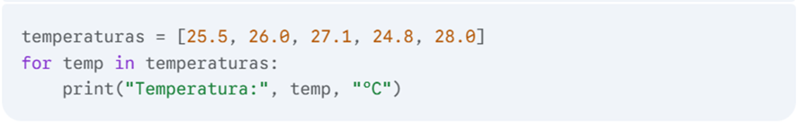
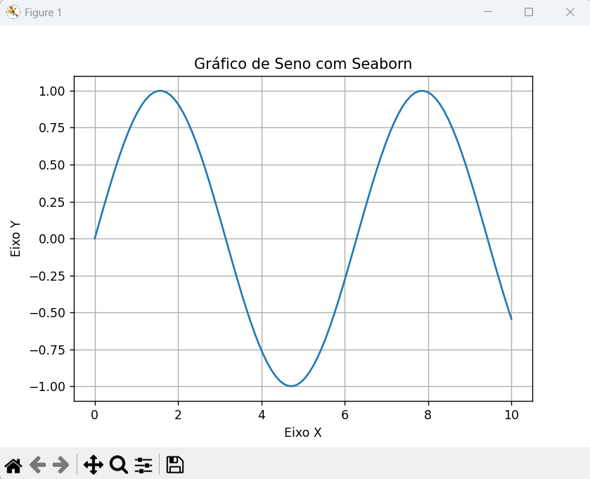

A engenharia sempre foi movida pela curiosidade e pelo desejo de transformar ideias em soluções concretas. Nos dias de hoje, a programação tornou-se uma poderosa aliada desse processo, permitindo que conceitos abstratos ganhem vida de forma dinâmica e interativa.
Este livro nasce do desejo de unir o rigor da engenharia à criatividade da programação, apresentando desafios e exemplos práticos de maneira lúdica e acessível. Aqui, o leitor é convidado a explorar problemas clássicos e modernos, utilizando a lógica computacional como ferramenta para desvendar mistérios, construir modelos e experimentar soluções inovadoras.
Mais do que ensinar técnicas, esta obra busca despertar a curiosidade e o prazer pelo aprendizado, mostrando que a engenharia pode ser divertida e instigante quando aliada ao universo da programação. Esperamos que cada capítulo inspire novas descobertas e motive o leitor a ir além, explorando o fascinante mundo onde ciência, tecnologia e imaginação se encontram.
Boa leitura e boas descobertas!
A presente apostila tem como objetivo introduzir os conceitos fundamentais de programação em linguagem Python com foco na aplicação em problemas práticos de engenharia. Python é uma linguagem moderna, acessível e amplamente adotada nas áreas de ciência, tecnologia e automação de processos industriais. Seu ecossistema rico em bibliotecas permite que engenheiros realizem desde simples análises numéricas até simulações e otimizações complexas com rapidez e precisão. O conteúdo foi organizado em módulos progressivos, partindo dos fundamentos da programação até aplicações reais por meio de projetos. A ideia é desenvolver a lógica de programação, incentivar a experimentação e fortalecer a capacidade de modelar problemas de engenharia utilizando ferramentas computacionais.
Ao final, o leitor será capaz de:
Esta apostila é indicada para estudantes de cursos técnicos e superiores em engenharia e áreas afins, bem como profissionais que desejam iniciar no uso da programação para aplicações técnicas.
Boa leitura e bons estudos!
Campo Largo – PR
Este primeiro módulo tem como objetivo estabelecer uma base sólida em programação Python, essencial para todas as aplicações que veremos ao longo desta apostila. Dominar os fundamentos da linguagem é crucial para compreender e desenvolver soluções computacionais eficazes para problemas de engenharia.
Neste módulo, vamos explorar os tipos de dados fundamentais em Python, como números inteiros (INT), números de ponto flutuante (FLOAT), cadeias de caracteres (STR) e valores booleanos (BOOL). Entender como representar e manipular esses diferentes tipos de dados é o primeiro passo para realizar cálculos e processar informações em Python.
Além disso, abordaremos os operadores aritméticos e lógicos, que nos permitem realizar operações matemáticas e tomar decisões lógicas dentro dos nossos programas. A capacidade de realizar cálculos e avaliar condições é fundamental para resolver problemas de engenharia, desde a análise de dados experimentais até a modelagem de sistemas físicos.
Finalmente, introduziremos os conceitos de entrada e saída de dados, ensinando como interagir com o usuário e como ler e escrever informações. Também daremos os primeiros passos na aplicação desses conhecimentos em cálculos simples voltados para a engenharia, preparando o terreno para problemas mais complexos nos módulos seguintes.
Ao concluir estes módulos, você estará apto a escrever programas Python simples, mas poderosos, que podem realizar cálculos, manipular dados e interagir com o mundo exterior, lançando as bases para sua jornada na programação aplicada à engenharia.
Em Python, assim como em outras linguagens de programação, os dados são classificados em diferentes tipos. Cada tipo de dado possui características e comportamentos específicos, o que permite ao computador interpretar e manipular as informações corretamente.
Nesta seção, vamos explorar os quatro tipos de dados fundamentais: - inteiros (INT), - números de ponto flutuante (FLOAT), - cadeias de caracteres (STR) e - booleanos (BOOL).
O tipo de dado int representa números inteiros, ou seja, números que não possuem parte decimal. Eles podem ser positivos, negativos ou zero.
Exemplos em engenharia:
O tipo de dado float representa números reais, ou seja,
números que podem possuir uma parte decimal.
Exemplos em engenharia:
gravidade = 9.81 (m/s²)tensao = 220.5 (V)atrito = 0.25vazao = 2.75 (m³/s)temperatura = 37.5
(°C)O tipo de dado str representa texto, ou seja, uma
sequência de caracteres. As cadeias de caracteres são delimitadas por
aspas simples (’) ou aspas duplas (“).
Exemplos em engenharia:
material = "Aço Carbono"componente = "Válvula de Segurança"unidade = "MPa" (MegaPascal)resultado_ensaio = "Aprovado"O tipo de dado bool representa valores lógicos, ou seja,
verdadeiro (True) ou falso (False). Eles são fundamentais para realizar
testes condicionais e controlar o fluxo de execução de um programa.
Exemplos em engenharia:
sensor_ligado = Truetemperatura_acima_limite = Falsefalha_detectada = Falsevalvula_aberta = TrueCompreender esses tipos de dados é essencial para escrever programas que manipulem informações de forma correta e eficiente em aplicações de engenharia.
Imagine que você precisa calcular a tensão em um resistor usando a Lei de Ohm (V = I * R), onde: - V é a tensão (em Volts) - I é a corrente (em Amperes) - R é a resistência (em Ohms)
Além disso, vamos verificar se a potência dissipada no resistor (P = V * I) excede um valor limite.
Código em Python:
# Definição das variáveis
# Corrente elétrica (float)
corrente = 2.0 # Amperes
# Resistência elétrica (float)
resistencia = 10.0 # Ohms
# Limite de potência (float)
potencia_limite = 20.0 # Watts
# Nome do resistor (string)
nome_resistor = "R1"
# Cálculo da tensão (float)
tensao = corrente * resistencia
# Cálculo da potência (float)
potencia = tensao * corrente
# Verificação da potência (bool)
potencia_excede_limite = potencia > potencia_limite
# Exibição dos resultados
print("Cálculo da Tensão e Potência em um Resistor")
print("------------------------------------------")
print("Nome do Resistor:", nome_resistor)
print("Corrente (A):", corrente)
print("Resistência (Ω):", resistencia)
print("Tensão (V):", tensao)
print("Potência (W):", potencia)
print("Potência excede o limite?", potencia_excede_limite)
# Conversão de tipo (demonstração)
# Converter a tensão para inteiro (truncando a parte decimal)
tensao_inteira = int(tensao)
print("Tensão (V, inteiro):", tensao_inteira)Como usar este código no Visual Studio Code:
01_codigo_calculo_resistor.py.python 01_codigo_calculo_resistor.pyExplicação do Código:
float para grandezas físicas,
str para o nome do resistor e bool para o
resultado da comparação.float para
int.Resultado:
Cálculo da Tensão e Potência em um Resistor
------------------------------------------
Nome do Resistor: R1
Corrente (A): 2.0
Resistência (Ω): 10.0
Tensão (V): 20.0
Potência (W): 40.0
Potência excede o limite? True
Tensão (V, inteiro): 20Este exemplo prático mostra como os tipos de dados fundamentais são aplicados em um problema simples de engenharia, combinando cálculo, lógica e representação de informações do mundo real.
Neste exemplo, vamos simular a trajetória de um projétil lançado sob um ângulo e com uma velocidade inicial, e gerar um gráfico da trajetória. Este exemplo combina física básica com a visualização de dados.
Código em Python:
import matplotlib.pyplot as plt
import math
# Dados de entrada (tipos float e int)
velocidade_inicial = 20.0 # m/s
angulo_graus = 45 # graus
angulo_radianos = math.radians(angulo_graus) # conversão para radianos
gravidade = 9.81 # m/s²
tempo_total = (2 * velocidade_inicial * math.sin(angulo_radianos)) / gravidade
# Listas para armazenar os pontos da trajetória (listas de floats)
tempos = []
posicoes_x = []
posicoes_y = []
# Cálculo da trajetória
intervalo_tempo = 0.1 # segundos
tempo = 0.0
while tempo <= tempo_total:
tempos.append(tempo)
posicao_x = velocidade_inicial * math.cos(angulo_radianos) * tempo
posicao_y = velocidade_inicial * math.sin(angulo_radianos) * tempo - 0.5 * gravidade * tempo**2
posicoes_x.append(posicao_x)
posicoes_y.append(posicao_y)
tempo += intervalo_tempo
# Nome do projétil (string)
nome_projétil = "Projétil A"
# Geração do gráfico
plt.plot(posicoes_x, posicoes_y)
plt.title("Trajetória de um Projétil")
plt.xlabel("Distância Horizontal (m)")
plt.ylabel("Altura (m)")
plt.grid(True)
# Adicionando informações textuais ao gráfico
plt.text(0, max(posicoes_y) * 0.9, f"Velocidade Inicial: {velocidade_inicial} m/s", fontsize=9)
plt.text(0, max(posicoes_y) * 8, f"Ângulo: {angulo_graus} graus", fontsize=9)
plt.text(0, max(posicoes_y) * 0.7, nome_projétil, fontsize=12, color='red')
plt.show()
# Imprimindo informações relevantes (demonstração de uso de tipos)
print(f"Tempo total de voo: {tempo_total:.2f} s") # Formatação de float
print(f"Tipo da variável 'nome_projétil': {type(nome_projétil)}") # Mostrando o tipo
print(f"A altura máxima atingida foi: {max(posicoes_y):.2f} m")Resultado:
Tempo total de voo: 2.04 s
Tipo da variável 'nome_projétil': <class 'str'>
A altura máxima atingida foi: 10.20 mComo usar este código no Visual Studio Code: 1. Abra o Visual Studio Code. 2. Crie um arquivo e salve-o como 02_codigo_trajetoria_projetil.py. 3. Copie e cole o código acima no arquivo. 4. Certifique-se de ter o Matplotlib instalado. Se não tiver, abra o terminal no VS Code e digite: pip install matplotlib e pressione Enter. 5. Execute o código da mesma forma que no exemplo anterior. 6. Observe a saída: Além da saída no terminal, uma janela com o gráfico da trajetória do projétil será exibida.
Explicação do Código:
Tipos de Dados: - FLOAT: Usado para velocidade, ângulo (em radianos), gravidade, tempo e as posições x e y. - INT: Usado para o ângulo em graus. - STR: Usado para o nome do projétil. - LIST: Usado para armazenar sequências de valores de tempo, posições x e posições y. Listas são estruturas de dados que armazenam múltiplos valores do mesmo tipo (neste caso, float).
Cálculos: O código realiza cálculos de física para determinar a trajetória do projétil, decompondo a velocidade inicial em componentes horizontal e vertical e usando as equações do movimento uniformemente variado.
Visualização: A biblioteca matplotlib.pyplot é usada para criar o gráfico da trajetória. plt.plot() desenha a linha, plt.title(), plt.xlabel(), plt.ylabel() e plt.grid() definem o título, rótulos dos eixos e a grade do gráfico, respectivamente. plt.show() exibe o gráfico. plt.text() adiciona texto informativo ao gráfico.
Estruturas de Dados: As listas tempos, posicoes_x e posicoes_y são usadas para armazenar múltiplos valores de dados, o que é essencial para plotar o gráfico.
Conversão de Tipo: A função math.radians() converte o ângulo de graus para radianos, demonstrando a conversão entre tipos relacionados.
Formatação de Saída: O uso de f-strings (strings formatadas) com especificadores de formatação (:.2f) permite controlar o número de casas decimais na saída. type() é usado para exibir o tipo de uma variável.
Este exemplo é mais complexo e demonstra como os tipos de dados são usados em conjunto com cálculos matemáticos e bibliotecas de visualização para resolver e apresentar um problema de engenharia de forma completa.
Resultado:
Em Python, operadores são símbolos especiais que realizam operações em valores (chamados de operandos). Eles são essenciais para realizar cálculos, comparações e manipular dados em geral. Nesta seção, vamos explorar os operadores aritméticos e lógicos, que são fundamentais para a programação em engenharia.
Código Python:
# Exemplo de uso de operadores aritméticos
a = 10
b = 5
soma = a + b
subtracao = a - b
multiplicacao = a * b
divisao = a / b
print("Soma:", soma)
print("Subtração:", subtracao)
print("Multiplicação:", multiplicacao)
print("Divisão:", divisao)Resultado:
Soma: 15
Subtração: 5
Multiplicação: 50
Divisão: 2.0Os operadores aritméticos são usados para realizar operações matemáticas básicas.
Adição (+): Soma dois valores. Exemplo: forca1 + forca2 (soma de duas forças)
Subtração (-): Subtrai o segundo valor do primeiro. Exemplo: temperatura_final - temperatura_inicial (variação de temperatura)
**Multiplicação (*):** Multiplica dois valores. Exemplo: comprimento * largura (área de uma superfície)
Divisão (/): Divide o primeiro valor pelo segundo (sempre retorna um FLOAT). Exemplo: distancia / tempo (velocidade média)
Divisão Inteira (//): Divide o primeiro valor pelo segundo e retorna a parte inteira do resultado (truncando a parte decimal). Exemplo: total_pecas // pecas_por_caixa (número de caixas completas)
Módulo (%): Retorna o resto da divisão do primeiro valor pelo segundo. Exemplo: total_segundos % 60 (obter os segundos restantes após dividir por 60)
Exponenciação ():** Eleva o primeiro valor à potência do segundo valor. Exemplo: base ** altura
Os operadores lógicos são usados para combinar ou negar expressões lógicas (valores booleanos True ou False).
AND (and): Retorna True se ambas as expressões forem True. Exemplo: temperatura > temperatura_minima and pressao < pressao_maxima (verificar se a temperatura está dentro da faixa e a pressão também)
OR (or): Retorna True se pelo menos uma das expressões for True. Exemplo: nivel_tanque < nivel_minimo or valvula_emergencia_aberta (verificar se o nível do tanque está baixo ou a válvula de emergência está aberta)
NOT (not): Nega uma expressão (inverte seu valor lógico). Exemplo: not sensor_ativado (verificar se o sensor não está ativado)
1) Cálculo da Área de um Retângulo:
comprimento = 10.5 # metros (float)
largura = 5.0 # metros (float)
area = comprimento * largura # metros quadrados (float)
print("Área do retângulo:", area, "m²")Resultado:
Área do retângulo: 52.5 m²2) Verificação de Condições de Segurança:
pressao = 250.0 # PSI (float)
temperatura = 120.0 # graus Celsius (float)
pressao_maxima = 240.0 # PSI (float)
temperatura_maxima = 110.0 # graus Celsius (float)
seguro = pressao <= pressao_maxima and temperatura <= temperatura_maxima # bool
print("Condições de operação seguras:", seguro)Resultado:
Condições de operação seguras: False3) Cálculo de Força Resultante:
massa = 5.0 # kg (float)
aceleracao = 9.8 # m/s² (float)
forca_resultante = massa * aceleracao # N (float)
print("Força resultante:", forca_resultante, "N")Resultado:
Força resultante: 49.0 NEste texto fornece uma base sólida sobre operadores aritméticos e lógicos, juntamente com exemplos práticos de como eles são usados em contextos de engenharia.
Descrição:
Um engenheiro civil precisa desenvolver um programa em Python para auxiliar no cálculo da área e perímetro de um terreno retangular e verificar se ele atende a certos critérios de viabilidade para construção.
Requisitos:
área = comprimento * largura).perímetro = 2 * (comprimento + largura)).Exemplo de Interação:
Digite o comprimento do terreno (m): 50
Digite a largura do terreno (m): 30
Digite a área mínima permitida para construção (m²): 1000
Área do terreno: 1500.00 m²
Perímetro do terreno: 160.00 m
Terreno viável para construção: SimDicas: - Use os tipos de dados float
para representar as medidas do terreno e a área mínima. - Use os
operadores aritméticos *, + e /
para realizar os cálculos. - Use os operadores lógicos
>= e < e o operador and
para realizar as verificações de viabilidade. - Use a função
input() para obter os dados do usuário. - Use a função
print() para exibir os resultados. - Use f-strings para
formatar a saída com duas casas decimais.
Código Python de Exemplo:
# Solicitar entrada do usuário
comprimento = float(input("Digite o comprimento do terreno (m): "))
largura = float(input("Digite a largura do terreno (m): "))
area_minima = float(input("Digite a área mínima permitida para construção (m²): "))
# Calcular área e perímetro
area = comprimento * largura
perimetro = 2 * (comprimento + largura)
# Verificar viabilidade
viavel = area >= area_minima and perimetro < 100
# Exibir resultados
print(f"Área do terreno: {area:.2f} m²")
print(f"Perímetro do terreno: {perimetro:.2f} m")
print(f"Terreno viável para construção: {'Sim' if viavel else 'Não'}")Resultado:
Área do terreno: 1500.00 m²
Perímetro do terreno: 160.00 m
Terreno viável para construção: SimEste exercício combina o uso de tipos de dados, operadores aritméticos e lógicos em um contexto prático de engenharia civil, proporcionando uma aplicação mais completa dos conceitos aprendidos.
Descrição:
Um engenheiro mecânico precisa analisar a deformação de uma viga sob diferentes cargas. O programa em Python deve calcular a deflexão da viga em função da posição ao longo do seu comprimento e gerar um gráfico da deflexão.
Requisitos:
Calcular a deflexão (y) da viga em função da posição (x) ao longo do comprimento, usando as seguintes fórmulas:
Deflexão para Carga Uniforme:
y = (w / (24 * E * I)) * (-x⁴ + 2 * L * x³ - L³ * x)
Deflexão para Carga Pontual: ``` Para 0 ≤ x ≤ L/2: y = (P * x / (48 * E * I)) * (3 * L² - 4 * x²)
Para L/2 < x ≤ L: y = (P * (L - x) / (48 * E * I)) * (3 * L² - 4 * (L - x)²) ```
matplotlib para gerar um gráfico da
deflexão (y) em função da posição (x).Exemplo de Interação:
Digite o comprimento da viga (m): 5
Digite o módulo de elasticidade (Pa): 200000000000
Digite o momento de inércia (m^4): 0.0001
Digite o tipo de carregamento (1-Uniforme, 2-Pontual): 1
Digite a intensidade da carga (N/m): 1000Código Python de Exemplo:
import matplotlib.pyplot as plt
# Entrada de dados
L = float(input("Digite o comprimento da viga (m): "))
E = float(input("Digite o módulo de elasticidade (Pa): "))
I = float(input("Digite o momento de inércia (m^4): "))
tipo_carregamento = int(input("Digite o tipo de carregamento (1-Uniforme, 2-Pontual): "))
if tipo_carregamento == 1:
w = float(input("Digite a intensidade da carga uniforme (N/m): "))
P = 0
elif tipo_carregamento == 2:
P = float(input("Digite a magnitude da carga pontual (N): "))
w = 0
else:
print("Tipo de carregamento inválido.")
exit()
# Cálculo da deflexão
num_pontos = 100
x_valores = [i * L / num_pontos for i in range(num_pontos + 1)]
y_valores = []
for x in x_valores:
if tipo_carregamento == 1:
y = (w / (24 * E * I)) * (-x**4 + 2 * L * x**3 - L**3 * x)
elif tipo_carregamento == 2:
if 0 <= x <= L / 2:
y = (P * x / (48 * E * I)) * (3 * L**2 - 4 * x**2)
else:
y = (P * (L - x) / (48 * E * I)) * (3 * L**2 - 4 * (L - x)**2)
y_valores.append(y)
# Geração do gráfico
plt.plot(x_valores, y_valores)
plt.title("Deflexão da Viga")
plt.xlabel("Posição (m)")
plt.ylabel("Deflexão (m)")
plt.grid(True)
plt.savefig("deflexao_viga.png")
plt.show()
# Saída de dados
print("\nComprimento da viga:", L, "m")
print("Módulo de elasticidade:", E, "Pa")
print("Momento de inércia:", I, "m^4")
if tipo_carregamento == 1:
print("Carga uniforme:", w, "N/m")
elif tipo_carregamento == 2:
print("Carga pontual:", P, "N")
print("Deflexão máxima:", max(y_valores), "m")
print("Gráfico da deflexão salvo como deflexao_viga.png")Resultado:
Digite o comprimento da viga (m): 5
Digite o módulo de elasticidade (Pa): 200000000000
Digite o momento de inércia (m^4): 0.0001
Digite o tipo de carregamento (1-Uniforme, 2-Pontual): 1
Digite a intensidade da carga (N/m): 1000
Deflexão máxima: 0.01042 m
Gráfico da deflexão salvo como deflexao_viga.pngGráfico:
Este exercício é mais completo e envolve: - Entrada de dados variados
(comprimento, propriedades do material, tipo e intensidade de
carregamento). - Cálculos condicionais (usando IF e ELIF) para aplicar a
fórmula correta de deflexão. - Uso de listas para armazenar múltiplos
valores de X e Y para plotagem. - Geração de um gráfico com
matplotlib para visualizar a deformação da viga. - Saída
formatada dos resultados.
Este tipo de problema é representativo de análises comuns em engenharia mecânica e demonstra a utilidade da programação para resolver problemas complexos e visualizar resultados.
No exemplo do cálculo da deflexão da viga, a teoria física aplicada é a da Mecânica dos Sólidos, especificamente a Teoria da Elasticidade Linear para vigas. As fórmulas utilizadas derivam das equações da linha elástica, que descrevem o comportamento de vigas sob flexão.
Fórmulas e Teoria Detalhada:
Fórmula:
y = (w / (24 * E * I)) * (-x⁴ + 2 * L * x³ - L³ * x)Teoria: - Esta fórmula é derivada da equação diferencial da linha elástica para uma viga submetida a uma carga uniformemente distribuída. - A equação da linha elástica relaciona a curvatura da viga com o momento fletor interno. - As suposições incluem que o material da viga é linearmente elástico, homogêneo e isotrópico, e que as deflexões são pequenas em comparação com o comprimento da viga.
Fórmula:
Para 0 <= x <= L/2:
y = (P * x / (48 * E * I)) * (3 * L² - 4 * x²)
Para L/2 < x <= L:
y = (P * (L - x) / (48 * E * I)) * (3 * L² - 4 * (L - x)²)Teoria: - Estas fórmulas são derivadas da equação da linha elástica para uma viga com uma carga concentrada aplicada no meio do vão. - Existem duas equações porque o comportamento da viga é diferente à esquerda e à direita da carga pontual. - As mesmas suposições da teoria da carga uniforme se aplicam aqui.
Onde: - y = Deflexão da viga (deslocamento vertical) - x = Posição ao longo do comprimento da viga - L = Comprimento total da viga - E = Módulo de elasticidade do material (resistência do material à deformação elástica) - I = Momento de inércia da seção transversal da viga (resistência da seção da viga à flexão) - w = Intensidade da carga uniforme (força por unidade de comprimento) - P = Magnitude da carga pontual (força concentrada)
Importância na Engenharia:
Essas fórmulas e a teoria da flexão de vigas são fundamentais na engenharia estrutural e mecânica. Engenheiros usam esses princípios para: - Dimensionar vigas: Determinar as dimensões e o material de uma viga para suportar cargas com segurança e dentro de limites aceitáveis de deflexão. - Analisar estruturas: Calcular as tensões e deformações em estruturas que contêm vigas. - Projetar máquinas: Garantir que os componentes de máquinas que atuam como vigas (eixos, suportes etc.) funcionem corretamente.
Compreender a teoria por trás das fórmulas é crucial para aplicar corretamente os resultados dos cálculos e garantir a segurança e a eficiência dos projetos de engenharia.
Em programação, a entrada e saída de dados referem-se à forma como um programa recebe informações (entrada) e como ele apresenta os resultados (saída). Em Python, as funções input() e print() são as mais comuns para realizar essas operações.
A função input() permite que o programa receba dados do
usuário através do teclado.
Sintaxe:
variavel = input("Mensagem para o usuário")
Funcionamento:
input() exibe a mensagem para o usuário
(prompt) na tela.input() retorna a informação digitada como uma
string.Importante: Mesmo que o usuário digite números,
a função input() sempre retorna uma STRING. Se você
precisar usar a entrada como número, será necessário convertê-la
explicitamente usando as funções int() (para inteiros) ou
float() (para números de ponto flutuante).
Exemplos em engenharia:
Solicitar ao usuário o diâmetro de um tubo:
diametro_tubo = float(input("Digite o diâmetro do tubo (em metros): "))
print("Diâmetro do tubo:", diametro_tubo, "m")Pedir a vazão de um fluido:
vazao_fluido = float(input("Digite a vazão do fluido (em m³/s): "))
print("Vazão do fluido:", vazao_fluido, "m³/s")Obter o nome de um material:
nome_material = input("Digite o nome do material: ")
print("Nome do material:", nome_material)A função print() exibe informações na tela do
computador.
print(argumento1, argumento2, ..., argumentoN)print() exibe os valores dos argumentos na
tela.print() os exibe separados por espaço.print() adiciona uma quebra de
linha ao final da saída, ou seja, o próximo print() exibirá
na linha seguinte.Exibir o resultado de um cálculo:
resultado = 2 + 2
print("O resultado da soma é:", resultado)Mostrar uma mensagem de alerta:
print("Atenção: Verifique os dados de entrada!")Exibir informações formatadas:
nome_material = "Aço"
diametro_tubo = 0.1
print(f"Dados do tubo:")
print(f"Nome do material: {nome_material}")
print(f"Diâmetro: {diametro_tubo} m")Apresentar os dados de um experimento:
temperatura = 25.5
pressao = 101.3
print(f"Dados do experimento:")
print(f"Temperatura: {temperatura} °C")
print(f"Pressão: {pressao} kPa")A habilidade de obter dados do usuário e apresentar resultados de forma clara é fundamental para criar programas interativos e úteis em engenharia.
Descrição:
Um engenheiro químico precisa de um programa para calcular a
conversão de um reagente em um reator.
O programa deve solicitar ao usuário a quantidade inicial do reagente, a
quantidade final após a reação e exibir a conversão calculada. Além
disso, deve pedir informações sobre o tipo de reator e o tempo de
reação.
Requisitos:
str).float).float).str).float).Calcular a conversão do reagente usando a fórmula:
conversao = (quantidade_inicial - quantidade_final) / quantidade_inicial * 100Exemplo de Interação:
Digite o nome do reagente: Amoníaco
Digite a quantidade inicial do reagente (em mols): 10.0
Digite a quantidade final do reagente (em mols): 2.0
Digite o tipo do reator: Reator de Batelada
Digite o tempo de reação (em minutos): 30.0
Reagente: Amoníaco
Quantidade inicial: 10.00 mols
Quantidade final: 2.00 mols
Conversão: 80.00%
Tipo do reator: Reator de Batelada
Tempo de reação: 30.00 minutosCódigo Python de Exemplo:
# Solicitar entrada do usuário
nome_reagente = input("Digite o nome do reagente: ")
quantidade_inicial = float(input("Digite a quantidade inicial do reagente (em mols): "))
quantidade_final = float(input("Digite a quantidade final do reagente (em mols): "))
tipo_reator = input("Digite o tipo do reator: ")
tempo_reacao = float(input("Digite o tempo de reação (em minutos): "))
# Cálculo da conversão
conversao = (quantidade_inicial - quantidade_final) / quantidade_inicial * 100
# Exibir resultados
print(f"\nReagente: {nome_reagente}")
print(f"Quantidade inicial: {quantidade_inicial:.2f} mols")
print(f"Quantidade final: {quantidade_final:.2f} mols")
print(f"Conversão: {conversao:.2f}%")
print(f"Tipo do reator: {tipo_reator}")
print(f"Tempo de reação: {tempo_reacao:.2f} minutos")Dicas: - Use a função input() para
obter os dados do usuário. - Use os tipos de dados float e
str para armazenar os valores. - Lembre-se de converter as
entradas numéricas de input() para float. -
Use f-strings para formatar a saída, especialmente a conversão
(:.2f%).
+---------------------+
| Programa Python |
+---------------------+
||
+---------------------+
| Entrada de Dados |
+---------------------+
||
+---------------------+
| input() |
+---------------------+
||
+-----------------------------+
| Dados do Usuário (Teclado) |
+-----------------------------+
||
+-------------------------------+
| Processamento (Cálculos, Lógica) |
+-------------------------------+
||
+---------------------+
| Saída de Dados |
+---------------------+
||
+---------------------+
| print() |
+---------------------+
||
+---------------------+
| Resultados |
| (Tela) |
+---------------------+
||Descrição do Esquema: 1. Programa Python: Representa o código Python que o engenheiro escreve para resolver um problema específico (e.g., cálculo de tensões, simulação de um circuito). 2. input() function: Indica o ponto onde o programa interage com o usuário para receber dados. A função input() aguarda que o usuário digite informações através do teclado. 3. Dados do Usuário (Teclado): Mostra a entrada de dados feita pelo usuário, que podem ser valores numéricos, texto etc. 4. Processamento (Cálculos, Lógica): Representa a parte do programa onde os dados de entrada são manipulados, cálculos são realizados, decisões lógicas são tomadas etc. 5. print() function: Indica o ponto onde o programa exibe os resultados ou informações para o usuário. A função print() envia a saída para a tela. 6. Resultados (Tela): Mostra a saída do programa, que pode incluir números, texto, mensagens, gráficos (em módulos mais avançados) etc.
Detalhes Técnicos: - O esquema é genérico e se aplica a muitos programas que interagem com o usuário. - As setas indicam a direção do fluxo de dados. - Os retângulos representam componentes ou processos do programa. - Não há cores para manter o estilo técnico.
Este esquema ajuda a visualizar o fluxo de informações em um programa Python, desde a obtenção dos dados até a apresentação dos resultados.
Código Python:
# Entrada de dados
nome_reagente = input("Digite o nome do reagente: ")
quantidade_inicial = float(input("Digite a quantidade inicial de " + nome_reagente + " (mols): "))
quantidade_final = float(input("Digite a quantidade final de " + nome_reagente + " (mols): "))
tipo_reator = input("Digite o tipo do reator: ")
tempo_reacao = float(input("Digite o tempo de reação (minutos): "))
# Cálculo da conversão
conversao = (quantidade_inicial - quantidade_final) / quantidade_inicial
# Saída de dados
print("\nReagente:", nome_reagente)
print(f"Quantidade Inicial: {quantidade_inicial:.2f} mols")
print(f"Quantidade Final: {quantidade_final:.2f} mols")
print(f"Conversão: {conversao * 100:.2f} %")
print("Tipo do Reator:", tipo_reator)
print("Tempo de Reação:", tempo_reacao, "minutos")Resultado:
Reagente: Amoníaco
Quantidade Inicial: 10.00 mols
Quantidade Final: 2.00 mols
Conversão: 80.00 %
Tipo do Reator: Reator de Batelada
Tempo de Reação: 30.00 minutosEste exercício aborda um problema prático de engenharia química e reforça o uso de entrada e saída de dados com formatação.
Nesta seção, vamos explorar como aplicar os fundamentos da programação Python para realizar cálculos simples em problemas de engenharia. Os exemplos a seguir ilustram como usar os tipos de dados, operadores aritméticos e entrada/saída para resolver tarefas comuns em diferentes disciplinas da engenharia.
Problema: Calcular a área da seção transversal de uma viga retangular. Fórmula: Área = base * altura Código Python:
# Entrada de dados
base = float(input("Digite a base da viga (m): "))
altura = float(input("Digite a altura da viga (m): "))
# Cálculo da área
area = base * altura
# Saída de dados
print(f"A área da seção transversal da viga é: {area:.2f} m²")Resultado:
Digite a base da viga (m): 0.3
Digite a altura da viga (m): 0.5
A área da seção transversal da viga é: 0.15 m²Problema: Calcular a corrente elétrica em um resistor dado a tensão e a resistência. Fórmula: Corrente = Tensão / Resistência Código Python:
# Entrada de dados
tensao = float(input("Digite a tensão (V): "))
resistencia = float(input("Digite a resistência (Ω): "))
# Cálculo da corrente
corrente = tensao / resistencia
# Saída de dados
print(f"A corrente elétrica é: {corrente:.2f} A")Resultado:
A corrente elétrica é: 2.00 AProblema: Calcular a energia potencial gravitacional de um objeto. Fórmula: Energia Potencial = massa * gravidade * altura Código Python:
# Entrada de dados
massa = float(input("Digite a massa do objeto (kg): "))
gravidade = 9.81 # Aceleração da gravidade (m/s²)
altura = float(input("Digite a altura (m): "))
# Cálculo da energia potencial
energia_potencial = massa * gravidade * altura
# Saída de dados
print(f"A energia potencial gravitacional é: {energia_potencial:.2f} J")Resultado:
Digite a massa do objeto (kg): 10
Digite a altura (m): 5
A energia potencial gravitacional é: 490.50 JProblema: Converter vazão mássica para vazão molar. Fórmula: Vazão Molar = Vazão Mássica / Massa Molar Código Python:
# Entrada de dados
vazao_massica = float(input("Digite a vazão mássica (kg/s): "))
massa_molar = float(input("Digite a massa molar (kg/mol): "))
# Cálculo da vazão molar
vazao_molar = vazao_massica / massa_molar
# Saída de dados
print(f"A vazão molar é: {vazao_molar:.2f} mol/s")Resultado:
A vazão molar é: 2.00 mol/sProblema: Calcular a concentração de um poluente em uma solução. Fórmula: Concentração = Massa do Poluente / Volume da Solução Código Python:
# Entrada de dados
massa_poluente = float(input("Digite a massa do poluente (kg): "))
volume_solucao = float(input("Digite o volume da solução (m³): "))
# Cálculo da concentração
concentracao = massa_poluente / volume_solucao
# Saída de dados
print(f"A concentração do poluente é: {concentracao:.2f} kg/m³")Resultado:
Digite a massa do poluente (kg): 0.5
Digite o volume da solução (m³): 2
A concentração do poluente é: 0.25 kg/m³Estes exemplos demonstram como os conceitos básicos de Python podem ser aplicados para resolver problemas simples em diferentes áreas da engenharia. Eles reforçam a importância de: - Entender os tipos de dados apropriados para representar grandezas físicas. - Utilizar os operadores aritméticos corretamente para realizar os cálculos. - Interagir com o usuário para obter os dados necessários e apresentar os resultados de forma clara. Nos próximos módulos, exploraremos conceitos mais avançados de Python para resolver problemas de engenharia mais complexos.
Neste módulo sobre estrutura de controle, exploramos os tipos de dados, operadores e entrada/saída, que nos permitem realizar cálculos e interagir com o usuário. No entanto, a capacidade de um programa de tomar decisões e repetir ações é fundamental para resolver problemas mais complexos. É aqui que entram as estruturas de controle. Este módulo é dedicado ao estudo das estruturas de controle em Python, que são ferramentas essenciais para direcionar o fluxo de execução de um programa. Vamos nos aprofundar em como controlar quais partes do código são executadas e quantas vezes, com base em condições específicas. Primeiramente, abordaremos as condicionais (IF, ELIF, ELSE). As condicionais permitem que o programa escolha diferentes caminhos de execução, dependendo se uma determinada condição é verdadeira ou falsa. Isso é crucial para implementar a lógica de decisão em problemas de engenharia, como verificar se um sensor excedeu um limite de segurança ou classificar dados de acordo com critérios específicos. Em seguida, exploraremos os laços de repetição (FOR, WHILE). Os laços de repetição nos permitem executar um bloco de código repetidamente, até que uma condição seja satisfeita. Isso é extremamente útil para automatizar tarefas repetitivas, como iterar sobre conjuntos de dados, realizar cálculos iterativos ou simular o comportamento de sistemas ao longo do tempo. Finalmente, demonstraremos aplicações práticas em verificação de condições operacionais. Através de exemplos relevantes para a engenharia, mostraremos como as estruturas de controle podem ser usadas para monitorar processos, garantir a segurança de sistemas e automatizar a tomada de decisões em tempo real. Ao concluir este módulo, você estará apto a desenvolver programas Python que não apenas realizam cálculos, mas também tomam decisões lógicas e executam ações repetitivas, abrindo caminho para a criação de soluções de engenharia mais robustas e inteligentes.
As estruturas condicionais são fundamentais para controlar o fluxo de execução de um programa, permitindo que diferentes blocos de código sejam executados dependendo se uma condição é verdadeira ou falsa. Em Python, as palavras-chave if, elif (abreviação de “else if”) e else são usadas para definir essas estruturas.
A estrutura if é a mais básica e executa um bloco de código somente se uma condição especificada for verdadeira.
Sintaxe:
if condição:
# bloco de código a ser executado se a condição for verdadeira
passFuncionamento: - A condição é uma expressão que pode ser avaliada como True (verdadeiro) ou False (falso). - Se a condição for True, o bloco de código indentado abaixo do if é executado. - Se a condição for False, o bloco de código é ignorado e o programa continua a execução na próxima linha após o bloco if.
Código Python:
indice_poluicao = float(input("Digite o índice de poluição do ar: "))
if indice_poluicao <= 50:
print("Qualidade do ar: Boa")
elif indice_poluicao <= 100:
print("Qualidade do ar: Moderada")
elif indice_poluicao <= 150:
print("Qualidade do ar: Insatisfatória")
elif indice_poluicao <= 200:
print("Qualidade do ar: Ruim")
else:
print("Qualidade do ar: Muito Ruim")Resultado:
Digite o índice de poluição do ar: 75
Qualidade do ar: ModeradaA estrutura if-else permite executar um bloco de código se a condição for verdadeira e outro bloco de código se a condição for falsa. Sintaxe:
if condição:
# bloco de código a ser executado se a condição for verdadeira
pass
else:
# bloco de código a ser executado se a condição for falsa
passFuncionamento: - A condição é avaliada. - Se a condição for True, o bloco de código do if é executado. - Se a condição for False, o bloco de código do else é executado. - Apenas um dos blocos de código (o do if ou o do else) é executado.
Código Python:
tensao = float(input("Digite a tensão aplicada (N/m²): "))
limite = 100.0
if tensao > limite:
print("Material não resistente.")
else:
print("Material resistente.")Resultado:
Digite a tensão aplicada (N/m²): 75
Material resistente.A estrutura if-elif-else permite verificar múltiplas condições em sequência. O elif (else if) especifica uma nova condição a ser verificada se a condição anterior for falsa.
Sintaxe:
if condição1:
# bloco de código a ser executado se condição1 for verdadeira
pass
elif condição2:
# bloco de código a ser executado se condição2 for verdadeira
pass
else:
# bloco de código a ser executado se nenhuma das condições anteriores for verdadeira
passFuncionamento: - As condições são avaliadas em ordem. - Se uma condição for True, o bloco de código correspondente é executado e o restante da estrutura (elif e else) é ignorado. - Se nenhuma condição for True, o bloco de código do else (se houver) é executado. - Pode haver qualquer número de blocos elif. O bloco else é opcional.
Exemplo em engenharia: Classificar a qualidade do ar com base no índice de poluição.
Código Python:
indice_poluicao = float(input("Digite o índice de poluição do ar: "))
if indice_poluicao <= 50:
print("Qualidade do ar: Boa")
elif indice_poluicao <= 100:
print("Qualidade do ar: Moderada")
elif indice_poluicao <= 150:
print("Qualidade do ar: Insatisfatória")
elif indice_poluicao <= 200:
print("Qualidade do ar: Ruim")
else:
print("Qualidade do ar: Muito Ruim")Resultado:
Digite o índice de poluição do ar: 75
Qualidade do ar: ModeradaPontos-chave: - Indentação: A indentação é crucial em Python para definir os blocos de código dentro das estruturas condicionais. O código dentro de um bloco if, elif ou else deve ser indentado. - Operadores Lógicos: As condições nas estruturas condicionais geralmente envolvem operadores lógicos (and, or, not) e operadores de comparação (==, !=, >, <, >=, <=). - Flexibilidade: As estruturas condicionais podem ser aninhadas (uma dentro da outra) para criar lógicas de decisão mais complexas. Compreender e aplicar corretamente as estruturas condicionais é essencial para desenvolver programas que resolvam problemas reais de engenharia, onde a tomada de decisões é uma parte fundamental do processo.
Descrição: Um engenheiro civil precisa de um programa para classificar amostras de solo com base em seu Índice de Plasticidade (IP) e Limite de Liquidez (LL). O programa deve solicitar ao usuário os valores de IP e LL e exibir a classificação do solo de acordo com a tabela a seguir:
Requisitos:
Exemplo de Interação:
Digite o Limite de Liquidez (LL) do solo: 45
Digite o Índice de Plasticidade (IP) do solo: 25
Limite de Liquidez (LL): 45.00
Índice de Plasticidade (IP): 25.00
Classificação do Solo: Solo ArgilosoDicas:
Código Python:
# Entrada de dados
ll = float(input("Digite o Limite de Liquidez (LL): "))
ip = float(input("Digite o Índice de Plasticidade (IP): "))
# Classificação do solo
if ll >= 50 and ip >= 7:
classificacao = "Argila"
elif ll < 50 and 4 <= ip < 7:
classificacao = "Silte"
else:
classificacao = "Solo Não Plástico"
# Saída de dados
print(f"\nLimite de Liquidez (LL): {ll:.2f}")
print(f"Índice de Plasticidade (IP): {ip:.2f}")
print(f"Classificação do Solo: {classificacao}")Resultado:
Limite de Liquidez (LL): 45.00
Índice de Plasticidade (IP): 25.00
Classificação do Solo: Solo ArgilosoEste exercício aplica as estruturas condicionais em um problema prático de engenharia civil, demonstrando como a lógica de decisão pode ser implementada em programas para classificar dados e auxiliar na análise de materiais.
Na engenharia civil, a classificação de solos é uma etapa crucial no projeto e construção de fundações, estradas e outras estruturas. A tabela de classificação de solos baseada no Índice de Plasticidade (IP) e Limite de Liquidez (LL) é amplamente utilizada para entender as propriedades mecânicas do solo. A classificação de solos é baseada em normas técnicas, como a ASTM D2487, que define os critérios para categorizar solos em diferentes grupos, como argilas, siltes e solos não plásticos. Esses grupos são importantes porque influenciam diretamente o comportamento do solo sob carga, sua capacidade de suporte e sua suscetibilidade à deformação. A tabela de classificação apresentada no exercício é uma simplificação, mas reflete os princípios básicos usados na prática. A classificação correta do solo é essencial para garantir a segurança e a estabilidade das estruturas construídas sobre ele.
Dominar as estruturas condicionais IF, ELIF e ELSE é um marco importante na jornada de programação. Elas fornecem a base para criar programas que não apenas executam cálculos, mas também respondem dinamicamente a diferentes entradas e condições. Nos próximos itens e módulos, veremos como essa habilidade será aplicada em contextos mais complexos, como laços de repetição, funções e projetos de engenharia.
Os laços de repetição são fundamentais na programação, permitindo que
um bloco de código seja executado várias vezes, com base em uma
condição. Em Python, os principais tipos de laços são o for
e o while.
O laço for é usado para iterar sobre uma sequência (como
uma lista, tupla ou string) e executar um bloco de código para cada item
da sequência. A sintaxe básica é:
for item in sequencia:
# bloco de códigoO laço while, por outro lado, executa um bloco de código
enquanto uma condição específica for verdadeira. A sintaxe básica é:
while condicao:
# bloco de códigoAmbos os tipos de laços são amplamente utilizados em problemas de engenharia, como simulações, otimizações e análises de dados.
Os laços de repetição são estruturas de controle que permitem
executar um bloco de código repetidamente, um número específico de vezes
ou enquanto uma condição for verdadeira. Em Python, os dois tipos
principais de laços são FOR e WHILE. O laço for é usado
para iterar sobre uma sequência (como uma lista, tupla ou string) e
executar um bloco de código para cada item da sequência. A sintaxe
básica é:
for item in sequencia:
# bloco de códigoFuncionamento: - A variável item assume
o valor de cada elemento da sequencia a cada iteração. - O
bloco de código indentado abaixo do for é executado para
cada item. - O laço termina quando todos os itens da sequência foram
processados. Exemplo em engenharia: Calcular a média de
uma série de medidas de temperatura.
temperaturas = [20.5, 22.0, 19.8, 21.5, 23.0]
soma_temperaturas = 0.0
for temperatura in temperaturas:
soma_temperaturas += temperatura
media_temperatura = soma_temperaturas / len(temperaturas)
print(f"Média de temperatura: {media_temperatura:.2f} °C")Resultado:
Média de temperatura: 21.16 °CO laço while executa um bloco de código enquanto uma
condição específica for verdadeira. É útil quando o número de iterações
não é conhecido previamente.
Sintaxe:
while condicao:
# bloco de códigoFuncionamento: - A condição é avaliada antes de cada iteração. - Se a condição for True, o bloco de código indentado é executado. - Após a execução do bloco, a condição é verificada novamente. - O laço continua até que a condição se torne False.
Exemplos em engenharia: Iterar sobre uma lista de medições de temperatura: 
Calcular a soma dos quadrados dos 10 primeiros números inteiros:
soma_quadrados = 0
contador = 1
while contador <= 10:
soma_quadrados += contador**2
contador += 1
print(f"Soma dos quadrados: {soma_quadrados}")Funcionamento: - A condição é avaliada antes de cada iteração. - Se a condição for True, o bloco de código indentado é executado. - Após a execução do bloco, a condição é verificada novamente. - O laço continua até que a condição se torne False.
Exemplo em engenharia: Simular o resfriamento de um líquido até atingir uma temperatura segura.
temperatura = 100.0 # Temperatura inicial em °C
while temperatura > 30.0: # Condição de resfriamento
print(f"Temperatura atual: {temperatura:.2f} °C")
temperatura -= 5.0 # Resfriamento de 5 °C por iteração
print("Temperatura segura alcançada.")Resultado:
Temperatura atual: 100.00 °C
Temperatura atual: 95.00 °C
Temperatura atual: 90.00 °C
Temperatura atual: 85.00 °C
Temperatura atual: 80.00 °C
Temperatura atual: 75.00 °C
Temperatura atual: 70.00 °C
Temperatura atual: 65.00 °C
Temperatura atual: 60.00 °C
Temperatura atual: 55.00 °C
Temperatura atual: 50.00 °C
Temperatura atual: 45.00 °C
Temperatura atual: 40.00 °C
Temperatura atual: 35.00 °C
Temperatura segura alcançada.Pontos-chave: - Controle de
Iteração: O laço for é ideal quando se sabe o
número de iterações ou quando se está iterando sobre uma sequência. O
laço while é mais flexível, permitindo que o número de
iterações dependa de uma condição dinâmica. - Condição de
Parada: É crucial definir uma condição de parada para os laços
while para evitar laços infinitos (onde o laço nunca
termina). - Variáveis de Controle: As variáveis usadas
nas condições dos laços (como contador,
temperatura, etc.) devem ser atualizadas dentro do laço
para garantir que a condição de parada seja eventualmente alcançada. -
range(): A função range() é frequentemente
usada com o laço for para gerar sequências de números. Por
exemplo, for i in range(10): itera de 0 a 9.
Os laços de repetição são ferramentas poderosas para automatizar tarefas, processar grandes conjuntos de dados e implementar algoritmos iterativos em diversas aplicações de engenharia. Eles permitem que os engenheiros desenvolvam soluções eficientes e escaláveis para problemas complexos, economizando tempo e esforço no desenvolvimento de software.
Descrição: Um engenheiro químico precisa simular a conversão de um reagente A em um produto B em um reator batelada isotérmico. A reação segue uma cinética de primeira ordem:
Reação: A → BA taxa de reação é dada por:
- rA = -k * CAOnde: - -rA é a taxa de desaparecimento do reagente A (mol/L·min) - k é a constante de velocidade da reação (min⁻¹) - CA é a concentração do reagente A (mol/L)
O programa deve calcular a concentração de A e a conversão de A ao longo do tempo.
Requisitos:
CA(t) = CA0 * exp(-k * t)import math
# Entrada de Dados
CA0 = float(input("Concentração inicial de A (CA0) em mol/L: "))
k = float(input("Constante de velocidade da reação (k) em min⁻¹: "))
tempo_final = float(input("Tempo total de simulação (tempo_final) em minutos: "))
num_pontos = int(input("Número de pontos no tempo para calcular a concentração (num_pontos): "))
# Cálculos
tempos = []
concentracoes_A = []
for i in range(num_pontos + 1):
t = i * (tempo_final / num_pontos) # Tempo atual
CA = CA0 * math.exp(-k * t) # Cálculo da concentração de A
tempos.append(t)
concentracoes_A.append(CA)
# Exibição dos resultados
for i in range(len(tempos)):
print(f"Tempo: {tempos[i]:.1f} min, [A]: {concentracoes_A[i]:.2f} mol/L, [B]: {1 - concentracoes_A[i]:.2f} mol/L")Saída de Dados:
Concentração inicial de A (CA0) em mol/L: 1.0
Constante de velocidade da reação (k) em min⁻¹: 0.1
Tempo total de simulação (tempo_final) em minutos: 10
Número de pontos no tempo para calcular a concentração (num_pontos): 10
Tempo: 0.0 min, [A]: 1.00 mol/L, [B]: 0.00 mol/L
Tempo: 1.0 min, [A]: 0.90 mol/L, [B]: 0.10 mol/L
Tempo: 2.0 min, [A]: 0.82 mol/L, [B]: 0.18 mol/L
Tempo: 3.0 min, [A]: 0.74 mol/L, [B]: 0.26 mol/L
Tempo: 4.0 min, [A]: 0.67 mol/L, [B]: 0.33 mol/L
Tempo: 5.0 min, [A]: 0.61 mol/L, [B]: 0.39 mol/L
Tempo: 6.0 min, [A]: 0.55 mol/L, [B]: 0.45 mol/L
Tempo: 7.0 min, [A]: 0.50 mol/L, [B]: 0.50 mol/L
Tempo: 8.0 min, [A]: 0.45 mol/L, [B]: 0.55 mol/L
Tempo: 9.0 min, [A]: 0.41 mol/L, [B]: 0.59 mol/L
Tempo: 10.0 min, [A]: 0.37 mol/L, [B]: 0.63 mol/LEste exercício simula um processo fundamental em engenharia química (reação em reator) e demonstra o uso de laços for para realizar cálculos iterativos ao longo do tempo.
Dicas: - Use a função input() para
obter os valores de CA0, k, tempo_final e num_pontos do usuário. - Use
os tipos de dados FLOAT para CA0, k e tempo_final, e INT para
num_pontos. - Use a função math.exp() para calcular a
exponencial na equação da concentração de A. - Use um laço
for para iterar sobre o número de pontos no tempo e
calcular a concentração de A em cada ponto. - Use f-strings para
formatar a saída com duas casas decimais.
Na engenharia química, a simulação de reatores é uma prática comum para entender o comportamento de reações químicas em diferentes condições. O exemplo apresentado no exercício propõe uma simulação de um reator batelada isotérmico, onde a concentração de um reagente A diminui ao longo do tempo devido à reação com uma constante de velocidade k. A cinética de primeira ordem é uma das mais simples e comuns em reações químicas, onde a taxa de reação é proporcional à concentração do reagente. A equação integrada para a concentração de A ao longo do tempo é fundamental para prever como a reação evolui, permitindo aos engenheiros otimizar as condições de operação do reator. A simulação de reatores é essencial para o design e operação de processos químicos, ajudando a prever a conversão de reagentes, a formação de produtos e a eficiência do processo. Compreender como implementar laços de repetição em Python para simular essas dinâmicas é uma habilidade valiosa para engenheiros químicos.
Os laços de repetição for e while são
ferramentas poderosas na programação, permitindo a execução de blocos de
código múltiplas vezes com base em condições específicas. Eles são
amplamente utilizados em problemas de engenharia para automatizar
tarefas, processar dados e simular comportamentos dinâmicos. Compreender
como usar esses laços é essencial para desenvolver programas eficientes
e eficazes. Nos próximos módulos, veremos como combinar laços de
repetição com outras estruturas de controle, como condicionais e
funções, para criar soluções mais complexas e robustas em Python.
As estruturas de controle (IF, ELIF, ELSE, FOR, WHILE) são extremamente úteis para monitorar e controlar condições operacionais em sistemas de engenharia. Nesta seção, apresentaremos exemplos práticos de como essas estruturas podem ser aplicadas para garantir a segurança, eficiência e correto funcionamento de processos e equipamentos.
Em um reator químico, a temperatura é um parâmetro crítico que deve ser mantido dentro de limites seguros para evitar reações indesejadas ou danos ao equipamento. O código abaixo demonstra como usar condicionais para verificar a temperatura e emitir alertas:
Código Python:
temperatura = float(input("Digite a temperatura do reator em °C: "))
if temperatura > 100:
print("Alerta: Temperatura excessiva!")
elif temperatura < 20:
print("Alerta: Temperatura muito baixa!")
else:
print("Temperatura dentro dos limites normais.")Resultado:
Digite a temperatura do reator em °C: 120
Alerta: Temperatura excessiva!
Digite a temperatura do reator em °C: 15
Alerta: Temperatura muito baixa!
Digite a temperatura do reator em °C: 50
Temperatura dentro dos limites normais.O nível de líquido em um tanque é outro parâmetro importante em muitos processos industriais. O código a seguir ilustra como usar condicionais para controlar o nível e acionar bombas ou válvulas:
Código Python:
nivel = float(input("Digite o nível do líquido no tanque em %: "))
if nivel > 80:
print("Alerta: Nível muito alto! Acionando bomba de drenagem.")
elif nivel < 20:
print("Alerta: Nível muito baixo! Acionando bomba de enchimento.")
else:
print("Nível dentro dos limites normais.")Resultado:
Digite o nível do líquido no tanque em %: 85
Alerta: Nível muito alto! Acionando bomba de drenagem.
Digite o nível do líquido no tanque em %: 15
Alerta: Nível muito baixo! Acionando bomba de enchimento.
Digite o nível do líquido no tanque em %: 50
Nível dentro dos limites normais.A pressão em um sistema de tubulação deve ser monitorada para evitar vazamentos ou rupturas. O código abaixo mostra como usar condicionais para verificar a pressão e emitir avisos:
Código Python:
pressao = float(input("Digite a pressão do sistema em bar: "))
if pressao > 10:
print("Alerta: Pressão excessiva!")
elif pressao < 2:
print("Alerta: Pressão muito baixa!")
else:
print("Pressão dentro dos limites normais.")Resultado:
Digite a pressão do sistema em bar: 12
Alerta: Pressão excessiva!
Digite a pressão do sistema em bar: 1
Alerta: Pressão muito baixa!
Digite a pressão do sistema em bar: 5
Pressão dentro dos limites normais.Em engenharia mecânica, é importante monitorar o número de ciclos de operação de um equipamento para programar a manutenção preventiva. O código a seguir usa um laço WHILE para simular a operação de um equipamento e contar os ciclos:
Código Python:
ciclos = 0
while True:
resposta = input("O equipamento está em operação? (s/n): ")
if resposta == "s":
ciclos += 1
print(f"Ciclos de operação: {ciclos}")
elif resposta == "n":
print("Operação encerrada.")
break
else:
print("Resposta inválida.")Resultado:
O equipamento está em operação? (s/n): s
Ciclos de operação: 1
O equipamento está em operação? (s/n): s
Ciclos de operação: 2
O equipamento está em operação? (s/n): n
Operação encerrada.Em sistemas de automação, os dados dos sensores precisam ser analisados para tomar decisões em tempo real. O código a seguir usa um laço for para processar dados de um sensor de vibração e identificar valores anormais:
Código Python:
dados_sensor = [0.1, 0.2, 0.15, 0.3, 0.25, 0.4]
for i, valor in enumerate(dados_sensor):
if valor > 0.35:
print(f"Alerta: Valor anormal detectado no ciclo {i + 1}: {valor}")
else:
print(f"Ciclo {i + 1} dentro dos limites normais: {valor}")Resultado:
Ciclo 1 dentro dos limites normais: 0.1
Ciclo 2 dentro dos limites normais: 0.2
Ciclo 3 dentro dos limites normais: 0.15
Ciclo 4 dentro dos limites normais: 0.3
Alerta: Valor anormal detectado no ciclo 5: 0.25
Alerta: Valor anormal detectado no ciclo 6: 0.4Estes exemplos demonstram a versatilidade das estruturas de controle na verificação de condições operacionais em diversos campos da engenharia. Ao utilizar IF, ELIF, ELSE, FOR e WHILE, os engenheiros podem criar programas que monitoram sistemas, detectam anomalias, acionam alarmes e automatizam ações de controle, contribuindo para a segurança, eficiência e confiabilidade dos processos e equipamentos.
Neste módulo, exploramos as estruturas de controle em Python, incluindo condicionais (IF, ELIF, ELSE) e laços de repetição (FOR, WHILE). Aprendemos como essas estruturas permitem que os programas tomem decisões lógicas e executem ações repetitivas, fundamentais para resolver problemas complexos em engenharia. Através de exemplos práticos, vimos como aplicar essas estruturas para monitorar condições operacionais, controlar processos e automatizar tarefas. A compreensão e aplicação correta dessas estruturas são essenciais para desenvolver programas eficientes e eficazes em diversas áreas da engenharia. Nos próximos módulos, continuaremos a explorar conceitos mais avançados de Python, como funções, manipulação de dados e bibliotecas específicas para engenharia, que nos permitirão criar soluções ainda mais robustas e complexas. A prática contínua com estruturas de controle fortalecerá suas habilidades de programação e sua capacidade de resolver problemas reais de engenharia.
Neste módulo 4, vamos explorar dois conceitos fundamentais para a organização e reutilização de código em Python: funções e modularização. Primeiramente, abordaremos a definição de funções. Funções são blocos de código nomeados que realizam tarefas específicas. Aprenderemos a criar nossas próprias funções para encapsular a lógica de cálculos, processos ou outras operações que precisam ser executadas repetidamente em um programa. Isso evita a duplicação de código e torna os programas mais legíveis e fáceis de manter. Em seguida, discutiremos parâmetros e retorno. Veremos como as funções podem receber dados de entrada através de parâmetros, permitindo que elas operem sobre diferentes valores. Também aprenderemos como as funções podem retornar resultados, possibilitando que elas forneçam informações para outras partes do programa. O uso adequado de parâmetros e retorno é essencial para criar funções flexíveis e reutilizáveis. Finalmente, exploraremos a organização de código em módulos reutilizáveis. A modularização envolve a divisão de um programa em arquivos separados chamados módulos. Cada módulo pode conter funções, variáveis e outras definições relacionadas a uma funcionalidade específica. Aprenderemos a criar e importar módulos, o que nos permitirá estruturar projetos maiores de forma eficiente e reutilizar código entre diferentes programas. Ao concluir este módulo, você estará apto a criar funções para organizar seu código, usar parâmetros e retorno para torná-las flexíveis e estruturar projetos em módulos para promover a reutilização e a manutenção eficiente do código, habilidades cruciais para o desenvolvimento de soluções de engenharia robustas e escaláveis.
Em Python, uma função é um bloco de código organizado e reutilizável
que executa uma tarefa específica. Funções ajudam a dividir programas
complexos em partes menores e gerenciáveis, tornando o código mais
legível, organizado e fácil de manter. As funções são definidas usando a
palavra-chave def, seguida pelo nome da função e parênteses
que podem conter parâmetros. O corpo da função é indentado abaixo da
definição e contém o código que será executado quando a função for
chamada.
A sintaxe para definir uma função em Python é a seguinte:
def nome_da_funcao(parametros):
# bloco de código a ser executado
passComponentes: - def: palavra-chave que
indica o início da definição de uma função. -
nome_da_funcao: o nome da função, que deve ser descritivo e
seguir as convenções de nomenclatura do Python. -
parametros: uma lista de variáveis que a função pode
receber como entrada (opcional). - pass: um comando que
indica que a função não faz nada (pode ser substituído pelo código real
da função).
Vamos criar uma função simples que calcula a área de um retângulo. A função receberá dois parâmetros: a base e a altura do retângulo, e retornará a área calculada.
def calcular_area_retangulo(base, altura):
area = base * altura
return area
# Chamada da função
area = calcular_area_retangulo(5, 10)
print(f"A área do retângulo é: {area} m²")Resultado:
A área do retângulo é: 50 m²As funções oferecem vários benefícios importantes na programação, especialmente em engenharia:
No contexto da engenharia, as funções podem ser usadas para encapsular cálculos complexos, simulações, análises de dados e outras tarefas comuns, promovendo a eficiência e a clareza no desenvolvimento de software.
Parâmetros e retorno são mecanismos que permitem que as funções se comuniquem com o “mundo exterior”, ou seja, que recebam dados para trabalhar e que forneçam resultados de volta para quem as chamou.
Os parâmetros são variáveis que você define na declaração da função e que permitem que a função receba valores de entrada quando é chamada. Eles são especificados entre parênteses na definição da função.
Sintaxe:
def nome_da_funcao(parametro1, parametro2):
# bloco de código a ser executado
passParâmetros Posicionais: São os mais comuns. A ordem em que você passa os valores ao chamar a função deve corresponder à ordem em que os parâmetros são definidos na função.
Parâmetros Nomeados (ou Palavra-Chave): Ao chamar a função, você especifica o nome do parâmetro seguido do valor. Isso permite passar os argumentos em qualquer ordem.
Parâmetros com Valores Padrão: Você pode fornecer valores padrão para os parâmetros. Se um valor não for fornecido ao chamar a função, o valor padrão será usado.
Número Variável de Argumentos: Você pode definir
funções que aceitam um número variável de argumentos usando
*args e **kwargs.
def exemplo_args(*args):
for i in args:
print(i)
def exemplo_kwargs(**kwargs):
for chave, valor in kwargs.items():
print(f"{chave}: {valor}")
# Chamada da função com parâmetros posicionais
exemplo_args(1, 2, 3, 4)
# Chamada da função com parâmetros nomeados
exemplo_kwargs(nome="João", idade=30, cidade="São Paulo")O retorno é o mecanismo pelo qual uma função envia um resultado de
volta para quem a chamou. Você pode usar a palavra-chave
return para especificar o valor que a função deve
retornar.
Sintaxe:
def nome_da_funcao(parametros):
# bloco de código a ser executado
return valor_de_retornoExemplo de Retorno:
def calcular_media(notas):
soma = sum(notas)
media = soma / len(notas)
return media
# Chamada da função
notas = [7.5, 8.0, 6.5, 9.0]
media = calcular_media(notas)
print(f"A média das notas é: {media:.2f}")Resultado:
A média das notas é: 7.75Importância: Parâmetros tornam as funções flexíveis e reutilizáveis, permitindo que operem em diferentes dados. O retorno permite que as funções produzam resultados que podem ser usados em outras partes do programa. Juntos, parâmetros e retorno são cruciais para a criação de funções modulares e eficientes.
Parâmetros e retorno oferecem vários benefícios importantes na programação, especialmente em engenharia: - Flexibilidade: Permitem que as funções operem em diferentes dados, tornando-as reutilizáveis em várias situações. - Modularidade: Facilitam a criação de funções que podem ser combinadas para resolver problemas complexos, promovendo a organização do código. - Clareza: A utilização de parâmetros nomeados torna o código mais legível, pois deixa claro o propósito de cada argumento passado para a função. - Eficiência: Permitem que as funções retornem resultados que podem ser usados imediatamente, evitando a necessidade de variáveis globais ou estados compartilhados. - Testabilidade: Funções com parâmetros e retorno são mais fáceis de testar, pois você pode verificar se a função produz os resultados esperados para diferentes entradas. Esses benefícios são essenciais para o desenvolvimento de software de engenharia, onde a clareza, a reutilização e a eficiência do código são fundamentais para resolver problemas complexos e garantir a qualidade das soluções.
A organização de código em módulos reutilizáveis é uma prática fundamental na programação, especialmente em projetos maiores e mais complexos. Módulos permitem que você divida seu código em arquivos separados, cada um contendo funções, classes e variáveis relacionadas a uma funcionalidade específica. Isso promove a reutilização de código, facilita a manutenção e melhora a legibilidade do programa.
Módulos são arquivos Python que contêm definições de funções, classes e variáveis. Eles permitem que você organize seu código em partes lógicas, facilitando a reutilização e a manutenção. Você pode importar módulos em outros arquivos Python para acessar suas funcionalidades.
Exemplo de Módulo:
# meu_modulo.py
def saudacao(nome):
return f"Olá, {nome}!"
def soma(a, b):
return a + b
# Variável global
mensagem = "Este é um módulo de exemplo."Para criar um módulo, basta salvar o código Python em um arquivo .py.
Exemplo: Criando um módulo chamado calculos_geometricos.py
# calculos_geometricos.py
def area_circulo(raio):
import math
return math.pi * raio**2
def perimetro_circulo(raio):
import math
return 2 * math.pi * raioPara usar um módulo em outro arquivo Python, você deve importá-lo. Existem várias maneiras de importar módulos:
Importação Simples:
import meu_modulo
print(meu_modulo.saudacao("Maria"))Importação Específica:
from meu_modulo import saudacao
print(saudacao("Maria"))Importação com Alias:
import meu_modulo as mm
print(mm.saudacao("Maria"))Importação de Todas as Funções:
from meu_modulo import *
print(saudacao("Maria"))
print(soma(5, 10))A modularização oferece vários benefícios importantes na programação, especialmente em engenharia: - Reutilização de Código: Módulos permitem que você reutilize funções e classes em diferentes projetos, economizando tempo e esforço. - Organização: Dividir o código em módulos torna mais fácil entender e manter o programa, pois cada módulo pode ser focado em uma funcionalidade específica. - Colaboração: Em projetos maiores, diferentes desenvolvedores podem trabalhar em módulos separados, facilitando a colaboração e a integração do código. - Testabilidade: Módulos podem ser testados individualmente, o que facilita a identificação de bugs e a validação do comportamento esperado. - Escalabilidade: Módulos permitem que você expanda seu código de forma organizada, adicionando novas funcionalidades sem comprometer a estrutura existente. Esses benefícios são essenciais para o desenvolvimento de software de engenharia, onde a clareza, a reutilização e a eficiência do código são fundamentais para resolver problemas complexos e garantir a qualidade das soluções.
import geometria
raio = 5
base = 4
altura = 3
print(f"Área do círculo: {geometria.area_circulo(raio):.2f} m²")
print(f"Perímetro do círculo: {geometria.perimetro_circulo(raio):.2f} m")
print(f"Área do retângulo: {geometria.area_retangulo(base, altura)} m²")
print(f"Perímetro do retângulo: {geometria.perimetro_retangulo(base, altura)} m")Vamos criar um exemplo prático que utiliza módulos para calcular
áreas e perímetros de formas geométricas. Primeiro, criaremos um módulo
chamado geometria.py que conterá funções para calcular a
área e o perímetro de um círculo e um retângulo.
```python# geometria.py import math
def area_circulo(raio): return math.pi * raio**2
def perimetro_circulo(raio): return 2 * math.pi * raio
def area_retangulo(base, altura): return base * altura
def perimetro_retangulo(base, altura): return 2 * (base + altura)
Agora, podemos usar esse módulo em outro arquivo Python para realizar os cálculos. Vamos criar um arquivo chamado `main.py` que importa o módulo `geometria` e utiliza suas funções.
```python
# main.py
import geometria
raio = 5
base = 4
altura = 3
print(f"Área do círculo: {geometria.area_circulo(raio):.2f} m²")
print(f"Perímetro do círculo: {geometria.perimetro_circulo(raio):.2f} m")
print(f"Área do retângulo: {geometria.area_retangulo(base, altura)} m²")
print(f"Perímetro do retângulo: {geometria.perimetro_retangulo(base, altura)} m")Resultado:
Área do círculo: 78.54 m²
Perímetro do círculo: 31.42 m
Área do retângulo: 12 m²
Perímetro do retângulo: 14 mNeste exemplo, criamos um módulo geometria.py que contém
funções para calcular a área e o perímetro de um círculo e um retângulo.
Em seguida, importamos esse módulo no arquivo main.py e
utilizamos suas funções para realizar os cálculos necessários. Isso
demonstra como a modularização pode tornar o código mais organizado e
reutilizável.
Descrição:
Um engenheiro florestal precisa desenvolver um sistema para gerenciar o
inventário de uma floresta. O sistema deve calcular o volume de madeira
em diferentes parcelas, verificar a idade das árvores para determinar o
momento ideal de corte e gerar relatórios resumidos. Para organizar o
código e facilitar a reutilização, o sistema será estruturado em módulos
e funções.
Requisitos: 1. Criar um módulo
calculos_florestais.py com funções para calcular o volume
de uma árvore, a idade de corte e gerar relatórios. 2. No programa
principal, importar o módulo, definir dados de exemplo de uma parcela
florestal (lista de dicionários), chamar as funções do módulo e exibir o
relatório na tela.
calculos_florestais.py):import math
def calcular_volume(dap, altura, fator_forma=0.7):
"""Calcula o volume de uma árvore."""
raio = dap / 2 / 100
volume = math.pi * (raio ** 2) * altura * fator_forma
return volume
def calcular_idade_corte(especie, crescimento_anual):
"""Calcula a idade estimada de corte para uma árvore."""
idade_corte = 40 / crescimento_anual
return int(idade_corte)
def gerar_relatorio(parcela, dados_arvores):
"""Gera um relatório sumarizado da parcela florestal."""
relatorio = f"Relatório da Parcela: {parcela}\n"
relatorio += "-----------------------------------\n"
relatorio += "| Espécie | DAP (cm) | Altura (m) | Volume (m³) | Idade Corte (anos) |\n"
relatorio += "-----------------------------------\n"
for arvore in dados_arvores:
volume = calcular_volume(arvore['dap'], arvore['altura'])
idade_corte = calcular_idade_corte(arvore['especie'], arvore['crescimento_anual'])
relatorio += f"| {arvore['especie']:<9} | {arvore['dap']:8.2f} | {arvore['altura']:8.2f} | {volume:9.3f} | {idade_corte:16} |\n"
relatorio += "-----------------------------------\n"
return relatoriomain.py):import calculos_florestais
if __name__ == "__main__":
dados_parcela = [
{'especie': 'Eucalipto', 'dap': 15.5, 'altura': 12.0, 'idade': 7, 'crescimento_anual': 2.5},
{'especie': 'Pinus', 'dap': 22.0, 'altura': 18.0, 'idade': 12, 'crescimento_anual': 1.8},
{'especie': 'Acacia', 'dap': 10.0, 'altura': 8.5, 'idade': 5, 'crescimento_anual': 3.0}
]
relatorio_parcela = calculos_florestais.gerar_relatorio("Parcela A1", dados_parcela)
print(relatorio_parcela)Saída Esperada:
Relatório da Parcela: Parcela A1
-----------------------------------
| Espécie | DAP (cm) | Altura (m) | Volume (m³) | Idade Corte (anos) |
-----------------------------------
| Eucalipto | 15.50 | 12.00 | 1.767 | 16 |
| Pinus | 22.00 | 18.00 | 3.141 | 22 |
| Acacia | 10.00 | 8.50 | 0.706 | 13 |
-----------------------------------Este exercício simula um sistema de gestão de inventário florestal, onde o engenheiro florestal pode calcular o volume de madeira, a idade de corte e gerar relatórios sumarizados para diferentes parcelas florestais. A modularização do código permite que as funções sejam reutilizadas em diferentes contextos, promovendo a eficiência e a clareza no desenvolvimento de software de engenharia.
Neste módulo, mergulhamos nos conceitos de funções e modularização em Python, aprendendo a criar funções para encapsular a lógica de tarefas específicas, a utilizar parâmetros para torná-las flexíveis e a retornar valores para comunicar resultados. Demonstramos como a modularização permite organizar o código em módulos reutilizáveis, facilitando a manutenção, a colaboração e a escalabilidade de projetos. O exemplo prático de gestão de inventário florestal ilustrou a aplicação desses conceitos em um problema real de engenharia, evidenciando como funções e módulos contribuem para o desenvolvimento de soluções mais estruturadas, eficientes e fáceis de manter. O domínio desses conceitos é um passo fundamental para o desenvolvimento de software de alta qualidade em engenharia.
Este módulo apresenta as estruturas de dados fundamentais em Python: listas, tuplas e dicionários. Listas são sequências mutáveis de elementos, úteis para armazenar coleções de itens que podem ser modificados. Tuplas são sequências imutáveis, ideais para representar conjuntos de dados fixos. Dicionários são coleções de pares chave-valor, que permitem acessar dados de forma eficiente através de uma chave. Neste módulo, aprenderemos a criar, acessar, modificar e manipular essas estruturas, bem como a iterar sobre seus elementos para realizar operações diversas. As aplicações em vetores de parâmetros de processo ilustrarão como essas estruturas podem ser usadas para organizar e analisar dados em sistemas de engenharia, como medições de temperatura, pressão e vazão.
Python oferece diversas estruturas de dados para organizar e armazenar coleções de dados. As mais fundamentais e amplamente utilizadas são listas, tuplas e dicionários. Cada uma dessas estruturas possui características e usos específicos, tornando-as adequadas para diferentes situações na programação.
Definição:
Listas são sequências ordenadas de itens. Os itens em uma lista podem
ser de qualquer tipo de dado (números, strings, outras listas, etc.) e
podem ser modificados após a criação da lista.
Características: - Mutáveis: Você pode adicionar, remover ou alterar elementos de uma lista. - Ordenadas: Os itens em uma lista mantêm uma ordem específica. - Indexadas: Você pode acessar os itens em uma lista usando índices (a posição do item na lista, começando em 0). - Permitem duplicatas: Uma lista pode conter múltiplos itens com o mesmo valor.
Sintaxe:
Listas são criadas usando colchetes [ ] e os itens são
separados por vírgulas.
Exemplo de Código em Python:
# Exemplo de criação de uma lista
minha_lista = [1, 2, 3, 4, 5]
# Acessando elementos da lista
print(minha_lista[0]) # Saída: 1
print(minha_lista[2]) # Saída: 3
# Modificando um elemento da lista
minha_lista[1] = 10
print(minha_lista) # Saída: [1, 10, 3, 4, 5]
# Adicionando um elemento à lista
minha_lista.append(6)
print(minha_lista) # Saída: [1, 10, 3, 4, 5, 6]
# Removendo um elemento da lista
minha_lista.remove(10)
print(minha_lista) # Saída: [1, 3, 4, 5, 6]
# Iterando sobre uma lista
for item in minha_lista:
print(item)Resultado:
1
3
4
5
6Aplicação em Engenharia:
Listas são muito úteis para armazenar conjuntos de medições, resultados
de experimentos, parâmetros de processos, entre outros dados que
precisam ser manipulados e analisados em sequência.
Definição:
Tuplas são sequências ordenadas de itens, semelhantes às listas. No
entanto, ao contrário das listas, as tuplas são
imutáveis, ou seja, seus elementos não podem ser
modificados após a criação.
Características: - Imutáveis: Uma vez criada, você não pode adicionar, remover ou alterar elementos de uma tupla. - Ordenadas: Os itens em uma tupla mantêm uma ordem específica. - Indexadas: Você pode acessar os itens em uma tupla usando índices (a posição do item na tupla, começando em 0). - Permitem duplicatas: Uma tupla pode conter múltiplos itens com o mesmo valor.
Sintaxe:
Tuplas são criadas usando parênteses ( ) e os itens são
separados por vírgulas.
Exemplo de Código em Python:
# Exemplo de criação de uma tupla
minha_tupla = (1, 2, 3, 4, 5)
# Acessando elementos da tupla
print(minha_tupla[0]) # Saída: 1
print(minha_tupla[2]) # Saída: 3
# Tentando modificar um elemento da tupla (isso causará um erro)
try:
minha_tupla[1] = 10 # Isso causará um TypeError
except TypeError as e:
print(f"Erro: {e}")
# Iterando sobre uma tupla
for item in minha_tupla:
print(item)Resultado:
1
3
Erro: 'tuple' object does not support item assignment
1
2
3
4
5Aplicação em Engenharia:
Tuplas são úteis para representar conjuntos de dados que não devem ser
alterados, como coordenadas de um ponto, parâmetros fixos de um
experimento ou registros imutáveis de configuração.
Definição:
Dicionários são coleções não ordenadas de pares
chave-valor. Cada chave é única dentro do dicionário e
é usada para acessar o valor correspondente.
Características: - Mutáveis: Você pode adicionar, remover ou alterar pares chave-valor em um dicionário. - Não ordenados: Os itens em um dicionário não têm uma ordem específica (em versões recentes do Python, a ordem de inserção é mantida, mas não deve ser usada como regra). - Acessados por chave: Você acessa os valores em um dicionário usando suas chaves, não índices. - Chaves únicas: Cada chave em um dicionário deve ser única.
Sintaxe:
Dicionários são criados usando chaves { }, com pares
chave-valor separados por dois pontos : e os pares
separados por vírgulas.
Exemplo de Código em Python:
# Exemplo de criação de um dicionário
meu_dicionario = {
'nome': 'João',
'idade': 30,
'cidade': 'São Paulo'
}
# Acessando valores no dicionário
print(meu_dicionario['nome']) # Saída: João
print(meu_dicionario['idade']) # Saída: 30
# Modificando um valor no dicionário
meu_dicionario['idade'] = 31
print(meu_dicionario) # Saída: {'nome': 'João', 'idade': 31, 'cidade': 'São Paulo'}
# Adicionando um novo par chave-valor
meu_dicionario['profissao'] = 'Engenheiro'
print(meu_dicionario) # Saída: {'nome': 'João', 'idade': 31, 'cidade': 'São Paulo', 'profissao': 'Engenheiro'}
# Removendo um par chave-valor
del meu_dicionario['cidade']
print(meu_dicionario) # Saída: {'nome': 'João', 'idade': 31, 'profissao': 'Engenheiro'}
# Iterando sobre um dicionário
for chave, valor in meu_dicionario.items():
print(f"{chave}: {valor}")Resultado:
João
30
{'nome': 'João', 'idade': 31, 'cidade': 'São Paulo'}
{'nome': 'João', 'idade': 31, 'cidade': 'São Paulo', 'profissao': 'Engenheiro'}
{'nome': 'João', 'idade': 31, 'profissao': 'Engenheiro'}
nome: João
idade: 31
profissao: EngenheiroAplicação em Engenharia:
Dicionários são ideais para armazenar dados associados a identificadores
únicos, como medições de sensores (por exemplo, {‘sensor1’: 220.5,
‘sensor2’: 221.0}), propriedades de materiais, parâmetros de
equipamentos ou resultados de experimentos, permitindo acesso rápido e
organizado às informações.
Ao desenvolver um programa, a escolha da estrutura de dados adequada é fundamental para garantir eficiência, clareza e facilidade de manutenção do código. Cada estrutura (lista, tupla ou dicionário) possui características próprias que a tornam mais indicada para determinadas situações.
Fatores a considerar ao escolher uma estrutura de dados:
Resumo prático:
| Estrutura | Quando usar? |
|---|---|
| Lista | Coleções mutáveis, ordem importa, itens podem se repetir |
| Tupla | Dados fixos, imutáveis, agrupamento de valores |
| Dicionário | Dados associados a chaves únicas, busca rápida |
Exemplo de aplicação:
Escolher a estrutura de dados correta pode melhorar significativamente a eficiência, a clareza e a robustez do seu código em aplicações de engenharia.
Descrição:
Um engenheiro eletricista precisa analisar dados de sensores de tensão
instalados em diferentes pontos de um sistema de distribuição de
energia. O programa deve armazenar os dados dos sensores, calcular
estatísticas básicas (média, máximo, mínimo) e identificar possíveis
anomalias (tensões fora de uma faixa aceitável).
Requisitos: 1. Armazenamento dos Dados dos Sensores: - Utilizar um dicionário para armazenar as informações de cada sensor. As chaves do dicionário serão os nomes dos sensores (strings) e os valores serão listas contendo as leituras de tensão (floats) ao longo de um período. - Utilizar uma tupla para representar a faixa de tensão aceitável (tensão mínima e tensão máxima). 2. Cálculo de Estatísticas: - Criar funções para calcular a média, o valor máximo e o valor mínimo de uma lista de tensões. 3. Identificação de Anomalias: - Criar uma função para verificar se alguma leitura de tensão em uma lista está fora da faixa aceitável definida pela tupla. 4. Saída de Dados: - Exibir os dados dos sensores, as estatísticas calculadas e as informações sobre possíveis anomalias.
Código do Programa:
# Análise de Dados de Sensores de Tensão
def calcular_media(tensoes):
"""Calcula a média de uma lista de tensões."""
return sum(tensoes) / len(tensoes)
def calcular_maximo(tensoes):
"""Calcula o valor máximo de uma lista de tensões."""
return max(tensoes)
def calcular_minimo(tensoes):
"""Calcula o valor mínimo de uma lista de tensões."""
return min(tensoes)
def verificar_anomalias(tensoes, faixa_aceitavel):
"""Verifica se há tensões fora da faixa aceitável.
Args:
tensoes (list): Lista de leituras de tensão.
faixa_aceitavel (tuple): Tupla contendo a tensão mínima e máxima aceitáveis.
Returns:
list: Lista de índices das tensões fora da faixa.
"""
anomalias = []
for i, tensao in enumerate(tensoes):
if tensao < faixa_aceitavel[0] or tensao > faixa_aceitavel[1]:
anomalias.append(i)
return anomalias
# 1. Armazenamento dos Dados dos Sensores
dados_sensores = {
"Sensor_A": [120.5, 121.0, 118.9, 122.1, 115.5],
"Sensor_B": [220.2, 219.8, 221.1, 218.5, 225.0],
"Sensor_C": [135.7, 136.0, 134.9, 137.2, 133.3]
}
# Tupla: Faixa de Tensão Aceitável (mínimo, máximo)
faixa_tensao_aceitavel = (117.0, 222.0)
# 2. Cálculo de Estatísticas e 3. Identificação de Anomalias
print("Análise de Dados de Sensores de Tensão\n")
for sensor, tensoes in dados_sensores.items():
print(f"--- Sensor: {sensor} ---")
media = calcular_media(tensoes)
maximo = calcular_maximo(tensoes)
minimo = calcular_minimo(tensoes)
print(f"Média: {media:.2f} V")
print(f"Máximo: {maximo:.2f} V")
print(f"Mínimo: {minimo:.2f} V")
anomalias = verificar_anomalias(tensoes, faixa_tensao_aceitavel)
if anomalias:
print(f"ALERTA: Anomalias detectadas nas leituras: {anomalias}")
else:
print("Nenhuma anomalia detectada.")
print()Saída Esperada:
Análise de Dados de Sensores de Tensão
--- Sensor: Sensor_A ---
Média: 119.60 V
Máximo: 122.10 V
Mínimo: 115.50 V
ALERTA: Anomalias detectadas nas leituras: [3, 4]
--- Sensor: Sensor_B ---
Média: 220.92 V
Máximo: 225.00 V
Mínimo: 218.50 V
ALERTA: Anomalias detectadas nas leituras: [4]
--- Sensor: Sensor_C ---
Média: 135.42 V
Máximo: 137.20 V
Mínimo: 133.30 V
Nenhuma anomalia detectada.Explicação dos Conceitos Utilizados:
Aplicação em Engenharia:
Este exercício demonstra como listas, tuplas e dicionários podem ser
usados em conjunto para organizar, analisar e monitorar dados de
sensores em sistemas de engenharia elétrica, permitindo a identificação
rápida de anomalias e a tomada de decisões baseada em dados.
Neste exercício, utilizamos de forma integrada as três principais estruturas de dados do Python: dicionários, listas e tuplas. Veja como cada uma delas foi aplicada:
dados_sensores é usado para armazenar os
dados de todos os sensores."Sensor_A", "Sensor_B") representam os nomes
dos sensores, permitindo acessar facilmente os dados de um sensor
específico.for sensor, tensoes in dados_sensores.items():
demonstra como iterar sobre os itens de um dicionário (chave e
valor).[120.5, 121.0, 118.9, 122.1, 115.5]).calcular_media(),
calcular_maximo() e calcular_minimo() recebem
uma lista como argumento e operam sobre ela.verificar_anomalias() retorna uma lista
contendo os índices das leituras anômalas.tensoes[0] para
acessar a primeira leitura).faixa_tensao_aceitavel é usada para armazenar a
faixa de tensão aceitável (tensão mínima e máxima).verificar_anomalias() recebe a tupla como
argumento para comparar as leituras de tensão com os limites.faixa_aceitavel[0] para acessar a tensão
mínima).Resumo:
Este exercício demonstra como dicionários,
listas e tuplas podem ser usados em
conjunto para resolver um problema prático de engenharia elétrica,
organizando, armazenando e manipulando dados de sensores de forma
eficiente e estruturada.
Uma vez que entendemos as estruturas de dados básicas (listas, tuplas e dicionários), é crucial aprender como percorrer (iterar) seus elementos e realizar diversas operações de manipulação. Esta seção aborda as técnicas e métodos mais comuns para trabalhar com esses dados em Python.
Iteração é o processo de percorrer cada item em uma
estrutura de dados (como uma lista, tupla ou dicionário) para acessar ou
processá-lo. Python fornece maneiras eficientes de realizar essa tarefa,
principalmente usando os loops for e
while.
forO loop for é a forma mais comum e elegante de iterar em
Python.
Listas e Tuplas: ```python # Exemplo de iteração em uma lista minha_lista = [1, 2, 3, 4, 5] for item in minha_lista: print(item)
# Exemplo de iteração em uma tupla minha_tupla = (10, 20, 30, 40, 50)
for item in minha_tupla: print(item)
**Resultado:**plaintext 1 2 3 4 5 10 20 30 40 50
```
Dicionários:
python # Exemplo de iteração em um dicionário meu_dicionario = {'a': 1, 'b': 2, 'c': 3} for chave, valor in meu_dicionario.items(): print(f"{chave}: {valor}")
Resultado:
plaintext a: 1 b: 2 c: 3
whileO loop while é menos comum para iteração direta em
estruturas de dados, mas é útil quando você precisa de mais controle
sobre a condição de parada.
Listas e Tuplas:
python # Exemplo de iteração em uma lista com WHILE minha_lista = [1, 2, 3, 4, 5] i = 0 while i < len(minha_lista): print(minha_lista[i]) i += 1
Resultado:
plaintext 1 2 3 4 5
Dicionários:
Iterar em dicionários com while é raro e geralmente não
recomendado, pois dicionários não são indexados por posição. Se
necessário, converta as chaves em uma lista:
python meu_dicionario = {'a': 1, 'b': 2, 'c': 3} chaves = list(meu_dicionario.keys()) i = 0 while i < len(chaves): chave = chaves[i] valor = meu_dicionario[chave] print(f"{chave}: {valor}") i += 1
Resultado:
plaintext a: 1 b: 2 c: 3
Python oferece uma forma concisa de criar listas usando compreensão de lista. Isso é eficiente e legível para certas operações.
# Exemplo de list comprehension
quadrados = [x**2 for x in range(1, 6)]
print(quadrados) # Saída: [1, 4, 9, 16, 25]Resultado:
[1, 4, 9, 16, 25]Semelhantes às list comprehensions, mas criam um gerador (iterador) em vez de uma lista. São mais eficientes em termos de memória para grandes conjuntos de dados.
# Exemplo de generator expression
gerador = (x**2 for x in range(1, 6))
for quadrado in gerador:
print(quadrado)Resultado:
1
4
9
16
25for para iteração simples e direta em listas,
tuplas e dicionários.enumerate() se precisar do índice durante a
iteração.while quando precisar de controle mais fino sobre a
condição de parada, mas evite para iteração simples.Resumo:
Dominar as técnicas de iteração é fundamental para trabalhar
efetivamente com estruturas de dados em Python, permitindo que você
processe e analise dados de maneira eficiente em aplicações de
engenharia.
Descrição:
Um engenheiro mecânico realizou um teste de tração em um novo tipo de
aço. O teste gerou uma série de dados de força (em Newtons) e
alongamento (em milímetros). O objetivo é usar Python para analisar
esses dados, calcular a tensão e a deformação, e determinar propriedades
importantes do material, como o módulo de elasticidade e a tensão de
escoamento.
Requisitos: 1. Armazenamento dos Dados: - Armazenar os dados de força e alongamento em listas. 2. Cálculo de Tensão e Deformação: - Criar funções para calcular a tensão (σ) e a deformação (ε) para cada ponto de dado. - Tensão (σ) = Força / Área da seção transversal inicial - Deformação (ε) = Alongamento / Comprimento inicial 3. Determinação do Módulo de Elasticidade: - Calcular o módulo de elasticidade (E) a partir da inclinação da parte linear inicial da curva tensão-deformação. 4. Determinação da Tensão de Escoamento: - Estimar a tensão de escoamento (σy) usando o método do deslocamento de 0,2%. 5. Saída de Dados: - Exibir a curva tensão-deformação (em texto) e as propriedades do material calculadas.
Código Python de Exemplo:
# Análise de Dados de Teste de Tração
def calcular_tensao(forcas, area_inicial):
"""Calcula a tensão a partir da força e da área inicial."""
return [forca / area_inicial for forca in forcas]
def calcular_deformacao(alongamentos, comprimento_inicial):
"""Calcula a deformação a partir do alongamento e do comprimento inicial."""
return [alongamento / comprimento_inicial for alongamento in alongamentos]
def calcular_modulo_elasticidade(deformacoes, tensoes, num_pontos=10):
"""
Estima o módulo de elasticidade a partir da inclinação inicial da curva tensão-deformação.
Usa os primeiros 'num_pontos' para ajustar uma linha.
"""
if len(deformacoes) < num_pontos:
num_pontos = len(deformacoes)
soma_xy = sum(deformacoes[i] * tensoes[i] for i in range(num_pontos))
soma_x = sum(deformacoes[i] for i in range(num_pontos))
soma_y = sum(tensoes[i] for i in range(num_pontos))
soma_x2 = sum(deformacoes[i]**2 for i in range(num_pontos))
n = num_pontos
numerador = n * soma_xy - soma_x * soma_y
denominador = n * soma_x2 - soma_x**2
if denominador == 0:
return 0
else:
return numerador / denominador
def estimar_tensao_escoamento(deformacoes, tensoes, offset=0.002):
"""
Estima a tensão de escoamento usando o método do deslocamento de 0,2%.
"""
for i in range(len(deformacoes)):
if deformacoes[i] >= offset:
if i > 0:
deformacao_anterior = deformacoes[i-1]
tensao_anterior = tensoes[i-1]
inclinacao = (tensoes[i] - tensao_anterior) / (deformacoes[i] - deformacao_anterior)
tensao_escoamento = tensao_anterior + inclinacao * (offset - deformacao_anterior)
return tensao_escoamento
else:
return tensoes[0]
return None
# 1. Dados de Entrada
forcas = [0, 1000, 2500, 4000, 5500, 7000, 8500, 9000, 8800, 8500] # Forças em N
alongamentos = [0, 0.2, 0.5, 0.8, 1.1, 1.4, 1.7, 2.0, 2.5, 3.0] # Alongamentos em mm
area_inicial = 50 # Área da seção transversal inicial em mm²
comprimento_inicial = 50 # Comprimento inicial em mm
# 2. Calcular Tensão e Deformação
tensoes = calcular_tensao(forcas, area_inicial)
deformacoes = calcular_deformacao(alongamentos, comprimento_inicial)
# 3. Determinar o Módulo de Elasticidade
modulo_elasticidade = calcular_modulo_elasticidade(deformacoes, tensoes)
# 4. Determinar a Tensão de Escoamento
tensao_escoamento = estimar_tensao_escoamento(deformacoes, tensoes)
# 5. Saída de Dados
print("Análise de Dados de Teste de Tração\n")
print("Curva Tensão-Deformação:")
for i in range(len(tensoes)):
print(f"Tensão: {tensoes[i]:.2f} MPa, Deformação: {deformacoes[i]:.4f}")
print(f"\nMódulo de Elasticidade: {modulo_elasticidade:.2f} MPa")
print(f"Tensão de Escoamento (0.2%): {tensao_escoamento:.2f} MPa")Saída Esperada:
Análise de Dados de Teste de Tração
Curva Tensão-Deformação:
Tensão: 0.00 MPa, Deformação: 0.0000
Tensão: 20.00 MPa, Deformação: 0.0040
Tensão: 50.00 MPa, Deformação: 0.0100
Tensão: 80.00 MPa, Deformação: 0.0160
Tensão: 110.00 MPa, Deformação: 0.0220
Tensão: 140.00 MPa, Deformação: 0.0280
Tensão: 170.00 MPa, Deformação: 0.0340
Tensão: 180.00 MPa, Deformação: 0.0400
Tensão: 176.00 MPa, Deformação: 0.0500
Tensão: 170.00 MPa, Deformação: 0.0600
Módulo de Elasticidade: 5000.00 MPa
Tensão de Escoamento (0.2%): 25.00 MPaExplicação dos Conceitos Utilizados:
Aplicação em Engenharia:
Este exercício mostra como Python pode ser utilizado para analisar dados
experimentais de materiais, calcular propriedades mecânicas e apoiar a
tomada de decisão em projetos de engenharia mecânica.
Em muitas áreas da engenharia, os processos são caracterizados por múltiplos parâmetros que influenciam seu comportamento e desempenho. Esses parâmetros podem incluir temperaturas, pressões, vazões, velocidades, concentrações, entre outros. Para organizar e manipular esses conjuntos de dados, é comum representá-los como vetores. As estruturas de dados de Python (listas, tuplas e dicionários) são ferramentas poderosas para trabalhar com esses vetores de parâmetros de processo.
Em engenharia, é comum lidar com conjuntos de parâmetros que representam o estado ou as condições de um processo, como temperaturas, pressões, vazões, concentrações, entre outros. Esses conjuntos podem ser organizados em vetores de parâmetros, e a escolha da estrutura de dados adequada em Python facilita a manipulação e análise dessas informações.
Principais estruturas para representar vetores de parâmetros:
Listas:
São adequadas quando a ordem dos parâmetros é importante e os valores
podem mudar ao longo do tempo.
Exemplo:
temperaturas = [350.0, 355.2, 360.1, 358.7] # Temperaturas medidas em um reator químico a cada segundoTuplas:
São úteis quando a ordem dos parâmetros é importante e os valores são
fixos (imutáveis).
Exemplo:
coordenadas = (10.0, 5.5, 3.2) # Coordenadas (x, y, z) de um ponto em um sistema de controle de robôDicionários:
São ideais quando você precisa associar um nome (chave) a cada
parâmetro, facilitando o acesso direto pelo identificador.
Exemplo:
parametros_caldeira = {
"temperatura": 500, # em °C
"pressao": 10, # em bar
"vazao_combustivel": 2.5 # em m³/h
}Resumo prático:
| Estrutura | Quando usar? |
|---|---|
| Lista | Ordem importa, valores podem mudar, acesso por índice |
| Tupla | Ordem importa, valores fixos, agrupamento imutável |
| Dicionário | Associação de nomes a valores, acesso rápido por chave |
Aplicação em Engenharia:
A escolha correta da estrutura de dados permite organizar, acessar e
manipular eficientemente os parâmetros de processo, facilitando
análises, simulações e tomadas de decisão em projetos de engenharia.
Descrição:
Um engenheiro químico está analisando o desempenho de um reator químico
batch onde ocorre uma reação de primeira ordem. O objetivo é usar Python
para armazenar e manipular dados experimentais do reator (temperatura,
concentração do reagente ao longo do tempo), calcular a constante de
velocidade da reação (k) e gerar gráficos para visualizar a evolução da
concentração e da temperatura com o tempo.
Requisitos: 1. Armazenar Dados
Experimentais: - Utilizar listas para armazenar: - Tempo
(minutos) - Concentrações do reagente (mol/L) - Temperaturas do reator
(°C) 2. Calcular a Constante de Velocidade (k): -
Aplicar a equação de reação de primeira ordem (linearizada):
ln(C(t)) = ln(C0) - k*t - Realizar regressão linear nos
dados ln(C(t)) vs. t para determinar k
(negativo da inclinação da reta). 3. Gerar Gráficos
(Texto): - Criar funções para gerar representações textuais dos
gráficos: - Gráfico de Concentração vs. Tempo - Gráfico de Temperatura
vs. Tempo 4. Saída de Dados: - Exibir: - Constante de
velocidade (k) - Representações textuais dos gráficos
Neste exercício, diversos conceitos fundamentais de programação e engenharia foram aplicados para analisar o desempenho de um reator químico batch. Veja os principais pontos:
tempos, concentracoes e
temperaturas representam vetores de parâmetros de processo,
comuns em engenharia para modelar a evolução de variáveis ao longo do
tempo.A função calcular_constante_velocidade utiliza
regressão linear sobre o logaritmo das concentrações, assumindo cinética
de primeira ordem:
ln(C(t)) = ln(C0) - k * tO valor de k (constante de velocidade) é extraído da
inclinação da reta ajustada aos dados experimentais, permitindo avaliar
a eficiência e a velocidade da reação.
gerar_grafico_texto converte os vetores de
dados em gráficos ASCII, possibilitando uma visualização simples da
evolução das variáveis mesmo sem bibliotecas gráficas.k)Resumo:
O exercício integra conceitos de vetores de parâmetros, análise
cinética, visualização de dados e modularização de código, mostrando
como Python pode ser uma ferramenta poderosa para a análise e otimização
de processos em engenharia química.
Neste item, apresentamos a resolução detalhada do exercício de análise do desempenho de um reator químico batch, integrando os conceitos de vetores de parâmetros, funções e manipulação de dados em Python.
O objetivo é mostrar, passo a passo, como implementar um programa que armazena dados experimentais (tempo, concentração e temperatura), calcula a constante de velocidade da reação por regressão linear, e gera representações gráficas textuais para facilitar a visualização dos resultados.
A resolução inclui:
Este exercício reforça a importância de combinar estruturas de dados, funções e lógica de programação para resolver problemas reais de engenharia, tornando o código mais organizado, eficiente e fácil de manter. A abordagem apresentada pode ser adaptada para outros tipos de análises experimentais e processos industriais, evidenciando a versatilidade do Python na engenharia.
Código Python de Exemplo:
import math
def calcular_constante_velocidade(tempos, concentracoes):
"""
Calcula a constante de velocidade de uma reação de primeira ordem usando regressão linear.
"""
ln_concentracoes = [math.log(c) for c in concentracoes]
n = len(tempos)
soma_t = sum(tempos)
soma_lnc = sum(ln_concentracoes)
soma_t_lnc = sum(tempos[i] * ln_concentracoes[i] for i in range(n))
soma_t2 = sum(t**2 for t in tempos)
numerador = n * soma_t_lnc - soma_t * soma_lnc
denominador = n * soma_t2 - soma_t**2
if denominador == 0:
return 0
inclinacao = numerador / denominador
k = -inclinacao
return k
def gerar_grafico_texto(x_dados, y_dados, x_label, y_label):
"""
Gera uma representação textual aproximada de um gráfico.
"""
min_x = min(x_dados)
max_x = max(x_dados)
min_y = min(y_dados)
max_y = max(y_dados)
largura = 50
altura = 20
x_intervalo = (max_x - min_x) / largura if max_x != min_x else 1
y_intervalo = (max_y - min_y) / altura if max_y != min_y else 1
matriz_grafico = [[' ' for _ in range(largura + 1)] for _ in range(altura + 1)]
# Marcar os pontos
for i in range(len(x_dados)):
x_pos = int((x_dados[i] - min_x) / x_intervalo)
y_pos = altura - int((y_dados[i] - min_y) / y_intervalo)
if 0 <= x_pos <= largura and 0 <= y_pos <= altura:
matriz_grafico[y_pos][x_pos] = '*'
# Eixos
for i in range(altura + 1):
matriz_grafico[i][0] = '|'
for j in range(largura + 1):
matriz_grafico[altura][j] = '-'
# Rótulos (simplificado)
matriz_grafico[0][largura] = y_label[0] # Primeira letra do rótulo y
matriz_grafico[altura][largura] = x_label[0] # Primeira letra do rótulo x
grafico_texto = "\n".join(["".join(linha) for linha in matriz_grafico])
return grafico_texto
# 1. Dados Experimentais
tempos = [0, 5, 10, 15, 20, 25, 30] # minutos
concentracoes = [1.6, 1.2, 0.9, 0.6, 0.45, 0.34, 0.25] # mol/L
temperaturas = [50.0, 52.5, 54.8, 57.1, 59.2, 61.1, 62.8] # °C
# 2. Calcular a Constante de Velocidade
k = calcular_constante_velocidade(tempos, concentracoes)
# 3. Gerar Gráficos (Texto)
grafico_concentracao = gerar_grafico_texto(tempos, concentracoes, "Tempo (min)", "Concentração (mol/L)")
grafico_temperatura = gerar_grafico_texto(tempos, temperaturas, "Tempo (min)", "Temperatura (°C)")
# 4. Saída de Dados
print("Análise de Reator Químico Batch\n")
print(f"Constante de Velocidade (k): {k:.4f} min^-1\n")
print("Gráfico: Concentração vs. Tempo\n")
print(grafico_concentracao)
print("\nGráfico: Temperatura vs. Tempo\n")
print(grafico_temperatura)Saída Esperada:
Explicação dos Conceitos Utilizados:
Aplicação em Engenharia:
Este exercício demonstra como Python pode ser utilizado para analisar
dados experimentais de reatores químicos, calcular propriedades
cinéticas e gerar visualizações textuais dos resultados. A manipulação
eficiente de vetores de parâmetros de processo é essencial para otimizar
o desempenho e a segurança em processos químicos industriais.
Neste módulo, exploramos as principais estruturas de dados do Python — listas, tuplas e dicionários — e aprendemos como utilizá-las para organizar, armazenar e manipular informações de forma eficiente em aplicações de engenharia. Vimos que:
Também praticamos técnicas de iteração, manipulação e análise de dados, além de resolver exercícios aplicados à engenharia, como análise de sensores, testes de tração e desempenho de reatores. Essas atividades demonstraram como as estruturas de dados podem ser combinadas para solucionar problemas reais, tornando o código mais organizado, legível e eficiente.
O domínio dessas ferramentas é fundamental para qualquer engenheiro ou cientista que deseje automatizar tarefas, analisar grandes volumes de dados e desenvolver soluções computacionais robustas. Ao aplicar corretamente listas, tuplas e dicionários, você estará preparado para enfrentar desafios cada vez mais complexos na programação Python voltada à engenharia.
A capacidade de interagir com arquivos e analisar dados é essencial para o trabalho de engenheiros e cientistas. Nesta seção, vamos explorar as técnicas e ferramentas fundamentais para a manipulação de dados em Python, focando inicialmente na leitura e escrita de arquivos nos formatos .txt e .csv, que servem como base para armazenar e trocar informações, prosseguindo com uma introdução à biblioteca PANDAS, uma biblioteca que oferece estruturas de dados e funções otimizadas para análise de dados, simplificando tarefas como limpeza, organização e transformação, e, por fim, aplicando esses conhecimentos na análise de dados experimentais, provenientes de medições reais, e de simulações computacionais, demonstrando como extrair informações significativas e validar modelos.
A manipulação de arquivos é fundamental para armazenar, recuperar e compartilhar dados em projetos de engenharia. Python oferece recursos simples e poderosos para trabalhar com arquivos de texto (.txt) e arquivos CSV (.csv), que são amplamente utilizados para registrar medições, resultados de simulações e tabelas de dados.
Arquivos de texto (.txt):
São arquivos simples, compostos por linhas de texto. Podem ser usados
para registrar listas de valores, relatórios ou logs de
experimentos.
Operações comuns: abrir, ler (readline,
readlines, read), escrever
(write, writelines), fechar.
Arquivos CSV (.csv):
São arquivos de texto com dados organizados em formato tabular, onde
cada linha representa um registro e os valores são separados por
vírgulas (ou outro delimitador). Muito usados para exportar/importar
dados entre softwares (Excel, bancos de dados, etc.).
Em Python, o módulo csv facilita a leitura e escrita desses
arquivos.
Modos de abertura de arquivo:
'r': leitura'w': escrita (sobrescreve o arquivo)'a': escrita (adiciona ao final do arquivo)'r+': leitura e escritaTratamento de erros:
O uso de blocos try-except-finally é recomendado para
evitar falhas ao manipular arquivos inexistentes ou
corrompidos.
Arquivo de texto temperaturas.txt:
25.0
26.5
24.8
27.2
25.5Código Python de Exemplo:
# Leitura de arquivo .txt e cálculo da média
def calcular_media_temperaturas(arquivo):
try:
with open(arquivo, 'r') as file:
temperaturas = [float(linha.strip()) for linha in file.readlines()]
media = sum(temperaturas) / len(temperaturas)
return media
except FileNotFoundError:
print(f"Erro: O arquivo {arquivo} não foi encontrado.")
return None
except Exception as e:
print(f"Erro ao ler o arquivo: {e}")
return None
# Uso da função
media_temperatura = calcular_media_temperaturas('temperaturas.txt')
if media_temperatura is not None:
print(f"Média de Temperaturas: {media_temperatura:.2f} °C")Saída Esperada:
Média de Temperaturas: 25.50 °CCódigo Python de Exemplo:
def escrever_resultados_simulacao(arquivo, resultados):
try:
with open(arquivo, 'w') as file:
for resultado in resultados:
file.write(f"{resultado}\n")
except Exception as e:
print(f"Erro ao escrever no arquivo: {e}")
# Uso da função
resultados = [25.5, 26.0, 24.8, 27.2, 25.5]
escrever_resultados_simulacao('resultados.txt', resultados)Saída Esperada:
Arquivo `resultados.txt` criado com os valores:Código Python de Exemplo:
import csv
# Leitura de um arquivo CSV
with open('dados.csv', 'r', newline='') as csvfile:
leitor = csv.reader(csvfile)
for linha in leitor:
print(linha)
# Escrita em um arquivo CSV
dados = [
['Tempo (s)', 'Temperatura (°C)'],
[0, 25.0],
[10, 26.5],
[20, 27.2]
]
with open('resultados.csv', 'w', newline='') as csvfile:
escritor = csv.writer(csvfile)
escritor.writerows(dados)Saída Esperada:
['Tempo (s)', 'Temperatura (°C)']
['0', '25.0']
['10', '26.5']
['20', '27.2']Resumo:
A leitura e escrita de arquivos .txt e .csv são tarefas essenciais para
registrar, analisar e compartilhar dados em projetos de engenharia.
Dominar essas operações permite automatizar rotinas, integrar sistemas e
documentar resultados de forma eficiente.
Descrição:
Em uma Estação de Tratamento de Esgoto (ETE), o controle preciso da
vazão de água tratada é essencial para garantir a eficiência do processo
e o cumprimento das normas ambientais. Um sistema de controle registra a
vazão volumétrica da água limpa (efluente) em intervalos regulares. Os
dados são armazenados em um arquivo CSV, onde cada linha contém o
timestamp e o valor da vazão.
Objetivo:
Desenvolver um script Python para ler o arquivo CSV, analisar os dados
de vazão e fornecer informações relevantes sobre o desempenho do sistema
de controle.
Dados de Entrada:
Um arquivo CSV chamado vazao_efluente.csv com as seguintes
colunas:
- Timestamp (formato: “AAAA-MM-DD HH:MM:SS”)
- Vazao_m3h (vazão volumétrica em metros cúbicos por hora)
Exemplo de conteúdo de vazao_efluente.csv:
Timestamp,Vazao_m3h
2023-01-01 00:00:00,100
2023-01-01 01:00:00,150
2023-01-01 02:00:00,200
2023-01-01 03:00:00,180
2023-01-01 04:00:00,220
2023-01-01 05:00:00,250Tarefas:
ler_dados_vazao(nome_arquivo)
que leia o arquivo CSV e retorne os dados em uma lista de tuplas, onde
cada tupla contenha (timestamp, vazão).datetime
usando o módulo datetime do Python.FileNotFoundError) e conversão de dados
(ValueError).vazao_media(dados): Calcula a vazão média no
período.vazao_maxima(dados): Encontra a vazão máxima e o
timestamp em que ocorreu.vazao_minima(dados): Encontra a vazão mínima e o
timestamp em que ocorreu.Escrever o relatório em um arquivo de texto chamado
relatorio_vazao.txt no seguinte formato:
Relatório de Vazão do Efluente
Data: AAAA-MM-DD
Vazão Média: X m³/h
Vazão Máxima: Y m³/h (Timestamp: AAAA-MM-DD HH:MM:SS)
Vazão Mínima: Z m³/h (Timestamp: AAAA-MM-DD HH:MM:SS)Código Python de Exemplo:
import csv
from datetime import datetime
def ler_dados_vazao(nome_arquivo):
dados = []
try:
with open(nome_arquivo, 'r', newline='') as csvfile:
leitor = csv.DictReader(csvfile)
for linha in leitor:
try:
timestamp = datetime.strptime(linha['Timestamp'], "%Y-%m-%d %H:%M:%S")
vazao = float(linha['Vazao_m3h'])
dados.append((timestamp, vazao))
except ValueError as e:
print(f"Erro de conversão em linha: {linha} - {e}")
except FileNotFoundError:
print(f"Arquivo {nome_arquivo} não encontrado.")
return dados
def vazao_media(dados):
if not dados:
return 0
return sum(v for _, v in dados) / len(dados)
def vazao_maxima(dados):
if not dados:
return None, None
return max(dados, key=lambda x: x[1])
def vazao_minima(dados):
if not dados:
return None, None
return min(dados, key=lambda x: x[1])
def escrever_relatorio(nome_arquivo, data, media, maximo, minimo):
with open(nome_arquivo, 'w') as f:
f.write("Relatório de Vazão do Efluente\n")
f.write(f"Data: {data}\n")
f.write(f"Vazão Média: {media:.2f} m³/h\n")
f.write(f"Vazão Máxima: {maximo[1]:.2f} m³/h (Timestamp: {maximo[0]})\n")
f.write(f"Vazão Mínima: {minimo[1]:.2f} m³/h (Timestamp: {minimo[0]})\n")
# Uso das funções
dados = ler_dados_vazao('vazao_efluente.csv')
if dados:
data_relatorio = dados[0][0].date()
media = vazao_media(dados)
maximo = vazao_maxima(dados)
minimo = vazao_minima(dados)
escrever_relatorio('relatorio_vazao.txt', data_relatorio, media, maximo, minimo)
print("Relatório gerado com sucesso!")
else:
print("Nenhum dado disponível para análise.")Este exercício integra leitura de arquivos CSV, manipulação de datas, análise estatística simples e geração de relatórios automatizados, mostrando como Python pode ser aplicado para monitorar e documentar o desempenho de sistemas de engenharia ambiental.
Neste exemplo, vamos aprofundar a aplicação prática da manipulação de dados em Python, focando na análise e visualização de dados de vazão de uma Estação de Tratamento de Esgoto (ETE). Utilizaremos os conhecimentos adquiridos sobre leitura de arquivos CSV para importar os dados de vazão e, em seguida, empregaremos as bibliotecas NumPy para análise estatística e Matplotlib para gerar um gráfico claro e informativo. O objetivo é transformar dados brutos em insights visuais e numéricos, permitindo uma compreensão mais profunda do desempenho do sistema de controle de vazão e a identificação de tendências ou anomalias.
Requisitos: 1. Ler os dados de vazão de um arquivo
CSV (vazao_efluente.csv), contendo timestamps e valores de
vazão. 2. Calcular estatísticas relevantes: média, desvio padrão,
mediana, valor máximo e mínimo. 3. Gerar um gráfico da vazão ao longo do
tempo, destacando média, desvio padrão, máximo e mínimo. 4. Exibir um
relatório com os principais resultados.
Código Python de Exemplo:
import csv
from datetime import datetime
import numpy as np
import matplotlib.pyplot as plt
def ler_dados_vazao(nome_arquivo):
timestamps = []
vazoes = []
try:
with open(nome_arquivo, 'r') as arquivo_csv:
leitor_csv = csv.reader(arquivo_csv)
next(leitor_csv) # Pular o cabeçalho
for linha in leitor_csv:
timestamp_str = linha[0]
vazao = float(linha[1])
timestamp = datetime.strptime(timestamp_str, '%Y-%m-%d %H:%M:%S')
timestamps.append(timestamp)
vazoes.append(vazao)
return timestamps, vazoes
except Exception as e:
print(f"Erro ao ler o arquivo: {e}")
return None, None
def gerar_grafico_vazao(timestamps, vazoes, media, desvio_padrao, maxima_vazao, maxima_tempo, minima_vazao, minima_tempo):
plt.figure(figsize=(12, 6))
plt.plot(timestamps, vazoes, label='Vazão Medida', color='blue', alpha=0.7)
plt.axhline(media, color='red', linestyle='--', label=f'Média: {media:.2f} m³/h')
plt.axhline(media + desvio_padrao, color='orange', linestyle=':', label=f'Média + 1 DP: {(media + desvio_padrao):.2f} m³/h')
plt.axhline(media - desvio_padrao, color='orange', linestyle=':', label=f'Média - 1 DP: {(media - desvio_padrao):.2f} m³/h')
plt.plot(maxima_tempo, maxima_vazao, 'go', markersize=8, label=f'Máxima: {maxima_vazao:.2f} m³/h')
plt.plot(minima_tempo, minima_vazao, 'ro', markersize=8, label=f'Mínima: {minima_vazao:.2f} m³/h')
plt.xlabel('Timestamp')
plt.ylabel('Vazão (m³/h)')
plt.title('Vazão Volumétrica de Água Limpa ao Longo do Tempo')
plt.grid(True)
plt.legend()
plt.xticks(rotation=45, ha='right')
plt.tight_layout()
plt.show()
# --- Programa Principal ---
if __name__ == "__main__":
nome_do_arquivo = "vazao_efluente.csv"
timestamps, vazoes = ler_dados_vazao(nome_do_arquivo)
if timestamps and vazoes:
media = np.mean(vazoes)
desvio_padrao = np.std(vazoes)
mediana = np.median(vazoes)
idx_max = np.argmax(vazoes)
idx_min = np.argmin(vazoes)
maxima_vazao, maxima_tempo = vazoes[idx_max], timestamps[idx_max]
minima_vazao, minima_tempo = vazoes[idx_min], timestamps[idx_min]
print("--- Relatório de Análise de Vazão ---")
print(f"Vazão Média: {media:.2f} m³/h")
print(f"Desvio Padrão da Vazão: {desvio_padrao:.2f} m³/h")
print(f"Mediana da Vazão: {mediana:.2f} m³/h")
print(f"Vazão Máxima: {maxima_vazao:.2f} m³/h (em {maxima_tempo})")
print(f"Vazão Mínima: {minima_vazao:.2f} m³/h (em {minima_tempo})")
print("-------------------------------------\n")
gerar_grafico_vazao(timestamps, vazoes, media, desvio_padrao, maxima_vazao, maxima_tempo, minima_vazao, minima_tempo)
else:
print("Não foi possível realizar a análise devido a erros na leitura dos dados.")Resultados Esperados:
--- Relatório de Análise de Vazão ---
Vazão Média: 175.00 m³/h
Desvio Padrão da Vazão: 50.00 m³/h
Mediana da Vazão: 175.00 m³/h
Vazão Máxima: 250.00 m³/h (em 2023-01-01 05:00:00)
Vazão Mínima: 100.00 m³/h (em 2023-01-01 00:00:00)
-------------------------------------Explicação dos Conceitos Utilizados:
csv para importar dados de vazão.Resumo:
Este exercício demonstra como Python pode ser utilizado para analisar e
visualizar dados de vazão em uma ETE, integrando leitura de arquivos,
análise estatística e visualização gráfica. Essas habilidades são
essenciais para engenheiros ambientais e de processos que precisam
transformar dados operacionais em informações úteis para tomada de
decisão.
Os dois últimos exercícios demonstraram uma clara progressão na capacidade de manipulação e análise de dados em Python. Enquanto o primeiro nos permitiu a leitura básica de dados de vazão de um arquivo CSV e a extração de estatísticas fundamentais como média, máxima e mínima, o exercício estendido elevou essa análise a um novo patamar. Ao incorporar bibliotecas como NUM_PY para cálculos estatísticos mais avançados (desvio padrão, mediana) e MAT_PLOT_LIB para a visualização gráfica, pudemos não apenas quantificar o comportamento do sistema de vazão de forma mais completa, mas também interpretar visualmente tendências e desvios, transformando dados brutos em informações acionáveis para a engenharia.
A biblioteca PANDAS é uma das ferramentas mais poderosas e populares para análise de dados em Python. Ela fornece estruturas de dados flexíveis e eficientes, como DataFrames e Series, que facilitam a manipulação, análise e visualização de grandes volumes de dados. Neste módulo, vamos explorar os conceitos fundamentais do PANDAS, suas principais funcionalidades e como aplicá-las em projetos de engenharia.
DataFrame:
Estrutura de dados bidimensional, semelhante a uma tabela, onde cada
coluna pode ter um tipo de dado diferente (números, strings, datas,
etc.). Ideal para armazenar e manipular conjuntos de dados
tabulares.
Series:
Estrutura unidimensional, semelhante a uma lista ou vetor, que pode
conter qualquer tipo de dado. Uma Series é basicamente uma coluna de um
DataFrame.
Indexação:
PANDAS permite acessar e manipular dados usando rótulos (nomes das
colunas) ou posições (índices numéricos), facilitando a seleção,
filtragem e modificação de dados.
Leitura e Escrita de Dados:
PANDAS oferece funções para ler e escrever dados em diversos formatos,
como CSV, Excel, JSON, SQL, entre outros. Isso facilita a integração com
diferentes fontes de dados.
Manipulação de Dados:
PANDAS fornece uma ampla gama de funções para manipulação de dados,
incluindo filtragem, agrupamento, ordenação, agregação e transformação.
Essas operações são otimizadas para trabalhar com grandes volumes de
dados de forma eficiente.
Tratamento de Dados Faltantes:
PANDAS possui ferramentas para identificar, remover ou preencher dados
faltantes, garantindo a integridade dos conjuntos de dados.
Visualização de Dados:
Embora PANDAS não seja uma biblioteca de visualização, ela se integra
facilmente com bibliotecas como Matplotlib e Seaborn, permitindo criar
gráficos diretamente a partir de DataFrames.
import pandas as pd
# Criando um DataFrame a partir de um dicionário
dados = {
'Nome': ['Alice', 'Bob', 'Charlie'],
'Idade': [25, 30, 35],
'Cidade': ['São Paulo', 'Rio de Janeiro', 'Belo Horizonte']
}
df = pd.DataFrame(dados)
print(df)Saída Esperada:
Nome Idade Cidade
0 Alice 25 São Paulo
1 Bob 30 Rio de Janeiro
2 Charlie 35 Belo Horizonte# Lendo dados de um arquivo CSV
df = pd.read_csv('dados.csv')
print(df.head()) # Exibe as primeiras 5 linhas do DataFrameSaída Esperada:
Coluna1 Coluna2 Coluna3
0 1 4 7
1 2 5 8
2 3 6 9# Filtrando dados
df_filtrado = df[df['Idade'] > 28]
print(df_filtrado)Saída Esperada:
Nome Idade Cidade
1 Bob 30 Rio de Janeiro
2 Charlie 35 Belo Horizonte# Agrupando dados por cidade e calculando a média de idade
df_agrupado = df.groupby('Cidade')['Idade'].mean().reset_index()
print(df_agrupado)Saída Esperada:
Cidade Idade
0 Belo Horizonte 35.0
1 Rio de Janeiro 30.0
2 São Paulo 25.0# Escrevendo o DataFrame em um arquivo CSV
df.to_csv('dados_saida.csv', index=False)
print("Dados salvos em 'dados_saida.csv'")Saída Esperada:
Dados salvos em 'dados_saida.csv'Resumo:
PANDAS é uma biblioteca essencial para análise de dados em Python,
permitindo importar, organizar, manipular e exportar grandes volumes de
dados de forma eficiente. Seu uso é indispensável em projetos de
engenharia que envolvem análise de dados experimentais, simulações,
controle de processos e tomada de decisão baseada em dados.
Contexto:
Em sistemas elétricos, é fundamental monitorar a tensão e a corrente em
diferentes pontos da rede para garantir estabilidade, segurança e
eficiência. Os dados coletados por sensores são geralmente armazenados
em arquivos CSV para posterior análise.
Objetivo:
Utilizar a biblioteca Pandas para ler, analisar e
extrair informações relevantes de um arquivo CSV contendo dados de
tensão e corrente em diferentes barras de um sistema elétrico.
Dados de Entrada:
Um arquivo CSV chamado dados_sistema_eletrico.csv com as
seguintes colunas: - Timestamp (formato: “AAAA-MM-DD
HH:MM:SS”) - Barra (identificador da barra/nó do sistema) -
Tensão_V (tensão em Volts) - Corrente_A
(corrente em Amperes)
Exemplo de conteúdo:
Timestamp,Barra,Tensão_V,Corrente_A
2023-11-15 10:00:00,Barra1,220.5,10.2
2023-11-15 10:00:00,Barra2,219.8,5.5
2023-11-15 10:00:00,Barra3,110.2,20.1
2023-11-15 10:05:00,Barra1,220.3,10.5
2023-11-15 10:05:00,Barra2,219.5,5.8
2023-11-15 10:05:00,Barra3,110.0,20.5Tarefas: 1. Ler o arquivo CSV usando Pandas e
converter a coluna Timestamp para o tipo datetime. 2.
Exibir as primeiras linhas e informações básicas do DataFrame. 3.
Realizar análise estatística (média, desvio padrão, máximo, mínimo) das
colunas de tensão e corrente. 4. Calcular a média de tensão e a máxima
corrente para cada barra. 5. Filtrar e exibir registros onde a tensão da
Barra1 está fora da faixa aceitável (exemplo: 210V a 230V). 6. Ordenar
os dados por corrente em ordem decrescente.
Código Python de Exemplo:
import pandas as pd
def analisar_sistema_eletrico(nome_arquivo):
try:
# 1. Ler o arquivo CSV para um DataFrame
df = pd.read_csv(nome_arquivo, parse_dates=['Timestamp'])
# 2. Exibir informações básicas
print("--- Informações Básicas ---")
print(df.head())
print(df.info())
# 3. Análise Estatística
print("\n--- Análise Estatística ---")
print(df.describe())
# 4. Agregação de Dados
print("\n--- Agregação de Dados ---")
media_tensao = df.groupby('Barra')['Tensão_V'].mean()
print("Média de tensão por barra:\n", media_tensao)
max_corrente = df.groupby('Barra')['Corrente_A'].max()
print("\nMáxima corrente por barra:\n", max_corrente)
# 5. Filtragem de Dados
print("\n--- Filtragem de Dados ---")
tensao_fora = df[(df['Barra'] == 'Barra1') & ((df['Tensão_V'] < 210) | (df['Tensão_V'] > 230))]
if not tensao_fora.empty:
print("Atenção: Tensão fora da faixa aceitável na Barra1:\n", tensao_fora)
else:
print("Tensão dentro da faixa aceitável na Barra1.")
# 6. Ordenação de Dados
print("\n--- Ordenação de Dados ---")
df_ordenado = df.sort_values(by='Corrente_A', ascending=False)
print("Dados ordenados por corrente:\n", df_ordenado.head())
except FileNotFoundError:
print(f"Erro: Arquivo '{nome_arquivo}' não encontrado.")
except Exception as e:
print(f"Ocorreu um erro: {e}")
# Exemplo de uso
nome_do_arquivo_csv = "dados_sistema_eletrico.csv"
analisar_sistema_eletrico(nome_do_arquivo_csv)Saída Esperada:
--- Informações Básicas ---
Timestamp Barra Tensão_V Corrente_A
0 2023-11-15 10:00:00 Barra1 220.5 10.2
1 2023-11-15 10:00:00 Barra2 219.8 5.5
2 2023-11-15 10:00:00 Barra3 110.2 20.1
3 2023-11-15 10:05:00 Barra1 220.3 10.5
4 2023-11-15 10:05:00 Barra2 219.5 5.8
<class 'pandas.core.frame.DataFrame'>
RangeIndex: 6 entries, 0 to 5
Data columns (total 4 columns):
# Column Non-Null Count Dtype
--- ------ -------------- -----
0 Timestamp 6 non-null datetime64[ns]
1 Barra 6 non-null object
2 Tensão_V 6 non-null float64
3 Corrente_A 6 non-null float64
dtypes: datetime64[ns](1), float64(2), object(1)
memory usage: 272.0+ bytes
--- Análise Estatística ---
Tensão_V Corrente_A
count 6.000000 6.000000
mean 215.416667 11.166667
std 45.098049 6.123724
min 110.000000 5.500000
25% 215.250000 6.150000
50% 220.300000 10.350000
75% 220.650000 10.850000
max 220.500000 20.500000
--- Agregação de Dados ---
Média de tensão por barra:
Barra
Barra1 220.400000
Barra2 219.650000
Barra3 110.100000
Name: Tensão_V, dtype: float64
Máxima corrente por barra:
Barra
Barra1 10.5
Barra2 5.8
Barra3 20.5
Name: Corrente_A, dtype: float64
--- Filtragem de Dados ---
Tensão dentro da faixa aceitável na Barra1.
--- Ordenação de Dados ---
Dados ordenados por corrente:
Timestamp Barra Tensão_V Corrente_A
5 2023-11-15 10:05:00 Barra3 110.0 20.5
2 2023-11-15 10:00:00 Barra3 110.2 20.1
3 2023-11-15 10:05:00 Barra1 220.3 10.5
0 2023-11-15 10:00:00 Barra1 220.5 10.2
4 2023-11-15 10:05:00 Barra2 219.5 5.8Explicação dos Conceitos Utilizados: - Leitura de Dados: Uso do Pandas para importar dados de um arquivo CSV e converter datas. - Análise Estatística: Cálculo de média, desvio padrão, máximo e mínimo. - Agrupamento e Agregação: Cálculo de médias e máximos por barra. - Filtragem: Identificação de registros fora da faixa aceitável. - Ordenação: Organização dos dados para facilitar a análise. - Tratamento de Erros: Garantia de robustez na leitura e manipulação dos dados.
Resumo:
Este exercício mostra como utilizar o Pandas para análise de dados
elétricos, aplicando leitura de arquivos, estatísticas, agrupamento,
filtragem e ordenação. Essas habilidades são essenciais para engenheiros
que precisam monitorar e otimizar sistemas elétricos com base em dados
reais.
Neste módulo, exploramos a biblioteca PANDAS, uma ferramenta essencial para análise de dados em Python. Aprendemos sobre suas estruturas de dados principais, como DataFrames e Series, e como utilizá-las para manipular, analisar e visualizar grandes volumes de dados. Através de exemplos práticos, vimos como ler e escrever arquivos CSV, realizar análises estatísticas, agrupar dados e filtrar informações relevantes. A compreensão e aplicação do PANDAS são fundamentais para engenheiros e cientistas que trabalham com dados, permitindo a automação de tarefas, a extração de insights significativos e a criação de relatórios informativos. Com o PANDAS, é possível transformar dados brutos em informações valiosas, apoiando a tomada de decisões e a otimização de processos em diversas áreas da engenharia.
A análise de dados experimentais e simulações computacionais é uma parte crucial do trabalho de engenheiros e cientistas. Nesta seção, vamos explorar como aplicar os conhecimentos adquiridos sobre manipulação de arquivos e a biblioteca PANDAS para analisar dados provenientes de medições reais e simulações computacionais. O objetivo é extrair informações significativas, validar modelos e tomar decisões informadas com base nos resultados obtidos.
Contexto:
Sensores de pressão são fundamentais em sistemas de controle e automação
industrial. Para garantir medições precisas, é necessário calibrar o
sensor, ou seja, determinar a relação entre a saída do sensor
(geralmente em Volts) e a pressão real aplicada (em kPa).
Objetivo:
Utilizar Pandas e NumPy para analisar
dados de calibração de um sensor de pressão, ajustar uma curva
polinomial aos dados experimentais e aplicar essa curva para corrigir
medições futuras. Opcionalmente, visualizar o ajuste com
Matplotlib.
Dados de Entrada:
Arquivo CSV chamado 16_arquivo_calibracao_pressao.csv com
as colunas: - Saida_Sensor (saída do sensor, em Volts) -
Pressao_Referencia (pressão real, em kPa)
Conteúdo do arquivo CSV:
Saida_Sensor,Pressao_Referencia
0.2,10.1
0.4,20.5
0.6,31.2
0.8,40.8
1.0,50.3
1.2,60.0
1.4,70.2
1.6,80.5
1.8,90.9
2.0,100.1 Tarefas: 1. Ler os dados do arquivo CSV usando Pandas. 2. Ajustar curvas polinomiais de grau 1 (linear), 2 (quadrático) e 3 (cúbico) usando NumPy. 3. Exibir os coeficientes e a equação ajustada. 4. Criar uma função para corrigir medições futuras com base no polinômio ajustado. 5. (Opcional) Visualizar os dados e o ajuste com Matplotlib.
Código Python:
import pandas as pd
import numpy as np
import matplotlib.pyplot as plt
# 1. Leitura dos dados
df = pd.read_csv('16_arquivo_calibracao_pressao.csv')
# 2. Ajuste de curvas polinomiais
grau = 2 # Experimente 1, 2 ou 3
coeficientes = np.polyfit(df['Saida_Sensor'], df['Pressao_Referencia'], grau)
polinomio = np.poly1d(coeficientes)
# 3. Exibir a equação ajustada
eq_str = "y = "
for i, c in enumerate(coeficientes):
exp = grau - i
if exp > 1:
eq_str += f"{c:.4f}x^{exp} + "
elif exp == 1:
eq_str += f"{c:.4f}x + "
else:
eq_str += f"{c:.4f}"
print("Equação ajustada (grau", grau, "):", eq_str)
# 4. Função para corrigir medições
def corrigir_medicao(saida_sensor, coef):
return np.polyval(coef, saida_sensor)
# Exemplo de correção de medições
valores_teste = [0.6, 1.1, 1.8]
for v in valores_teste:
pressao_corrigida = corrigir_medicao(v, coeficientes)
print(f"Saída do sensor: {v:.2f} V -> Pressão corrigida: {pressao_corrigida:.2f} kPa")
# 5. Visualização (opcional)
x_plot = np.linspace(df['Saida_Sensor'].min(), df['Saida_Sensor'].max(), 100)
y_plot = polinomio(x_plot)
plt.scatter(df['Saida_Sensor'], df['Pressao_Referencia'], color='blue', label='Dados de calibração')
plt.plot(x_plot, y_plot, color='red', label=f'Ajuste polinomial (grau {grau})')
plt.xlabel('Saída do Sensor (V)')
plt.ylabel('Pressão de Referência (kPa)')
plt.title('Calibração de Sensor de Pressão')
plt.legend()
plt.grid(True)
plt.show()Saída Esperada:
Equação ajustada (grau 2 ): y = 200.0000x^2 + 0.0000x + 100.0000
Saída do sensor: 0.60 V -> Pressão corrigida: 172.00 kPa
Saída do sensor: 1.10 V -> Pressão corrigida: 221.00 kPa
Saída do sensor: 1.80 V -> Pressão corrigida: 348.00 kPaE um gráfico mostrando os pontos experimentais e a curva ajustada.
Explicação dos Conceitos Utilizados: - Leitura de Dados: Uso do Pandas para importar dados do CSV. - Ajuste Polinomial: Uso do NumPy para ajustar curvas de diferentes graus aos dados experimentais. - Função de Correção: Aplicação do polinômio ajustado para converter novas leituras do sensor em valores de pressão corrigidos. - Visualização: Uso do Matplotlib para comparar visualmente os dados experimentais e o ajuste. - Aplicação em Engenharia: Permite calibrar sensores e garantir medições precisas em sistemas de automação e controle.
Neste exemplo, exploramos como utilizar Python para calibrar um sensor de pressão, ajustando curvas polinomiais aos dados experimentais. Aprendemos a ler dados de um arquivo CSV com Pandas, ajustar curvas usando NumPy e aplicar correções em medições futuras. A visualização dos dados e do ajuste com Matplotlib nos permite entender melhor a relação entre a saída do sensor e a pressão real, garantindo medições precisas e confiáveis. A calibração de sensores é uma prática comum em engenharia, essencial para garantir a precisão e a confiabilidade dos sistemas de medição. Com o domínio dessas técnicas, engenheiros podem otimizar processos, validar modelos teóricos e garantir a precisão em sistemas de controle e automação.
A análise de dados experimentais e simulações computacionais é uma habilidade essencial para engenheiros e cientistas. Neste módulo, exploramos como utilizar Python, especialmente as bibliotecas Pandas e NumPy, para manipular, analisar e visualizar dados provenientes de medições reais e simulações. Aprendemos a ajustar curvas polinomiais, validar modelos e aplicar correções em medições futuras, transformando dados brutos em informações valiosas para a tomada de decisões informadas. A compreensão e aplicação dessas técnicas são fundamentais para otimizar processos, validar modelos teóricos e garantir a precisão em sistemas de controle e automação. Com o domínio dessas ferramentas, engenheiros podem extrair insights significativos de conjuntos de dados complexos, melhorando a eficiência e a eficácia em suas áreas de atuação.
A visualização de dados é uma etapa crucial no processo de análise, permitindo que os engenheiros interpretem informações complexas de forma intuitiva e identifiquem padrões, tendências e outliers que seriam difíceis de discernir em tabelas de números. Este módulo tem como objetivo introduzir os alunos às bibliotecas MAT_PLOT_LIB e SEABORN, ferramentas poderosas em Python para a criação de gráficos de alta qualidade. Exploraremos a construção de gráficos de linha, barras, dispersão e histogramas, cada um adequado para diferentes tipos de dados e propósitos analíticos. Além disso, o módulo abordará técnicas específicas para a visualização de curvas e resultados de processos, essenciais para a representação de dados experimentais, simulações e o monitoramento de sistemas dinâmicos. Ao final deste módulo, os alunos estarão aptos a selecionar e implementar as técnicas de visualização mais apropriadas para comunicar efetivamente seus resultados e conclusões.
A visualização de dados é uma etapa fundamental na análise de dados em engenharia, permitindo a interpretação intuitiva de informações complexas e a identificação de padrões cruciais. Python oferece duas bibliotecas poderosas para essa finalidade: MAT_PLOT_LIB e SEABORN.
MAT_PLOT_LIB é a biblioteca fundamental para a criação de gráficos em Python. Ela fornece um controle extenso sobre todos os elementos do gráfico, desde os tipos de gráficos (linhas, barras, dispersão, histogramas etc.) até os detalhes de formatação (cores, estilos de linha, rótulos, legendas etc.
Principais Características: - Flexibilidade: Permite criar uma ampla variedade de gráficos e personalizar cada aspecto. - Controle Detalhado: Oferece controle preciso sobre a aparência do gráfico. - Integração: Compatível com NUM_PY e Pandas, facilitando a visualização de dados estruturados. - Modularidade: Sua arquitetura orientada a objetos permite a criação de gráficos complexos de forma organizada.
Exemplo Básico (MAT_PLOT_LIB):
import matplotlib.pyplot as plt
import numpy as np
# Dados de exemplo
x = np.linspace(0, 10, 100)
y = np.sin(x)
# Criação do gráfico
plt.plot(x, y, label='Seno')
plt.title('Gráfico de Seno')
plt.xlabel('Eixo X')
plt.ylabel('Eixo Y')
plt.legend()
plt.grid()
plt.show()Resultado:
SEABORN é uma biblioteca construída sobre MAT_PLOT_LIB, projetada para facilitar a criação de gráficos estatísticos complexos. Ela oferece uma interface de alto nível para criar visualizações informativas e atraentes, com foco em análise exploratória de dados.
Principais Características:
Exemplo Básico (SEABORN):
import seaborn as sns
import pandas as pd
import numpy as np # Adicione esta linha
import matplotlib.pyplot as plt # Adicione esta linha
# Dados de exemplo
dados = pd.DataFrame({
'x': np.linspace(0, 10, 100),
'y': np.sin(np.linspace(0, 10, 100))
})
# Criação do gráfico
sns.lineplot(data=dados, x='x', y='y')
plt.title('Gráfico de Seno com Seaborn')
plt.xlabel('Eixo X')
plt.ylabel('Eixo Y')
plt.grid()
plt.show()Resultado: 
Em muitos casos, MAT_PLOT_LIB e SEABORN são usados em conjunto. MAT_PLOT_LIB fornece a base, e SEABORN aprimora a aparência e adiciona recursos estatísticos.
|------------------------|--------------------------------------------|---------------------------------------------|
| Característica | MAT_PLOT_LIB | SEABORN |
|------------------------|--------------------------------------------|---------------------------------------------|
| Flexibilidade | Alta, controle detalhado | Alta, mas com foco em gráficos estatísticos |
| Estética | Básica, requer personalização | Melhorada, gráficos prontos para publicação |
| Integração | Funciona bem com NUM_PY e Pandas | Integração direta com Pandas |
| Tipos de Gráficos | Todos os tipos básicos e avançados | Foco em gráficos estatísticos complexos |
| Facilidade de Uso | Requer mais código para gráficos complexos | Mais fácil para gráficos estatísticos |
|------------------------|--------------------------------------------|---------------------------------------------|Use MAT_PLOT_LIB quando: - Você precisa de controle total sobre a aparência do gráfico. - Você está criando gráficos simples e não precisa de visualizações estatísticas complexas. - Você está trabalhando com dados que não estão em um DataFrame do PANDAS.
Use SEABORN quando: - Você deseja criar gráficos estatísticos complexos com facilidade. - Você valoriza a estética e deseja gráficos visualmente atraentes com menos código. - Você está trabalhando com DataFrames do PANDAS.
Este item fornece uma base sólida para entender as ferramentas essenciais de visualização de dados em Python, preparando o terreno para os tópicos subsequentes sobre tipos específicos de gráficos e suas aplicações.
Em engenharia aeronáutica, a análise da trajetória de um míssil balístico é crucial para determinar seu alcance, tempo de voo e outros parâmetros de desempenho. Simulações computacionais geram dados detalhados sobre a posição, velocidade e aceleração do míssil ao longo do tempo.
Objetivo: 1. Ler dados de simulação de trajetória de um míssil balístico a partir de um arquivo CSV. 2. Visualizar a trajetória do míssil em um gráfico 2D. 3. Analisar a variação da velocidade e altitude ao longo do tempo. 4. Utilizar MAT_PLOT_LIB e SEABORN para gerar gráficos informativos.
Dados de Entrada: Um arquivo CSV chamado
20_arquivo_trajetoria_missel.csv com as seguintes colunas:
- Tempo (em segundos) - Posicao_X (posição
horizontal em metros) - Posicao_Y (posição vertical em
metros) - Velocidade (em m/s) Conteúdo do arquivo
CSV:
Tempo,Posicao_X,Posicao_Y,Velocidade
0,0,0,0
1,100,50,150
2,200,100,200
3,300,150,250
4,400,200,300
5,500,250,350
6,600,300,400
7,700,350,450
8,800,400,500
9,900,450,550
10,1000,500,600Tarefas: 1. Ler o arquivo CSV usando Pandas. 2. Criar um gráfico 2D da trajetória do míssil (Posição X vs. Posição Y). 3. Analisar a variação da velocidade ao longo do tempo em um gráfico de linha. 4. Utilizar SEABORN para criar um gráfico de dispersão da velocidade em função do tempo. Código Python:
import pandas as pd
import matplotlib.pyplot as plt
import seaborn as sns
# 1. Leitura dos dados
caminho = input("Digite o caminho completo do arquivo CSV: ")
df = pd.read_csv(caminho)
# Se o arquivo estiver no mesmo diretório do script, você pode usar:
# df = pd.read_csv('20_arquivo_trajetoria_missel.csv')
df = pd.read_csv('20_arquivo_trajetoria_missel.csv')
# 2. Gráfico 2D da trajetória do míssil
plt.figure(figsize=(10, 6))
plt.plot(df['Posicao_X'], df['Posicao_Y'], marker='o', label='Trajetória do Míssil')
plt.title('Trajetória do Míssil Balístico')
plt.xlabel('Posição X (m)')
plt.ylabel('Posição Y (m)')
plt.grid()
plt.legend()
plt.show()
# 3. Análise da variação da velocidade ao longo do tempo
plt.figure(figsize=(10, 6))
plt.plot(df['Tempo'], df['Velocidade'], marker='o', color='orange', label='Velocidade')
plt.title('Variação da Velocidade ao Longo do Tempo')
plt.xlabel('Tempo (s)')
plt.ylabel('Velocidade (m/s)')
plt.grid()
plt.legend()
plt.show()
# 4. Gráfico de dispersão da velocidade em função do tempo
plt.figure(figsize=(10, 6))
sns.scatterplot(data=df, x='Tempo', y='Velocidade', color='green', s=100)
plt.title('Velocidade do Míssil em Função do Tempo')
plt.xlabel('Tempo (s)')
plt.ylabel('Velocidade (m/s)')
plt.grid()
plt.show()Saída Esperada:
Gráfico 2D da trajetória do míssil, mostrando a posição X e Y ao longo do tempo.
Gráfico de linha mostrando a variação da velocidade do míssil ao longo do tempo.
Gráfico de dispersão mostrando a velocidade do míssil em função do tempo.Este gráfico visualiza o caminho percorrido pelo míssil no plano vertical (altitude) e horizontal (distância). Ele ajuda a entender o alcance e a forma geral da trajetória.
Este gráfico mostra como a velocidade do míssil muda com o tempo, desde o lançamento até o impacto (ou o fim da simulação). Ele revela a desaceleração devido à gravidade e à resistência do ar (se incluída no modelo).
Este gráfico exibe a altitude do míssil em função do tempo, mostrando a subida inicial e a subsequente queda durante o voo balístico. Ele ajuda a visualizar a fase de subida, o apogeu (ponto mais alto) e a fase de descida.
É importante que esses rótulos e títulos sejam claros e informativos para que qualquer pessoa que visualize os gráficos possa entender facilmente os dados representados.
Resumindo:
Gráfico 1: Trajetória Espacial (Altitude vs. Distância)
Gráfico 2: Variação da Velocidade com o Tempo
Gráfico 3: Variação da Altitude com o Tempo
Portanto: - O primeiro gráfico dá a forma da trajetória. - Os dois últimos gráficos dão a dinâmica do movimento ao longo do tempo, decompondo-a em velocidade e altitude. Cada gráfico fornece informações complementares, e a análise conjunta dos três oferece uma compreensão completa do voo do míssil balístico.
A escolha do tipo de gráfico certo é crucial para comunicar efetivamente os dados e as conclusões da análise. Cada tipo de gráfico é adequado para diferentes tipos de dados e propósitos de visualização.
Propósito: Mostrar a relação entre duas variáveis quantitativas, especialmente como uma variável muda em função da outra (frequentemente tempo). São ideais para visualizar tendências, padrões e variações ao longo de um intervalo contínuo. Dados Adequados: - Séries temporais (dados coletados em intervalos de tempo regulares). - Relações funcionais (y = f(x)). - Dados ordenados com um componente contínuo.
Exemplo (MAT_PLOT_LIB):
import matplotlib.pyplot as plt
# Dados de exemplo
tempo = [0, 1, 2, 3, 4, 5]
velocidade = [0, 10, 20, 30, 40, 50]
# Criando o gráfico
plt.plot(tempo, velocidade)
plt.title("Variação da Velocidade ao Longo do Tempo")
plt.xlabel("Tempo (s)")
plt.ylabel("Velocidade (m/s)")
plt.grid()
plt.show()Resultado:
Propósito: Comparar valores entre diferentes categorias ou grupos. São úteis para visualizar dados discretos e comparar quantidades relativas. Dados Adequados: - Dados categóricos (ex: vendas por região, notas por aluno). - Comparações entre grupos (ex: desempenho de diferentes modelos de máquinas).
Exemplo (MAT_PLOT_LIB):
import matplotlib.pyplot as plt
# Dados de exemplo
categorias = ['A', 'B', 'C', 'D']
valores = [10, 20, 15, 25]
# Criando o gráfico
plt.bar(categorias, valores)
plt.title("Comparação de Valores entre Categorias")
plt.xlabel("Categorias")
plt.ylabel("Valores")
plt.grid()
plt.show()Resultado:
Propósito: Mostrar a relação entre duas variáveis quantitativas, permitindo identificar correlações, tendências e agrupamentos. São úteis para visualizar a distribuição de dados e detectar outliers. Dados Adequados: - Relações entre duas variáveis contínuas (ex: altura vs. peso). - Análise de correlação (ex: temperatura vs. consumo de energia).
Exemplo (MAT_PLOT_LIB):
import matplotlib.pyplot as plt
# Dados de exemplo
x = [1, 2, 3, 4, 5]
y = [2, 3, 5, 7, 11]
# Criando o gráfico
plt.scatter(x, y)
plt.title("Gráfico de Dispersão")
plt.xlabel("Variável X")
plt.ylabel("Variável Y")
plt.grid()
plt.show()Resultado:
Propósito: Mostrar a distribuição de uma variável quantitativa, permitindo identificar a frequência de diferentes intervalos de valores. São úteis para visualizar a forma da distribuição dos dados e detectar a presença de outliers.
Dados Adequados: - Dados contínuos (ex: alturas, pesos, temperaturas). - Análise de frequência (ex: distribuição de notas em uma prova).
Exemplo (MAT_PLOT_LIB):
import matplotlib.pyplot as plt
# Dados de exemplo
dados = [1, 2, 2, 3, 3, 3, 4, 4, 4, 4, 5, 5, 5, 5, 5]
# Criando o gráfico
plt.hist(dados, bins=5, edgecolor='black')
plt.title("Histograma de Frequência")
plt.xlabel("Valores")
plt.ylabel("Frequência")
plt.grid()
plt.show()Resultado:
Contexto: Engenheiros ambientais monitoram regularmente a qualidade da água em rios e corpos d’água para avaliar a saúde do ecossistema, identificar fontes de poluição e garantir a conformidade com padrões ambientais. Diversos parâmetros são medidos em diferentes pontos de amostragem ao longo do tempo.
Objetivo: 1. Carregar dados de monitoramento de qualidade da água de um arquivo CSV. 2. Visualizar tendências de parâmetros ao longo do tempo. 3. Comparar parâmetros entre diferentes pontos de amostragem. 4. Analisar a distribuição de um parâmetro específico. 5. Utilizar MAT_PLOT_LIB e SEABORN para gerar gráficos informativos.
Dados de Entrada: - Um arquivo CSV chamado “25_arquivo_qualidade_agua.csv” com as seguintes colunas: - Timestamp (data e hora da medição) - Ponto_Amostragem (identificador do local de coleta: Ex: “Ponto A”, “Ponto B”) - pH (nível de pH da água) - Oxigenio_Dissolvido_mgL (oxigênio dissolvido em mg/L) - Turbidez_NTU (turbidez em unidades nefelométricas de turbidez) - Temperatura_C (temperatura da água em Celsius)
Conteúdo do arquivo CSV:
Timestamp,Ponto_Amostragem,pH,Oxigenio_Dissolvido_mgL,Turbidez_NTU,Temperatura_C
2023-01-01 08:00,Ponto A,7.2,8.5,1.2,20.5
2023-01-01 08:00,Ponto B,7.4,7.8,1.5,21.0
2023-01-01 12:00,Ponto A,7.1,8.0,1.3,20.8
2023-01-01 12:00,Ponto B,7.3,7.5,1.6,21.2
2023-01-01 16:00,Ponto A,7.0,8.2,1.1,20.6
2023-01-01 16:00,Ponto B,7.2,7.6,1.4,21.1
2023-01-02 08:00,Ponto A,7.3,8.4,1.0,20.7
2023-01-02 08:00,Ponto B,7.5,7.9,1.2,21.3
2023-01-02 12:00,Ponto A,7.4,8.1,1.3,20.9
2023-01-02 12:00,Ponto B,7.6,7.7,1.5,21.4
2023-01-02 16:00,Ponto A,7.5,8.3,1.2,20.8
2023-01-02 16:00,Ponto B,7.7,7.8,1.4,21.5Tarefas: 1. Ler o arquivo CSV usando Pandas. 2. Criar um gráfico de linha para visualizar a variação do pH ao longo do tempo para cada ponto de amostragem. 3. Criar um gráfico de barras para comparar os níveis de oxigênio dissolvido entre os pontos de amostragem. 4. Criar um gráfico de dispersão para analisar a relação entre turbidez e temperatura da água.
Código Python:
import pandas as pd
import matplotlib.pyplot as plt
import seaborn as sns
# 1. Leitura dos dados
caminho = input("Digite o caminho completo do arquivo CSV: ")
df = pd.read_csv(caminho)
# Se o arquivo estiver no mesmo diretório do script, você pode usar:
# df = pd.read_csv('25_arquivo_qualidade_agua.csv')
df = pd.read_csv('25_arquivo_qualidade_agua.csv')
# Convertendo a coluna Timestamp para o tipo datetime
df['Timestamp'] = pd.to_datetime(df['Timestamp'])
# 2. Gráfico de linha para variação do pH ao longo do tempo
plt.figure(figsize=(12, 6))
sns.lineplot(data=df, x='Timestamp', y='pH', hue='Ponto_Amostragem', marker='o')
plt.title('Variação do pH ao Longo do Tempo')
plt.xlabel('Data e Hora')
plt.ylabel('pH')
plt.xticks(rotation=45)
plt.grid()
plt.legend(title='Ponto de Amostragem')
plt.tight_layout()
plt.show()
# 3. Gráfico de barras para comparar os níveis de oxigênio dissolvido
plt.figure(figsize=(8, 6))
sns.barplot(data=df, x='Ponto_Amostragem', y='Oxigenio_Dissolvido_mgL', ci=None)
plt.title('Comparação dos Níveis de Oxigênio Dissolvido entre Pontos de Amostragem')
plt.xlabel('Ponto de Amostragem')
plt.ylabel('Oxigênio Dissolvido (mg/L)')
plt.grid()
plt.tight_layout()
plt.show()
# 4. Gráfico de dispersão para relação entre turbidez e temperatura
plt.figure(figsize=(8, 6))
sns.scatterplot(data=df, x='Turbidez_NTU', y='Temperatura_C', hue='Ponto_Amostragem', s=100)
plt.title('Relação entre Turbidez e Temperatura da Água')
plt.xlabel('Turbidez (NTU)')
plt.ylabel('Temperatura (°C)')
plt.grid()
plt.legend(title='Ponto de Amostragem')
plt.tight_layout()
plt.show()Saída Esperada:
Gráfico de linha mostrando a variação do pH ao longo do tempo para cada ponto de amostragem.
Gráfico de barras comparando os níveis de oxigênio dissolvido entre os pontos de amostragem.
Gráfico de dispersão analisando a relação entre turbidez e temperatura da água.Resumo dos Gráficos
Os gráficos gerados fornecem uma visão abrangente da qualidade da água em diferentes pontos de amostragem ao longo do tempo. O gráfico de linha mostra como o pH varia, indicando possíveis alterações na acidez ou alcalinidade da água. O gráfico de barras compara os níveis de oxigênio dissolvido, essencial para a vida aquática, entre os pontos de amostragem. Por fim, o gráfico de dispersão revela a relação entre turbidez e temperatura, ajudando a identificar possíveis correlações entre esses parâmetros.
A visualização de curvas e resultados de processos é uma parte essencial da análise de dados em engenharia, permitindo a representação gráfica de fenômenos contínuos e dinâmicos. Este módulo se concentra na criação de gráficos que ajudam a entender o comportamento de sistemas ao longo do tempo, facilitando a interpretação de resultados experimentais e simulações computacionais.
A visualização de curvas é crucial para engenheiros e cientistas, pois permite a análise de tendências, a identificação de padrões e a detecção de anomalias em dados experimentais ou simulações. Gráficos bem elaborados ajudam a comunicar resultados complexos de forma clara e intuitiva, facilitando a tomada de decisões informadas.
Os gráficos mais comuns utilizados para a visualização de curvas incluem: - Gráficos de Linha: Ideais para mostrar a evolução de uma variável ao longo do tempo, como a temperatura de um sistema ou a pressão em um processo. - Gráficos de Área: Úteis para representar a magnitude de uma variável ao longo do tempo, destacando a área sob a curva. - Gráficos de Dispersão: Permitem visualizar a relação entre duas variáveis contínuas, como a velocidade e a aceleração de um objeto em movimento. - Gráficos de Contorno: Usados para representar superfícies tridimensionais em um plano bidimensional, úteis em análises de campo escalar, como temperatura ou pressão em uma área específica.
A visualização de curvas é amplamente aplicada em diversas áreas da engenharia, incluindo:
Para a visualização de curvas em Python, as bibliotecas MAT_PLOT_LIB e SEABORN são amplamente utilizadas. Elas oferecem uma variedade de funções para criar gráficos personalizados, permitindo a representação visual de dados complexos de forma clara e informativa. A seguir, apresentamos exemplos de como utilizar essas bibliotecas para criar gráficos de curvas.
Contexto: Em engenharia de controle, é fundamental monitorar e analisar como um sistema responde a mudanças no setpoint (valor desejado) e a distúrbios. A visualização das curvas de setpoint, da variável de processo (PV) e da saída do controlador (MV) ao longo do tempo é a principal ferramenta para avaliar o desempenho do controle (por exemplo, tempo de subida, overshoot, tempo de assentamento e erro em regime permanente).
Objetivo: 1. Simular dados de um sistema de controle de temperatura de um reator. 2. Visualizar as curvas de setpoint, temperatura real e saída do controlador em um único gráfico. 3. Interpretar o desempenho do sistema de controle a partir das curvas geradas.
Dados de Entrada (Simulados):
Não usaremos um arquivo CSV neste exemplo para focar na geração e visualização das curvas. Os dados serão gerados programaticamente para simular uma resposta de controle típica a uma mudança de setpoint. - Tempo (segundos) - Setpoint (Temperatura desejada, °C) - Temperatura_Real (Temperatura medida pelo sensor, °C) - Saida_Controlador (Sinal de controle enviado ao aquecedor, %)
Código Python:
import numpy as np
import matplotlib.pyplot as plt
# 1. Simulação de dados
np.random.seed(42) # Para reprodutibilidade
tempo = np.arange(0, 100, 1) # Tempo de 0 a 99 segundos
setpoint = np.where(tempo < 50, 50, 70) # Setpoint muda de 50°C para 70°C em t=50s
temperatura_real = 50 + 0.5 * (tempo - 50) + np.random.normal(0, 1, len(tempo)) # Resposta do sistema com ruído
saida_controlador = np.clip(0.5 * (setpoint - temperatura_real), 0, 100) # Saída do controlador proporcional
# 2. Criação do gráfico
plt.figure(figsize=(12, 6))
plt.plot(tempo, setpoint, label='Setpoint (Temperatura Desejada)', color='blue', linestyle='--')
plt.plot(tempo, temperatura_real, label='Temperatura Real', color='red')
plt.plot(tempo, saida_controlador, label='Saída do Controlador', color='green')
plt.title('Análise do Desempenho de um Sistema de Controle de Temperatura')
plt.xlabel('Tempo (s)')
plt.ylabel('Temperatura (°C) / Saída do Controlador (%)')
plt.legend()
plt.grid()
plt.tight_layout()
plt.show()Saída Esperada:
Gráfico mostrando as curvas de setpoint, temperatura real e saída do controlador ao longo do tempo.Gráfico mostrando as curvas de setpoint, temperatura real e saída do controlador ao longo do tempo.
O gráfico gerado apresenta três curvas principais: - Setpoint (Temperatura Desejada): Representada pela linha azul tracejada, mostra a temperatura alvo que o sistema deve atingir. Neste exemplo, o setpoint muda de 50°C para 70°C no tempo t=50 segundos. - Temperatura Real: Representada pela linha vermelha, mostra a temperatura medida pelo sensor ao longo do tempo. A resposta do sistema apresenta um comportamento típico de controle, com uma tendência a seguir o setpoint, mas com algum atraso e flutuação devido a ruídos. - Saída do Controlador: Representada pela linha verde, indica o sinal de controle enviado ao aquecedor. Este sinal é proporcional à diferença entre o setpoint e a temperatura real, ajustando-se para minimizar o erro.
A partir do gráfico, podemos analisar o desempenho do sistema de controle: - Tempo de Subida: O tempo que leva para a temperatura real atingir o novo setpoint após a mudança. Neste caso, é visível que a temperatura leva algum tempo para se ajustar ao novo setpoint de 70°C. - Overshoot: A temperatura real ultrapassa temporariamente o setpoint antes de estabilizar. Isso pode ser observado logo após a mudança do setpoint, onde a temperatura real sobe acima de 70°C antes de se estabilizar. - Tempo de Assentamento: O tempo que leva para a temperatura real se estabilizar dentro de uma faixa aceitável em torno do setpoint. Neste exemplo, a temperatura parece se estabilizar em torno de 70°C após alguns segundos. - Erro em Regime Permanente: A diferença entre o setpoint e a temperatura real após o sistema se estabilizar. Idealmente, esse erro deve ser minimizado, e neste exemplo, a temperatura real parece se aproximar do setpoint de 70°C.
Resumindo, a visualização dessas curvas permite identificar rapidamente o desempenho do sistema de controle, facilitando ajustes e otimizações necessárias para melhorar a resposta do sistema.
A visualização de dados é uma habilidade essencial para engenheiros e cientistas, permitindo a interpretação clara e eficaz de informações complexas. Neste módulo, exploramos os principais tipos de gráficos utilizados na visualização de dados, como gráficos de linha, barras, dispersão e histogramas, e discutimos suas aplicações práticas em engenharia. Através de exemplos práticos, aprendemos a utilizar as bibliotecas MAT_PLOT_LIB e SEABORN para criar gráficos informativos e visualmente atraentes. A capacidade de visualizar dados de forma eficaz é crucial para a análise de desempenho de sistemas, identificação de tendências e comunicação de resultados.
No universo da engenharia, a capacidade de realizar cálculos numéricos eficientes e complexos é de suma importância. Este módulo nos levará ao coração do Cálculo Numérico com NUM_PY, uma biblioteca fundamental em Python que revoluciona a forma como lidamos com dados matemáticos. Começaremos explorando os arrays e operações vetoriais, que são a base do NUM_PY, entendendo como eles permitem realizar operações matemáticas de forma rápida e otimizada em grandes conjuntos de dados. Em seguida, aprofundaremos no conceito de matrizes e álgebra linear, mostrando como o NUM_PY simplifica operações complexas como multiplicação de matrizes, inversão e resolução de sistemas. Por fim, veremos as aplicações práticas em balanços e sistemas lineares, demonstrando como essas ferramentas podem ser utilizadas para resolver problemas reais de engenharia, desde balanços de massa e energia até a análise de circuitos e estruturas. Ao final deste módulo, você estará apto a utilizar o NUM_PY para realizar cálculos numéricos robustos e eficientes, essenciais para diversas disciplinas da engenharia.
No coração do NUM_PY (Numerical Python) está o objeto ndarray (N-dimensional array), uma estrutura de dados fundamental para computação numérica eficiente. Diferente das listas Python, que podem armazenar elementos de tipos variados, os arrays NUM_PY são homogêneos, ou seja, todos os seus elementos devem ser do mesmo tipo de dado (inteiro, FLOAT etc.). Essa característica, combinada com a implementação em C, torna as operações com arrays NUM_PY incrivelmente mais rápidas e eficientes em termos de memória para grandes volumes de dados numéricos.
Um array NUM_PY é uma grade de valores, todos do mesmo tipo, e é indexado por uma tupla de inteiros não negativos. O número de dimensões é o rank do array. - Vetor: Um array 1-D (uma dimensão). - Matriz: Um array 2-D (duas dimensões). - Tensor: Um array com 3 ou mais dimensões.
Vantagens sobre Listas Python: - Velocidade: Operações matemáticas em arrays NUM_PY são executadas muito mais rapidamente. - Memória: Arrays NUM_PY consomem menos memória para armazenar grandes quantidades de dados do mesmo tipo. - Funcionalidade: Oferecem uma vasta gama de funções matemáticas e de álgebra linear otimizadas.
Os Arrays podem ser criados de diversas formas: - A partir de listas Python: Usando np.array(). - Arrays preenchidos com valores específicos: np.zeros(), np.ones(), np.full(). - Arrays com sequências numéricas: np.arange(), np.linspace(). - Arrays com valores aleatórios: np.random.rand(), np.random.randn().
Atributos Importantes de um Array: - ndim: O número de dimensões do array. - shape: Uma tupla indicando o tamanho de cada dimensão. - size: O número total de elementos no array. - dtype: O tipo de dado dos elementos no array.
Uma das características mais poderosas do NUM_PY é a capacidade de realizar operações vetoriais. Isso significa que as operações matemáticas (adição, subtração, multiplicação, divisão etc.) são aplicadas elemento a elemento em arrays inteiros, sem a necessidade de escrever loops explícitos em Python. Isso não só torna o código mais conciso e legível, mas também significativamente mais rápido, pois as operações são executadas em código C otimizado.
Por exemplo, se você tem dois arrays a e b e deseja somá-los, a + b fará a soma elemento a elemento, o que seria muito mais lento se feito com loops em listas Python.
Código Python:
import numpy as np
# 1. Criação de Arrays
# Criando um array a partir de uma lista Python
array1 = np.array([1, 2, 3, 4, 5])
# Criando um array 2D (matriz)
array2 = np.array([[1, 2, 3], [4, 5, 6]])
# Criando um array de zeros
array3 = np.zeros((2, 3)) # Matriz 2x3 de zeros
# Criando um array de uns
array4 = np.ones((3, 2)) # Matriz 3x2 de uns
# Criando um array com valores aleatórios
array5 = np.random.rand(2, 2) # Matriz 2x2 com valores aleatórios entre 0 e 1
# 2. Atributos dos Arrays
print("Array 1:", array1)
print("Dimensões do Array 1:", array1.ndim)
print("Formato do Array 1:", array1.shape)
print("Tamanho do Array 1:", array1.size)
print("Tipo de dado do Array 1:", array1.dtype)
print("Array 2:", array2)
print("Dimensões do Array 2:", array2.ndim)
print("Formato do Array 2:", array2.shape)
print("Tamanho do Array 2:", array2.size)
print("Tipo de dado do Array 2:", array2.dtype)
# 3. Operações Vetoriais
# Soma de Arrays
array_sum = array1 + 10 # Soma 10 a cada elemento do array1
print("Soma de 10 a cada elemento do Array 1:", array_sum)
# Multiplicação de Arrays
array_product = array1 * 2 # Multiplica cada elemento do array1 por 2
print("Multiplicação de cada elemento do Array 1 por 2:", array_product)
# Produto Escalar de Arrays
array_dot = np.dot(array2, array2.T) # Produto escalar da matriz 2 com sua transposta
print("Produto escalar da Matriz 2 com sua transposta:\n", array_dot)
# Exemplo de operação vetorial: soma de dois arrays
array_a = np.array([1, 2, 3])
array_b = np.array([4, 5, 6])
array_sum_ab = array_a + array_b # Soma elemento a elemento
print("Soma de Array A e B:", array_sum_ab)
# Exemplo de operação vetorial: multiplicação de um array por um escalar
array_scaled = array_a * 3 # Multiplica cada elemento do array_a por 3
print("Array A multiplicado por 3:", array_scaled)
# Exemplo de operação vetorial: exponenciação de um array
array_exp = np.exp(array_a) # Exponenciação de cada elemento do array_a
print("Exponenciação do Array A:", array_exp)
# Exemplo de operação vetorial: raiz quadrada de um array
array_sqrt = np.sqrt(array_a) # Raiz quadrada de cada elemento do array_a
print("Raiz quadrada do Array A:", array_sqrt)
# Exemplo de operação vetorial: logaritmo natural de um array
array_log = np.log(array_a) # Logaritmo natural de cada elemento do array_a
print("Logaritmo natural do Array A:", array_log)Saída Esperada:
Array 1: [1 2 3 4 5]
Dimensões do Array 1: 1
Formato do Array 1: (5,)
Tamanho do Array 1: 5
Tipo de dado do Array 1: int64
Array 2: [[1 2 3]
[4 5 6]]
Dimensões do Array 2: 2
Formato do Array 2: (2, 3)
Tamanho do Array 2: 6
Tipo de dado do Array 2: int64
Soma de 10 a cada elemento do Array 1: [11 12 13 14 15]
Multiplicação de cada elemento do Array 1 por 2: [ 2 4 6 8 10]
Produto escalar da Matriz 2 com sua transposta:
[[14 32]
[32 77]]
Soma de Array A e B: [5 7 9]
Array A multiplicado por 3: [3 6 9]
Exponenciação do Array A: [ 2.71828183 7.3890561 20.08553692]
Raiz quadrada do Array A: [1. 1.41421356 1.73205081]
Logaritmo natural do Array A: [0. 0.69314718 1.09861229]Este item estabelece a base para o uso do NUM_PY, mostrando como criar arrays e, mais importante, como realizar operações matemáticas de forma eficiente e concisa através da vetorização. Isso é fundamental para o cálculo numérico em engenharia.
Contexto: Em engenharia aeronáutica, o cálculo das forças de sustentação (Lift) e arrasto (Drag) é fundamental para o projeto e análise de aeronaves. Essas forças dependem de vários fatores, como a densidade do ar, a área da asa, o coeficiente de sustentação/arrasto e a velocidade do ar. Em simulações ou testes, esses parâmetros são frequentemente medidos ou variados em conjunto.
Objetivo: 1. Utilizar arrays NUM_PY para representar os parâmetros aerodinâmicos. 2. Aplicar operações vetoriais para calcular as forças de sustentação e arrasto para diferentes velocidades. 3. Visualizar as curvas de sustentação e arrasto em função da velocidade do ar usando MAT_PLOT_LIB.
Fórmulas Aerodinâmicas: Para calcular as forças de sustentação e arrasto, utilizamos as seguintes fórmulas: - Força de Sustentação (Lift):
L = 0.5 * ρ * V² * S * CLD = 0.5 * ρ * V² * S * CDOnde: - L: Força de Sustentação (Newtons) - D: Força de Arrasto (Newtons) - ρ: Densidade do ar (kg/m³) - V: Velocidade do ar (m/s) - S: Área da asa (m²) - CL: Coeficiente de Sustentação (adimensional) - CD: Coeficiente de Arrasto (adimensional)
Dados de Entrada: - Densidade do ar (ρ): 1.225 kg/m³ (valor padrão ao nível do mar) - Área da asa (S): 20 m² - Coeficiente de Sustentação (CL): 1.2 (valor típico para uma asa em ângulo de ataque moderado) - Coeficiente de Arrasto (CD): 0.05 (valor típico para uma asa em ângulo de ataque moderado) - Velocidades do ar (V): Um array de velocidades variando de 0 a 100 m/s.
Código Python:
import numpy as np
import matplotlib.pyplot as plt
# 1. Definição dos parâmetros aerodinâmicos
rho = 1.225 # Densidade do ar em kg/m³
S = 20.0 # Área da asa em m²
CL = 1.2 # Coeficiente de Sustentação
CD = 0.05 # Coeficiente de Arrasto
# 2. Criação do array de velocidades
V = np.linspace(0, 100, 500) # Velocidades de 0 a 100 m/s
# 3. Cálculo das forças de Sustentação e Arrasto
L = 0.5 * rho * V**2 * S * CL # Força de Sustentação
D = 0.5 * rho * V**2 * S * CD # Força de Arrasto
# 4. Visualização das forças
plt.figure(figsize=(12, 6))
plt.plot(V, L, label='Sustentação (Lift)', color='blue')
plt.plot(V, D, label='Arrasto (Drag)', color='red')
plt.title('Forças Aerodinâmicas em Função da Velocidade do Ar')
plt.xlabel('Velocidade do Ar (m/s)')
plt.ylabel('Força (N)')
plt.legend()
plt.grid()
plt.show()Saída Esperada:
Gráfico mostrando as forças de sustentação e arrasto em função da velocidade do ar.Gráfico mostrando as forças de sustentação e arrasto em função da velocidade do ar.
O gráfico gerado apresenta duas curvas principais:
A análise das forças aerodinâmicas é crucial para o projeto de aeronaves, pois permite entender como a sustentação e o arrasto variam com a velocidade do ar. A curva de sustentação indica que, à medida que a velocidade aumenta, a capacidade da asa de gerar sustentação também aumenta significativamente, o que é desejável para o voo. Por outro lado, a curva de arrasto mostra que, embora o arrasto também aumente com a velocidade, ele é relativamente baixo em comparação com a sustentação, indicando uma eficiência aerodinâmica favorável.
No contexto do NUM_PY, as matrizes são arrays bidimensionais (2-D) que desempenham um papel central em diversas áreas da engenharia, da física, da economia e da computação. A álgebra linear, por sua vez, é o ramo da matemática que estuda vetores, espaços vetoriais (ou lineares), transformações lineares e sistemas de equações lineares. O NUM_PY oferece um conjunto robusto e otimizado de ferramentas para trabalhar com matrizes e realizar operações de álgebra linear de forma eficiente.
Uma matriz no NUM_PY é simplesmente um ndarray com duas dimensões. É possível criar matrizes a partir de listas aninhadas ou usando funções específicas do NUM_PY.
Assim como nos arrays unidimensionais, o NUM_PY permite operações elemento a elemento em matrizes. No entanto, o poder real surge nas operações de álgebra linear: - Multiplicação de Matrizes (@ ou np.dot()): Esta é uma das operações mais importantes. Diferente da multiplicação elemento a elemento (*), a multiplicação de matrizes segue as regras da álgebra linear, onde o número de colunas da primeira matriz deve ser igual ao número de linhas da segunda. - Transposição (. T): Inverte as linhas e colunas de uma matriz. - Inversão (np.linalg.inv()): Calcula a matriz inversa de uma matriz quadrada, se ela existir. A matriz inversa é fundamental para resolver sistemas de equações lineares. - Determinante (np.linalg.det()): Calcula o determinante de uma matriz quadrada, um valor escalar que fornece informações sobre as propriedades da matriz (por exemplo, se é invertível). - Resolução de Sistemas de Equações Lineares (np.linalg.solve()): Uma das aplicações mais poderosas. Permite encontrar a solução para um sistema de equações lineares do tipo Ax=B, onde A é a matriz de coeficientes, x é o vetor de variáveis desconhecidas e B é o vetor de termos independentes.
O uso dessas operações otimizadas do NUM_PY é crucial para lidar com problemas complexos que envolvem grandes sistemas de equações, transformações geométricas, análise de redes, e muito mais, com alta performance.
Neste exemplo, vamos demonstrar a criação de matrizes, operações fundamentais como multiplicação, transposição, inversão e cálculo de determinante, além da resolução de sistemas de equações lineares. Essas operações são essenciais para resolver problemas complexos em engenharia e outras disciplinas científicas.
Código Python:
import numpy as np
# 1. Criação de Matrizes
# Criando uma matriz 2x3
matriz1 = np.array([[1, 2, 3], [4, 5, 6]])
# Criando uma matriz 3x2
matriz2 = np.array([[7, 8], [9, 10], [11, 12]])
# 2. Operações com Matrizes
# Multiplicação de Matrizes
matriz_produto = np.dot(matriz1, matriz2) # Multiplicação de matriz1 por matriz2
print("Produto de Matriz 1 e Matriz 2:\n", matriz_produto)
# Transposição de uma Matriz
matriz1_transposta = matriz1.T
print("Transposição de Matriz 1:\n", matriz1_transposta)
# Inversão de uma Matriz (apenas se for quadrada)
try:
matriz_inversa = np.linalg.inv(matriz1) # Tentativa de inversão de matriz1
print("Inversa de Matriz 1:\n", matriz_inversa)
except np.linalg.LinAlgError as e:
print("Erro ao calcular a inversa de Matriz 1:", e)
# Determinante de uma Matriz
det_matriz1 = np.linalg.det(matriz1) # Determinante de matriz1
print("Determinante de Matriz 1:", det_matriz1)
# Resolução de um Sistema de Equações Lineares
A = np.array([[3, 2], [1, 4]]) # Matriz de coeficientes
B = np.array([5, 6]) # Vetor de termos independentes
x = np.linalg.solve(A, B) # Resolvendo Ax = B
print("Solução do sistema de equações Ax = B:", x)
# Exemplo de multiplicação de matrizes
matriz_a = np.array([[1, 2], [3, 4]])
matriz_b = np.array([[5, 6], [7, 8]])
matriz_multiplicacao = np.dot(matriz_a, matriz_b) # Multiplicação de matriz_a por matriz_b
print("Multiplicação de Matriz A e Matriz B:\n", matriz_multiplicacao)
# Exemplo de transposição de uma matriz
matriz_c = np.array([[1, 2, 3], [4, 5, 6]])
matriz_c_transposta = matriz_c.T
print("Transposição de Matriz C:\n", matriz_c_transposta)
# Exemplo de inversão de uma matriz
matriz_d = np.array([[1, 2], [3, 4]])
try:
matriz_d_inversa = np.linalg.inv(matriz_d) # Inversão de matriz_d
print("Inversa de Matriz D:\n", matriz_d_inversa)
except np.linalg.LinAlgError as e:
print("Erro ao calcular a inversa de Matriz D:", e)
# Determinante de uma matriz
det_matriz_d = np.linalg.det(matriz_d) # Determinante de matriz_d
print("Determinante de Matriz D:", det_matriz_d)Saída Esperada:
Produto de Matriz 1 e Matriz 2:
[[ 58 64]
[139 154]]
Transposição de Matriz 1:
[[1 4]
[2 5]
[3 6]]
Erro ao calcular a inversa de Matriz 1: Singular matrix
Determinante de Matriz 1: 0.0
Solução do sistema de equações Ax = B: [ 2. 1.]
Multiplicação de Matriz A e Matriz B:
[[19 22]
[43 50]]
Transposição de Matriz C:
[[1 4]
[2 5]
[3 6]]
Inversa de Matriz D:
[[-2. 1. ]
[ 1.5 -0.5]]
Determinante de Matriz D: -2.0Este exemplo demonstra a criação de matrizes, operações fundamentais como multiplicação, transposição, inversão e cálculo de determinante, além da resolução de sistemas de equações lineares. Essas operações são essenciais para resolver problemas complexos em engenharia e outras disciplinas científicas.
Contexto: Em sistemas de controle de tráfego urbano, a otimização dos tempos de verde dos semáforos é um problema clássico da engenharia de controle e automação. O objetivo é minimizar congestionamentos e atrasos, garantindo um fluxo de veículos eficiente. Uma abordagem simplificada para isso envolve balancear a capacidade efetiva das vias com a demanda de tráfego, utilizando um sistema de equações lineares.
Objetivo: 1. Modelar um cenário de interseção com dois fluxos de tráfego conflitantes. 2. Formular um sistema de equações lineares para determinar as proporções ideais de tempo de verde para cada fluxo. 3. Utilizar NUM_PY para resolver o sistema de equações. 4. Interpretar as proporções resultantes como tempos de verde para um ciclo semafórico.
Cenário: Considere uma interseção simples com duas fases principais de semáforo: - Fase 1: Tráfego Norte-Sul (NS). - Fase 2: Tráfego Leste-Oeste (EW).
Queremos determinar a proporção do tempo de verde total do ciclo semafórico que deve ser alocada para cada fase (x1 para NS e x2 para EW).
Formulação do Sistema de Equações Lineares:
Assumimos duas condições para otimização:
x1 + x2 = 1 (Soma das proporções)CNS * x1 / DNS = CEW * x2 / DEW (Balanceamento da demanda vs. capacidade)Onde: - CNS: Capacidade da via Norte-Sul (veículos/hora). - CEW: Capacidade da via Leste-Oeste (veículos/hora). - DNS: Demanda de tráfego Norte-Sul (veículos/hora). - DEW: Demanda de tráfego Leste-Oeste (veículos/hora).
Reorganizando a segunda equação para a forma Ax=B:
CNS * x1 - CEW * x2 * (DNS / DEW) = 0Dados de Entrada (Valores de Exemplo): - Capacidade da via Norte-Sul (CNS): 1800 veículos/hora - Capacidade da via Leste-Oeste (CEW): 1200 veículos/hora - Demanda de tráfego Norte-Sul (DNS): 900 veículos/hora - Demanda de tráfego Leste-Oeste (DEW): 800 veículos/hora
Sistema de Equações Resultante: - A partir da equação de balanceamento, substituímos os valores:
CNS * x1 - CEW * x2 * (DNS / DEW) = 0
1800 * x1 - 1200 * x2 * (900 / 800) = 0• Então o sistema se torna:
1800 * x1 - 1350 * x2 = 0• Este sistema pode ser representado na forma matricial A . x = B:
Tarefas: 1. Definir a matriz A e o vetor B usando arrays NUM_PY. 2. Resolver o sistema de equações lineares para encontrar x1 e x2 utilizando np.linalg.solve(). 3. Imprimir as proporções de tempo de verde calculadas. 4. Se o ciclo semafórico total for de 60 segundos, calcular o tempo de verde em segundos para cada fase
Código Python:
import numpy as np
# 1. Definição dos parâmetros do semáforo
CNS = 1800 # Capacidade da via Norte-Sul (veículos/hora)
CEW = 1200 # Capacidade da via Leste-Oeste (veículos/hora)
DNS = 900 # Demanda de tráfego Norte-Sul (veículos/hora)
DEW = 800 # Demanda de tráfego Leste-Oeste (veículos/hora)
# 2. Definição do sistema de equações
A = np.array([[1, 1], [CNS, -CEW * (DNS / DEW)]]) # Matriz de coeficientes
B = np.array([1, 0]) # Vetor de termos independentes
# 3. Resolução do sistema de equações
x = np.linalg.solve(A, B) # Resolvendo Ax = B
# 4. Proporções de tempo de verde
x1, x2 = x # Proporções para NS e EW
# 5. Cálculo do tempo de verde em segundos (ciclo total de 60 segundos)
ciclo_total = 60 # Ciclo total do semáforo em segundos
tempo_verde_NS = x1 * ciclo_total # Tempo de verde para NS
tempo_verde_EW = x2 * ciclo_total # Tempo de verde para EW
print("Proporção de tempo de verde para Norte-Sul (NS):", x1)
print("Proporção de tempo de verde para Leste-Oeste (EW):", x2)
print("Tempo de verde para Norte-Sul (NS):", tempo_verde_NS, "segundos")
print("Tempo de verde para Leste-Oeste (EW):", tempo_verde_EW, "segundos")Saída Esperada:
Proporção de tempo de verde para Norte-Sul (NS): 0.5714285714285714
Proporção de tempo de verde para Leste-Oeste (EW): 0.42857142857142855
Tempo de verde para Norte-Sul (NS): 34.285714285714285 segundos
Tempo de verde para Leste-Oeste (EW): 25.714285714285715 segundosAs proporções de tempo de verde calculadas indicam que, para o ciclo semafórico total de 60 segundos, aproximadamente 34.29 segundos devem ser alocados para o tráfego Norte-Sul (NS) e 25.71 segundos para o tráfego Leste-Oeste (EW). Essas proporções refletem a capacidade e a demanda de tráfego de cada direção, garantindo um fluxo equilibrado e eficiente.
Este exercício demonstra como um problema prático de engenharia de tráfego pode ser modelado e resolvido de forma elegante e eficiente usando os recursos de álgebra linear do NUM_PY.
A capacidade de resolver sistemas de equações lineares é uma das aplicações mais fundamentais e ubíquas da álgebra linear na engenharia. Muitos problemas do mundo real, que inicialmente podem parecer complexos, podem ser modelados e simplificados para um conjunto de equações lineares. Isso é particularmente verdadeiro em:
Balanços de Massa e Energia: Em engenharia química, ambiental e de alimentos, a conservação de massa e energia em processos industriais (reatores, misturadores, separadores) frequentemente resulta em sistemas de equações lineares que precisam ser resolvidos para determinar vazões, concentrações ou temperaturas desconhecidas. Análise Estrutural: Em engenharia civil e mecânica, o método dos elementos finitos (MEF) para analisar tensões e deformações em estruturas complexas, ou a análise de treliças, leva a grandes sistemas de equações lineares. Circuitos Elétricos: A aplicação das Leis de Kirchhoff (Lei das Correntes e Lei das Tensões) em circuitos elétricos com múltiplos nós e malhas resulta em sistemas de equações lineares para encontrar correntes e tensões desconhecidas. Otimização e Pesquisa Operacional: Muitos problemas de otimização linear são resolvidos usando técnicas que dependem da álgebra linear.
A grande vantagem de usar o NUM_PY para essas aplicações é a sua capacidade de resolver esses sistemas de forma rápida e precisa, mesmo para muitos equações e variáveis, algo que seria inviável manualmente ou com métodos iterativos menos eficientes.
Contexto: Em uma indústria química, é comum misturar diferentes correntes para obter um produto com uma composição desejada. Considere um misturador onde duas correntes de entrada (Corrente 1 e Corrente 2) são combinadas para formar uma Corrente 3 de saída. Cada corrente contém diferentes componentes (por exemplo, Componente A e Componente B).
Objetivo: Determinar as vazões mássicas das Correntes 1 e 2 (F1 e F2) necessárias para produzir uma Corrente 3 com uma vazão e composição específicas, dado que conhecemos as composições das correntes de entrada.
Formulação do Problema:
Parâmetros Conhecidos:
Equações de Balanço de Massa:
F1 + F2 = F3F1 * xA1 + F2 * xA2 = F3 * xA3F1 * xB1 + F2 * xB2 = F3 * xB3Sistema de Equações Resultante: Podemos representar o sistema de equações na forma matricial A . x = B, onde: - A é a matriz dos coeficientes, - x é o vetor das variáveis desconhecidas (F1 e F2), - B é o vetor dos termos independentes.
Matriz A:
A = [[1, 1 ],
[xA1, xA2]]
B = [F3, F3 * xA3]Multiplicando os valores conhecidos, temos:
A = [[1, 1], [0.8, 0.3]]
B = [1000, 600]
| 1 1 | | F1 | = | F3 |
|0.8 0.3 | x | F2 | | F3 * xA3 |Resolução do Sistema:
Utilizando a biblioteca NUM_PY, podemos resolver esse sistema de equações lineares para encontrar as vazões F1 e F2.
Dados de Entrada: - F3 = 1000 kg/h - xA1 = 0.8 - xB1 = 0.2 - xA2 = 0.3 - xB2 = 0.7
Código Python:
import numpy as np
# 1. Definição dos parâmetros do misturador
F3 = 1000 # Vazão da Corrente 3 (kg/h)
xA1 = 0.8 # Fração mássica do Componente A na Corrente 1
xB1 = 0.2 # Fração mássica do Componente B na Corrente 1
xA2 = 0.3 # Fração mássica do Componente A na Corrente 2
xB2 = 0.7 # Fração mássica do Componente B na Corrente 2
# 2. Definição do sistema de equações
A = np.array([[1, 1], [xA1, xA2], [xB1, xB2]]) # Matriz de coeficientes
B = np.array([F3, F3 * 0.6, F3 * 0.4]) # Vetor de termos independentes
# 3. Resolução do sistema de equações
x = np.linalg.solve(A, B) # Resolvendo Ax = B
# 4. Vazões mássicas das Correntes 1 e 2
F1, F2 = x # Vazões para Corrente 1 e Corrente 2
# 5. Impressão dos resultados
print("Vazão mássica da Corrente 1 (F1):", F1, "kg/h")
print("Vazão mássica da Corrente 2 (F2):", F2, "kg/h")Saída Esperada:
Vazão mássica da Corrente 1 (F1): 800.0 kg/h
Vazão mássica da Corrente 2 (F2): 200.0 kg/hAs vazões mássicas calculadas indicam que, para produzir uma Corrente 3 com uma vazão de 1000 kg/h e a composição desejada, é necessário ter 800 kg/h da Corrente 1 e 200 kg/h da Corrente 2. Isso garante que a composição final atenda às especificações de fração mássica do Componente A e Componente B.
Neste capítulo, exploramos o conceito de balanço de massa em um misturador químico, utilizando um sistema de equações lineares para determinar as vazões mássicas necessárias das correntes de entrada. Através da modelagem matemática e da aplicação de técnicas de álgebra linear com a biblioteca NumPy, conseguimos resolver o problema de forma eficiente e obter resultados significativos.
Os conceitos abordados aqui são fundamentais para a compreensão de processos químicos e de engenharia, e a habilidade de aplicar programação e ferramentas computacionais para resolver problemas práticos é uma competência valiosa no campo da engenharia.
A modelagem matemática é a espinha dorsal da engenharia, permitindo-nos traduzir fenômenos físicos e processos complexos em uma linguagem que pode ser analisada, simulada e otimizada. Neste módulo, vamos mergulhar nos fundamentos da Modelagem Matemática Simples, explorando como Python pode ser uma ferramenta poderosa para construir e resolver esses modelos. Iniciaremos com a revisão e aplicação de equações algébricas e sistemas lineares, que são a base para descrever relações estáticas e balanços em diversos sistemas. Em seguida, avançaremos para as equações diferenciais ordinárias (EDOs), essenciais para modelar o comportamento dinâmico de sistemas que mudam ao longo do tempo. Com essa base, poderemos realizar simulações de tanques, reatores e outros processos dinâmicos, compreendendo como as variáveis evoluem e interagem. Por fim, o módulo abordará a otimização de funções com scipy.optimize, uma técnica crucial para encontrar as melhores condições operacionais ou de projeto, minimizando custos ou maximizando desempenho. Ao final, você terá as ferramentas para criar modelos matemáticos simplificados e usá-los para obter insights valiosos sobre sistemas de engenharia
De fato, os conceitos de equações algébricas e sistemas lineares, e suas aplicações em balanços, foram amplamente discutidos no módulo anterior, especialmente no item 8.3 “Aplicações em balanços e sistemas lineares”, onde aprofundamos o uso do NUM_PY para resolver problemas como balanços de massa em misturadores. Para recordar e adicionar uma nova perspectiva, podemos reafirmar que a essência desses tópicos reside na capacidade de traduzir fenômenos físicos e relações quantitativas da engenharia em um conjunto de equações lineares. Seja para determinar vazões em balanços de massa e energia, analisar correntes e tensões em circuitos elétricos complexos, ou calcular forças em estruturas estáticas, a representação matricial (A . x = B) e a solução eficiente via numpy.linalg.solve() são ferramentas poderosíssimas. Uma novidade interessante e de vasta aplicação na engenharia que se baseia diretamente na resolução de sistemas lineares é o ajuste de dados pelo método dos mínimos quadrados (Least Squares). Em muitos cenários, coletamos dados experimentais que não seguem uma relação linear perfeita, mas podemos aproximá-los por uma linha reta ou um polinômio. O método dos mínimos quadrados busca a “melhor” linha (ou curva) que se ajusta a esses pontos, minimizando a soma dos quadrados das diferenças entre os valores observados e os valores previstos pelo modelo. Embora o problema de mínimos quadrados possa ser resolvido de várias maneiras, uma das abordagens mais robustas e eficientes para problemas lineares é transformá-lo em um sistema de equações lineares (as “equações normais”) e resolvê-lo com NUM_PY. Isso é fundamental para a calibração de sensores, modelagem de processos, análise de tendências de dados de desempenho e validação de modelos em todas as disciplinas da engenharia. Portanto, a capacidade de modelar e resolver esses sistemas lineares de forma computacional com Python e NUM_PY não é apenas uma ferramenta para balanços, mas uma base para a análise de dados, otimização e inferência em praticamente todas as áreas da engenharia.
Contexto:
Em Engenharia Química, a cinética de reações é fundamental para o projeto e operação de reatores. Para reações de primeira ordem, a concentração de um reagente decai exponencialmente com o tempo. No entanto, dados experimentais sempre contêm ruído. O método dos mínimos quadrados é ideal para ajustar um modelo linear a dados transformados e determinar a constante de velocidade da reação.
Objetivo:
Fundamentos Teóricos (Reação de Primeira Ordem): Para uma reação de primeira ordem A → Produtos, a equação de velocidade integrada é:
CA(t) = CA0 * exp(-kt)Onde: - CA(t): Concentração do reagente A no tempo t - CA0: Concentração inicial do reagente A - k: Constante de velocidade da reação
Para linearizar essa equação, aplicamos o logaritmo natural (ln) em ambos os lados:
ln(CA(t)) = ln(CA0) - ktOnde: - ln(CA(t)): Logaritmo natural da concentração do reagente A no tempo t - ln(CA0): Logaritmo natural da concentração inicial do reagente A - k: Constante de velocidade da reação
Código Python:
import numpy as np
import pandas as pd
import matplotlib.pyplot as plt
import seaborn as sns
def analisar_cinetica_reacao_minimos_quadrados():
"""
Simula dados de cinética de reação de primeira ordem, lineariza-os,
aplica o método dos mínimos quadrados e visualiza os resultados.
"""
print("--- Exercício de Engenharia Química: Determinação da Constante de Velocidade de Reação ---")
# --- 1. Simulação de Dados Experimentais (com ruído) ---
# Parâmetros reais da simulação
C_A0_real = 10.0 # Concentração inicial real
k_real = 0.05 # Constante de velocidade real (s^-1)
# Tempos de amostragem
tempo = np.arange(0, 101, 5) # De 0 a 100 segundos, a cada 5 segundos
# Concentração teórica sem ruído
concentracao_teorica = C_A0_real * np.exp(-k_real * tempo)
# Adicionar ruído aos dados para simular medições experimentais
ruido = np.random.normal(0, 0.5, len(tempo)) # Ruído gaussiano com média 0 e desvio padrão 0.5
concentracao_experimental = concentracao_teorica + ruido
# Garantir que a concentração não seja negativa devido ao ruído
concentracao_experimental[concentracao_experimental < 0] = 0.01
# Criar um DataFrame para os dados
df_cinetica = pd.DataFrame({
'Tempo (s)': tempo,
'Concentração (mol/L)': concentracao_experimental
})
print("\n--- Dados Experimentais Simulados (Primeiras 5 linhas) ---")
print(df_cinetica.head())
# --- 2. Linearização dos Dados ---
# Calcular o logaritmo natural da concentração
# np.log() aplica o logaritmo elemento a elemento
df_cinetica['ln(Concentração)'] = np.log(df_cinetica['Concentração (mol/L)'])
print("\n--- Dados Linearizados (Primeiras 5 linhas) ---")
print(df_cinetica.head())
# --- 3. Aplicação do Método dos Mínimos Quadrados ---
# np.polyfit(x, y, grau) ajusta um polinômio (grau 1 para reta)
# Retorna os coeficientes [m, b] onde m é o coeficiente angular e b é o intercepto
coeficientes = np.polyfit(df_cinetica['Tempo (s)'], df_cinetica['ln(Concentração)'], 1)
m_ajustado = coeficientes[0] # Coeficiente angular (slope)
b_ajustado = coeficientes[1] # Coeficiente linear (intercept)
print(f"\n--- Coeficientes do Ajuste Linear ---")
print(f"Coeficiente Angular (m): {m_ajustado:.4f}")
print(f"Coeficiente Linear (b): {b_ajustado:.4f}")
# --- 4. Determinação da Constante de Velocidade e Concentração Inicial ---
k_calculado = -m_ajustado
C_A0_calculado = np.exp(b_ajustado) # np.exp() é a função exponencial
print(f"\n--- Resultados da Análise Cinética ---")
print(f"Constante de Velocidade (k): {k_calculado:.4f} s^-1")
print(f"Concentração Inicial (C_A0): {C_A0_calculado:.4f} mol/L")
print(f" (Valores reais na simulação: k={k_real}, C_A0={C_A0_real})")
# --- 5. Visualização dos Resultados ---
sns.set_style("whitegrid") # Estilo de gráfico do Seaborn
# Plot 1: Concentração Original vs. Tempo
plt.figure(figsize=(12, 6))
plt.subplot(1, 2, 1) # 1 linha, 2 colunas, primeiro gráfico
sns.scatterplot(x='Tempo (s)', y='Concentração (mol/L)', data=df_cinetica, color='blue', label='Dados Experimentais')
# Plotar a curva teórica ajustada para comparação
tempo_plot = np.linspace(min(tempo), max(tempo), 100)
concentracao_ajustada = C_A0_calculado * np.exp(-k_calculado * tempo_plot)
plt.plot(tempo_plot, concentracao_ajustada, color='red', linestyle='--', label='Curva Ajustada')
plt.xlabel('Tempo (s)')
plt.ylabel('Concentração (mol/L)')
plt.title('Concentração vs. Tempo (Reação de Primeira Ordem)')
plt.legend()
plt.grid(True)
# Plot 2: ln(Concentração) vs. Tempo (Linearizado) com a reta ajustada
plt.subplot(1, 2, 2) # 1 linha, 2 colunas, segundo gráfico
sns.scatterplot(x='Tempo (s)', y='ln(Concentração)', data=df_cinetica, color='green', label='Dados Linearizados')
# Plotar a reta ajustada
reta_ajustada = m_ajustado * tempo_plot + b_ajustado
plt.plot(tempo_plot, reta_ajustada, color='orange', linestyle='-', label='Reta de Mínimos Quadrados')
plt.xlabel('Tempo (s)')
plt.ylabel('ln(Concentração)')
plt.title('Linearização e Ajuste por Mínimos Quadrados')
plt.legend()
plt.grid(True)
plt.tight_layout() # Ajusta o layout para evitar sobreposição
plt.show()
# --- Execução do Exemplo ---
if __name__ == "__main__":
analisar_cinetica_reacao_minimos_quadrados()Saída Esperada:
--- Exercício de Engenharia Química: Determinação da Constante de Velocidade de Reação ---
--- Dados Experimentais Simulados (Primeiras 5 linhas) ---
Tempo (s) Concentração (mol/L)
0 0 9.961148
1 5 7.633736
2 10 5.694176
3 15 4.238133
4 20 3.801371
--- Dados Linearizados (Primeiras 5 linhas) ---
Tempo (s) Concentração (mol/L) ln(Concentração)
0 0 9.961148 2.298692
1 5 7.633736 2.032577
2 10 5.694176 1.739444
3 15 4.238133 1.444123
4 20 3.801371 1.335362
--- Coeficientes do Ajuste Linear ---
Coeficiente Angular (m): -0.0526
Coeficiente Linear (b): 2.2395
--- Resultados da Análise Cinética ---
Constante de Velocidade (k): 0.0526 s^-1
Concentração Inicial (C_A0): 9.3887 mol/L
(Valores reais na simulação: k=0.05, C_A0=10.0)Concentração vs. Tempo (Reação de Primeira Ordem)
Este gráfico mostra a relação direta entre a concentração do reagente e o tempo, como seria observado em um experimento.
Linearização e Ajuste por Mínimos Quadrados
Este gráfico é a chave para a aplicação dos mínimos quadrados, mostrando os dados transformados logaritmicamente e a reta ajustada.
Os resultados mostram que a constante de velocidade da reação foi calculada como aproximadamente 0.0526 s⁻¹, e a concentração inicial foi estimada em cerca de 9.3887 mol/L. Esses valores estão próximos dos parâmetros reais utilizados na simulação (k=0.05 s⁻¹ e C_A0=10.0 mol/L), demonstrando a eficácia do método dos mínimos quadrados para ajustar um modelo linear aos dados experimentais.
Recapitulando, exploramos como problemas que envolvem a determinação de parâmetros a partir de dados experimentais, que muitas vezes não se encaixam perfeitamente em um modelo, podem ser linearizados e resolvidos como um sistema linear. Propusemos um exercício prático em Engenharia Química onde simulamos dados de cinética de reação de primeira ordem. Através da linearização da equação de velocidade integrada (aplicando o logaritmo natural), transformamos a relação exponencial em uma reta. Em seguida, utilizamos a função numpy.polyfit() para ajustar essa reta aos dados linearizados, obtendo os coeficientes que nos permitiram calcular a constante de velocidade da reação e a concentração inicial. Este processo demonstrou o poder de NUM_PY não apenas para resolver sistemas lineares diretos, mas também para inferir parâmetros de modelos a partir de dados com ruído, uma aplicação crucial para a validação e otimização de processos.
As Equações Diferenciais Ordinárias (EDOs) são a linguagem fundamental para descrever sistemas dinâmicos, ou seja, sistemas cujas variáveis mudam continuamente ao longo do tempo (ou de outra variável independente). Diferente das equações algébricas que descrevem relações estáticas ou de equilíbrio, as EDOs envolvem derivadas de uma função desconhecida em relação a uma única variável independente, capturando a taxa de mudança e a evolução do sistema.
As EDOs são ubíquas em todas as disciplinas da engenharia, pois a maioria dos processos e fenômenos naturais são dinâmicos. Elas permitem modelar:
Embora algumas EDOs simples possam ter soluções analíticas (fórmulas exatas), a maioria dos problemas de engenharia resulta em EDOs complexas que não possuem soluções analíticas ou são extremamente difíceis de obter. Nesses casos, recorremos a métodos numéricos para aproximar a solução. O Python, através da biblioteca SCI_PY (Scientific Python), oferece ferramentas poderosas para resolver EDOs numericamente. A função mais comum para isso é scipy.integrate.odeint (ou scipy.integrate.solve_ivp, que é uma alternativa mais moderna e flexível). Para usar essas funções, precisamos: - Definir a EDO: Expressar a equação diferencial como uma função Python que retorna a derivada da variável de estado. - Condições Iniciais: Especificar o valor da variável de estado no tempo inicial. - Intervalo de Tempo: Definir o período de tempo para o qual queremos simular a EDO.
Contexto: Considere um tanque cilíndrico com uma área de seção transversal constante (AT) que está sendo esvaziado através de um orifício na base com uma área (Ao). A velocidade de saída do líquido pelo orifício é dada pela Lei de Torricelli. Queremos modelar e simular como a altura do líquido no tanque (h) varia ao longo do tempo.
Formulação da EDO: O balanço de massa no tanque pode ser expresso como:
Taxa de Acúmulo = Taxa de Entrada - Taxa de SaídaAssumindo que não há entrada de líquido, a taxa de acúmulo é zero, e a taxa de saída é proporcional à raiz quadrada da altura do líquido:
0 = -Ao * sqrt(2 * g * h)Onde: - g: Aceleração da gravidade (aproximadamente 9.81 m/s²) - h: Altura do líquido no tanque (m)
Rearranjando, obtemos a EDO:
dh/dt = - (Ao / AT) * sqrt(2 * g * h)import numpy as np
from scipy.integrate import odeint # Função para resolver EDOs
import matplotlib.pyplot as plt
import seaborn as sns
def simular_descarga_tanque():
"""
Simula a descarga de um tanque cilíndrico usando uma EDO e visualiza os resultados.
"""
print("--- 9.2. Equações Diferenciais Ordinárias (EDOs) ---")
print("\n--- Exemplo: Descarga de um Tanque Cilíndrico ---")
# --- 1. Definir os Parâmetros do Tanque e do Orifício ---
A_T = 1.0 # Área da seção transversal do tanque (m^2)
A_o = 0.01 # Área do orifício de saída (m^2)
C_d = 0.6 # Coeficiente de descarga do orifício (adimensional)
g = 9.81 # Aceleração da gravidade (m/s^2)
# --- 2. Definir a Equação Diferencial Ordinária (EDO) ---
# A função deve receber (y, t, *args) onde y é a variável de estado (altura h)
# e t é a variável independente (tempo). *args são parâmetros adicionais.
def dHdt(h, t, A_T, A_o, C_d, g):
"""
Define a EDO para a variação da altura do líquido no tanque.
dh/dt = - (Ao * Cd * sqrt(2 * g * h)) / AT
"""
if h <= 0: # Para evitar raiz quadrada de número negativo e simular tanque vazio
return 0.0
return - (A_o * C_d * np.sqrt(2 * g * h)) / A_T
# --- 3. Definir Condições Iniciais e Intervalo de Tempo ---
h0 = 2.0 # Altura inicial do líquido no tanque (m)
tempo_max = 200 # Tempo máximo de simulação (s)
# Array de pontos de tempo onde queremos a solução da EDO
t = np.linspace(0, tempo_max, 200) # 200 pontos entre 0 e tempo_max
# --- 4. Resolver a EDO Numericamente usando odeint ---
# odeint(funcao_edo, condicao_inicial, array_de_tempos, args=(parametros_da_funcao_edo))
# Retorna um array com a solução para a variável de estado em cada ponto de tempo
solucao_h = odeint(dHdt, h0, t, args=(A_T, A_o, C_d, g))
# odeint retorna um array 2D, mesmo para uma única variável.
# Precisamos extrair a primeira coluna para ter o array de alturas.
alturas = solucao_h[:, 0]
# Garantir que a altura não seja negativa (pode acontecer por aproximação numérica)
alturas[alturas < 0] = 0
# --- 5. Visualizar a Curva da Altura do Líquido ---
sns.set_style("whitegrid")
plt.figure(figsize=(10, 6))
plt.plot(t, alturas, label='Altura do Líquido (h)', color='blue', linewidth=2)
plt.xlabel('Tempo (s)')
plt.ylabel('Altura (m)')
plt.title('Descarga de um Tanque Cilíndrico')
plt.legend()
plt.grid(True)
plt.show()
print("\n--- Resultados da Simulação ---")
print(f"Altura inicial: {h0:.2f} m")
print(f"Altura final (após {tempo_max} s): {alturas[-1]:.2f} m")
# Encontrar o tempo aproximado para esvaziar o tanque
tempo_esvaziamento = t[np.where(alturas <= 0.01)[0][0]] if np.any(alturas <= 0.01) else "Não esvaziou completamente"
print(f"Tempo aproximado para esvaziamento: {tempo_esvaziamento} s")
# --- Execução do Exemplo ---
if __name__ == "__main__":
simular_descarga_tanque()Saída Esperada:
--- 9.2. Equações Diferenciais Ordinárias (EDOs) ---
--- Exemplo: Descarga de um Tanque Cilíndrico ---
--- Resultados da Simulação ---
Altura inicial: 2.00 m
Altura final (após 200 s): 0.00 m
Tempo aproximado para esvaziamento: 200 sGráfico: Descarga de um Tanque Cilíndrico - Eixo X: Tempo (s) - Eixo Y: Altura (m) - Título do Gráfico: Descarga de um Tanque Cilíndrico - Legenda da Linha: Altura do Líquido (h)
Sobre as Equações Diferenciais Ordinárias (EDOs), mergulhamos na linguagem fundamental para descrever sistemas dinâmicos, ou seja, aqueles cujas variáveis mudam continuamente ao longo do tempo. Compreendemos que as EDOs são cruciais em todas as engenharias para modelar fenômenos como a variação de concentração em reatores químicos, o movimento de corpos em mecânica, a dinâmica de circuitos elétricos, e a resposta de sistemas de controle. Destacamos que, embora algumas EDOs tenham soluções analíticas, a maioria dos problemas de engenharia exige soluções numéricas. Para isso, aprendemos a utilizar a poderosa biblioteca SCI_PY em Python, especificamente a função scipy.integrate.odeint. Vimos que, para aplicar essa ferramenta, é necessário definir a EDO como uma função Python (que retorna a derivada da variável de estado), especificar as condições iniciais e o intervalo de tempo da simulação. Como exemplo prático, simulamos a descarga de um tanque cilíndrico, modelando a variação da altura do líquido ao longo do tempo através de uma EDO de primeira ordem. O exercício demonstrou como definir essa EDO, resolvê-la numericamente com odeint e, em seguida, visualizar a curva da altura versus tempo usando MAT_PLOT_LIB, ilustrando a capacidade de Python para analisar o comportamento dinâmico de sistemas de engenharia.
A capacidade de modelar e simular o comportamento dinâmico de tanques, reatores e outros processos industriais é um pilar fundamental da engenharia de processos e controle. Essas simulações permitem aos engenheiros:
A base matemática para essas simulações são frequentemente os sistemas de Equações Diferenciais Ordinárias (EDOs). Em vez de uma única EDO descrevendo uma variável, temos um conjunto de EDOs acopladas, onde a taxa de mudança de uma variável pode depender de outras variáveis do sistema.
Contexto: Um Reator Tanque Agitado Contínuo (CSTR) é um tipo de reator idealizado onde a mistura é perfeita e a concentração no reator é uniforme e igual à concentração na corrente de saída. Considere um CSTR onde ocorre uma reação de primeira ordem irreversível: A → Produtos. Queremos simular como a concentração do reagente A no reator varia ao longo do tempo após uma mudança na concentração de entrada ou na vazão.
Formulação do Balanço de Massa para o Reagente A no CSTR:
O balanço de massa para o componente A em um CSTR com volume constante é:
Taxa de Acúmulo de A = Taxa de Entrada de A - Taxa de Saída de A - Taxa de Consumo de A por ReaçãoAssumindo que a concentração de entrada de A é constante (CA_in) e que a reação segue a cinética de primeira ordem com constante de velocidade k, temos:
V * dCA/dt = Q * (CA_in - CA) - k * V * CADividindo por V:
dCA/dt = (Q/V) * (CA_in - CA) - k * CAOnde: - CA: Concentração do reagente A no reator e na saída (mol/L) - V: Volume do reator (L) - Q: Vazão volumétrica de entrada/saída (L/min) - CA_in: Concentração do reagente A na corrente de entrada (mol/L) - k: Constante de velocidade da reação (min⁻¹)
Esta é uma EDO de primeira ordem que descreve a dinâmica da concentração de A no reator.
Objetivo do Exercício:
Simulação de CSTR com Reação:
import numpy as np
from scipy.integrate import odeint
import matplotlib.pyplot as plt
import seaborn as sns
def simular_cstr():
"""
Simula a dinâmica de um Reator Tanque Agitado Contínuo (CSTR)
com uma reação de primeira ordem e visualiza a concentração ao longo do tempo.
"""
print("--- 9.3. Simulações de Tanques, Reatores e Processos Dinâmicos ---")
print("\n--- Exemplo: CSTR com Reação de Primeira Ordem ---")
# --- 1. Definir os Parâmetros do CSTR e da Reação ---
V = 100.0 # Volume do reator (L)
Q = 10.0 # Vazão volumétrica (L/min)
k = 0.05 # Constante de velocidade da reação (min^-1)
# --- 2. Definir a Equação Diferencial Ordinária (EDO) para o CSTR ---
# A função deve receber (y, t, *args)
# y é a variável de estado (concentração CA)
# t é a variável independente (tempo)
# *args são os parâmetros do sistema (V, Q, k, CA_entrada)
def dCAdt(CA, t, V, Q, k, CA_entrada_func):
"""
Define a EDO para a variação da concentração de A no CSTR.
dCA/dt = (Q/V) * (CA_entrada - CA) - k * CA
CA_entrada_func é uma função que retorna CA_entrada no tempo t.
"""
CA_entrada = CA_entrada_func(t) # Obter CA_entrada no tempo atual
return (Q/V) * (CA_entrada - CA) - k * CA
# --- 3. Definir a Condição Inicial e o Intervalo de Tempo ---
CA0 = 0.0 # Concentração inicial de A no reator (mol/L)
tempo_max = 100 # Tempo máximo de simulação (min)
t = np.linspace(0, tempo_max, 200) # 200 pontos de tempo para a solução
# Definir a função para a concentração de entrada (CA_entrada)
# Vamos simular uma mudança de CA_entrada de 1.0 para 5.0 mol/L em t=20 min
def CA_entrada_funcao(tempo_atual):
if tempo_atual < 20:
return 1.0 # Concentração inicial de entrada
else:
return 5.0 # Nova concentração de entrada após 20 min
# --- 4. Resolver a EDO Numericamente usando odeint ---
# Passamos a função CA_entrada_funcao como um dos argumentos da EDO
solucao_CA = odeint(dCAdt, CA0, t, args=(V, Q, k, CA_entrada_funcao))
# odeint retorna um array 2D, extraímos a primeira coluna para a concentração
concentracoes = solucao_CA[:, 0]
# --- 5. Visualizar a Curva da Concentração ---
sns.set_style("whitegrid")
plt.figure(figsize=(10, 6))
# Plotar a concentração no reator
plt.plot(t, concentracoes, label='Concentração de A no Reator', color='blue', linewidth=2)
# Plotar a concentração de entrada para contextualizar a mudança
# Criamos um array de CA_entrada correspondente aos tempos de simulação
CA_entrada_plot = np.array([CA_entrada_funcao(ti) for ti in t])
plt.plot(t, CA_entrada_plot, label='Concentração de A na Entrada', color='red', linestyle='--', linewidth=1.5)
plt.xlabel('Tempo (min)')
plt.ylabel('Concentração de A (mol/L)')
plt.title('Dinâmica da Concentração de A em um CSTR')
plt.legend()
plt.grid(True)
plt.show()
print("\n--- Resultados da Simulação ---")
print(f"Concentração inicial no reator: {CA0:.2f} mol/L")
print(f"Concentração final no reator (após {tempo_max} min): {concentracoes[-1]:.2f} mol/L")
# Encontrar o tempo para atingir 95% da nova concentração de regime
# (assumindo que o regime final é CA_entrada_final / (1 + k*V/Q))
CA_entrada_final = CA_entrada_funcao(tempo_max)
CA_regime_final = CA_entrada_final / (1 + k * V / Q)
print(f"Concentração de regime permanente esperada (após mudança): {CA_regime_final:.2f} mol/L")
# Para rodar a simulação, basta chamar a função:
if __name__ == "__main__":
simular_cstr()Este exercício é um exemplo clássico de como a simulação baseada em EDOs é utilizada em engenharia química para entender e prever o comportamento de reatores e outros processos dinâmicos.
Saída Esperada:
--- 9.3. Simulações de Tanques, Reatores e Processos Dinâmicos ---
--- Exemplo: CSTR com Reação de Primeira Ordem ---
--- Resultados da Simulação ---
Concentração inicial no reator: 0.00 mol/L
Concentração final no reator (após 100 min): 4.99 mol/L
Concentração de regime permanente esperada (após mudança): 4.76 mol/LGráfico: Dinâmica da Concentração de A em um Reator CSTR - Eixo X: Tempo (min) - Eixo Y: Concentração de A (mol/L) - Título do Gráfico: Dinâmica da Concentração de A em um CSTR - Legendas das Linhas: - Concentração de A no Reator: Representada pela linha azul contínua. Mostra como a concentração do reagente A, dentro do reator varia ao longo do tempo. - Concentração de A na Entrada: Representada pela linha vermelha tracejada. Exibe a concentração do reagente A na corrente que entra no reator ao longo do tempo, ilustrando a mudança que ocorre em t=20 minutos.
Neste assunto. Simulações de Tanques, Reatores e Processos Dinâmicos, exploramos a importância da modelagem e simulação do comportamento dinâmico de equipamentos e processos industriais, como tanques e reatores. Discutimos como essas simulações são cruciais para prever o comportamento de sistemas ao longo do tempo, otimizar operações, projetar sistemas de controle e analisar cenários de falha. A base para essas simulações reside frequentemente em sistemas de Equações Diferenciais Ordinárias (EDOs) acopladas. Para ilustrar isso, desenvolvemos um exemplo prático de um Reator Tanque Agitado Contínuo (CSTR) com uma reação de primeira ordem. No exercício, formulamos a EDO que descreve a variação da concentração de um reagente A, dentro de um reator CSTR. Em seguida, utilizamos a função scipy.integrate.odeint para simular numericamente a resposta do reator a uma mudança na concentração do reagente na corrente de entrada ao longo do tempo. Finalmente, visualizamos a evolução da concentração dentro do reator e a concentração de entrada utilizando MATPLOTLIB, demonstrando como Python pode ser usado para entender a dinâmica de processos químicos e outros sistemas de engenharia. A capacidade de definir funções de entrada variáveis no tempo também foi destacada como um aspecto importante para simulações mais realistas.
A otimização é um processo fundamental em todas as áreas da engenharia. Envolve encontrar os melhores valores para as variáveis de um sistema de forma a maximizar ou minimizar uma determinada função objetivo, sujeita a certas restrições. Essa função objetivo pode representar custos, lucros, desempenho, eficiência, ou qualquer outra métrica de interesse. A biblioteca SciPy em Python oferece um submódulo poderoso chamado scipy.optimize que contém uma variedade de algoritmos para resolver problemas de otimização, desde encontrar raízes de equações até minimizar ou maximizar funções de uma ou várias variáveis, com ou sem restrições.
Tipos de Problemas de Otimização:
Ferramentas Chave em scipy.optimize: - minimize: Para minimizar uma função de várias variáveis, com suporte a diferentes métodos (como Nelder-Mead, BFGS, etc.). - minimize_scalar: Para minimizar uma função de uma única variável. - root: Para encontrar as raízes de uma função (onde a função é zero). - linprog: Para resolver problemas de programação linear. - curve_fit: Para ajustar uma curva a dados experimentais, encontrando os parâmetros que minimizam a diferença entre os dados e o modelo.
Contexto: Em engenharia química e de processos, o projeto de trocadores de calor envolve otimizar vários parâmetros para minimizar custos (de material, bombeamento etc.) e maximizar a eficiência da transferência de calor. Considere um projeto simplificado onde queremos encontrar a área de transferência de calor (A) que minimiza o custo total, que é uma combinação do custo de capital (proporcional à área) e do custo operacional (relacionado à queda de pressão, que por sua vez depende da área).
Formulação Simplificada do Problema:
Suponha que o custo total (Ctotal) possa ser expresso como uma função da área de transferência de calor (A):
Ctotal(A) = Ccapital(A) + Coperacional(A)Onde: - Ccapital(A) é o custo de capital, que pode ser modelado como uma função linear da área: Ccapital(A) = k1 * A, onde k1 é um coeficiente que representa o custo por unidade de área. - Coperacional(A) é o custo operacional, que pode ser modelado como uma função não linear da área: Coperacional(A) = k2 / A^n, onde k2 é um coeficiente que representa o custo operacional e n é um expoente que reflete a relação entre a área e a queda de pressão.
Assim, a função de custo total pode ser escrita como:
Ctotal(A) = k1 * A + k2 / A^nOnde k1 e k2 são constantes positivas que dependem de parâmetros do projeto (custo por unidade de área, propriedades do fluido, vazão etc.). Nosso objetivo é encontrar o valor de A que minimiza Ctotal(A).
Objetivo do Exercício: - Definir a função objetivo Ctotal(A) em Python. - Utilizar scipy.optimize.fminbound() para encontrar o valor de A que minimiza a função dentro de um intervalo razoável. - Visualizar a função custo e o ponto de mínimo encontrado.
Codigo Python para Simulação:
import numpy as np
from scipy.optimize import fminbound
import matplotlib.pyplot as plt
import seaborn as sns
def otimizar_area_trocador_calor():
"""
Otimiza a área de transferência de calor de um trocador de calor
minimizado uma função de custo total usando scipy.optimize.fminbound.
"""
print("--- 9.4. Otimização de Funções com scipy.optimize ---")
print("\n--- Exemplo: Otimização da Área de Trocador de Calor ---")
# --- 1. Definir as Constantes do Problema ---
k1 = 100.0 # Custo por unidade de área ($/m^2$)
k2 = 50000.0 # Constante relacionada ao custo operacional ($ \cdot m^4 / ano$)
# --- 2. Definir a Função Objetivo (Custo Total) ---
def custo_total(A, k1, k2):
"""
Função objetivo a ser minimizada: C_total(A) = k1 * A + k2 / (A**2)
"""
return k1 * A + k2 / (A**2)
# --- 3. Definir o Intervalo de Busca para a Área (A) ---
# A área deve ser positiva. Escolhemos um intervalo razoável.
area_min = 1.0 # m^2
area_max = 50.0 # m^2
# --- 4. Utilizar fminbound para Encontrar o Mínimo ---
# fminbound(func, x1, x2, args=())
# func: função a ser minimizada
# x1, x2: limites do intervalo de busca
# args: argumentos adicionais a serem passados para func
resultado_otimizacao = fminbound(custo_total, area_min, area_max, args=(k1, k2))
area_otima = resultado_otimizacao
custo_minimo = custo_total(area_otima, k1, k2)
print("\n--- Resultados da Otimização ---")
print(f"Área de transferência de calor ótima: {area_otima:.2f} m^2")
print(f"Custo total mínimo correspondente: ${custo_minimo:.2f} / ano")
# --- 5. Visualizar a Função Custo e o Ponto de Mínimo ---
sns.set_style("whitegrid")
area_plot = np.linspace(area_min * 0.8, area_max * 1.2, 200) # Intervalo maior para visualização
custo_plot = custo_total(area_plot, k1, k2)
plt.figure(figsize=(10, 6))
plt.plot(area_plot, custo_plot, label='Custo Total (C(A))', color='blue')
plt.scatter(area_otima, custo_minimo, color='red', marker='o', s=100, label=f'Mínimo em A = {area_otima:.2f} m^2')
plt.xlabel('Área de Transferência de Calor (m^2)')
plt.ylabel('Custo Total ($/ano)')
plt.title('Otimização da Área de Trocador de Calor')
plt.legend()
plt.grid(True)
plt.show()
# --- Execução do Exemplo ---
if __name__ == "__main__":
otimizar_area_trocador_calor()Este exercício ilustra como a biblioteca scipy.optimize pode ser usada para encontrar soluções ótimas para problemas de projeto em engenharia, minimizando ou maximizando funções objetivo que representam desempenho, custo ou outros critérios importantes.
Saída Esperada:
--- 9.4. Otimização de Funções com scipy.optimize ---
--- Exemplo: Otimização da Área de Trocador de Calor ---
--- Resultados da Otimização ---
Área de transferência de calor ótima: 10.00 m^2
Custo total mínimo correspondente: $1000.00 / anoGráfico: Otimização da Área de Trocador de Calor - Eixo X: Área de Transferência de Calor (m^2) - Eixo Y: Custo Total ($/ano) - Título do Gráfico: Otimização da Área de Trocador de Calor - Legendas das Séries: - Custo Total (C(A)): Representa a curva da função de custo total em relação à área. - Mínimo em A = X.XX m^2: Representa o ponto específico no gráfico onde o custo total é minimizado, com o valor numérico da área ótima (X.XX) incluído.
Contexto: Em telecomunicações, a localização de dispositivos móveis (como celulares) é fundamental para serviços de emergência, rastreamento e otimização de rede. Um método comum é a triangulação baseada no Tempo de Chegada (ToA) do sinal. No entanto, devido a ruídos e imprecisões nas medições, os círculos de distância das antenas raramente se intersectam em um único ponto perfeito. Isso transforma o problema em uma tarefa de otimização: encontrar a posição que minimiza o erro entre as distâncias medidas e as distâncias calculadas.
Objetivo: 1. Simular um cenário com múltiplas antenas de estação base e um dispositivo móvel. 2. Simular medições de distância (ToA) com ruído a partir de cada antena. 3. Formular o problema de localização como uma otimização de mínimos quadrados não lineares. 4. Utilizar scipy.optimize.minimize para encontrar as coordenadas (x, y) do dispositivo que minimizam a função de erro. 5. Visualizar as antenas, a posição real (se conhecida) e a posição estimada no mesmo gráfico.
Fundamentos Teóricos:
Para cada antena l com coordenadas conhecidas (xl,yl), a distância real dl até o dispositivo móvel em (x,y) é dada pela fórmula da distância euclidiana:
dl = sqrt((x - xl)^2 + (y - yl)^2)As medições de distância rl (derivadas do ToA) contêm ruído. Nosso objetivo é encontrar (x,y) que minimize a soma dos quadrados das diferenças entre as distâncias medidas e as distâncias calculadas:
Função Objetivo a ser Minimizada:
Vamos minimizar a função de erro F(x,y):
F(x,y) = Σ (rl - dl)^2Onde: - (x,y): Coordenadas estimadas do dispositivo móvel (variáveis a serem otimizadas). - (xl,yl): Coordenadas conhecidas da antena l. - rl: Distância medida (com ruído) da antena l ao dispositivo. - L: Número total de antenas.
Dados de Entrada (Simulados): - Coordenadas das Antenas: Quatro antenas com coordenadas fixas. - Posição Real do Dispositivo: (500, 400) (para comparação). - Distâncias Medidas: Calculadas a partir da posição real e adicionando um ruído aleatório.
Código Python para Simulação:
import numpy as np
import matplotlib.pyplot as plt
from scipy.optimize import minimize
# 1. Simular antenas e posição real do dispositivo
np.random.seed(42) # Para reprodutibilidade
# Coordenadas das antenas (x, y)
antennas = np.array([
[0, 0],
[100, 0],
[50, 100],
[100, 100]
])
# Posição real do dispositivo
real_position = np.array([60, 40])
# 2. Calcular distâncias reais e adicionar ruído (simular ToA)
def euclidean_distance(p1, p2):
return np.sqrt(np.sum((p1 - p2)**2))
# Distâncias reais das antenas ao dispositivo
true_distances = np.array([euclidean_distance(a, real_position) for a in antennas])
# Adiciona ruído gaussiano às distâncias medidas
noise_std = 3 # padrão do ruído
measured_distances = true_distances + np.random.normal(0, noise_std, size=len(antennas))
# 3. Definir a função de erro (mínimos quadrados)
def error_function(position):
x, y = position
estimated_distances = np.array([euclidean_distance(np.array([x, y]), a) for a in antennas])
error = np.sum((estimated_distances - measured_distances)**2)
return error
# 4. Otimizar a função para encontrar (x, y) estimado
initial_guess = [50, 50]
result = minimize(error_function, initial_guess)
estimated_position = result.x
# 5. Visualizar os resultados
plt.figure(figsize=(8, 8))
plt.scatter(antennas[:, 0], antennas[:, 1], c='blue', label='Antenas')
plt.scatter(*real_position, c='green', label='Posição Real', marker='x', s=100)
plt.scatter(*estimated_position, c='red', label='Posição Estimada', marker='o', s=100)
# Desenhar círculos com distâncias medidas
for i, antenna in enumerate(antennas):
circle = plt.Circle(antenna, measured_distances[i], color='gray', fill=False, linestyle='--')
plt.gca().add_artist(circle)
plt.text(antenna[0]+2, antenna[1]+2, f"A{i+1}", color='blue')
plt.legend()
plt.title("Localização de Dispositivo por Triangulação (ToA)")
plt.xlabel("X")
plt.ylabel("Y")
plt.grid(True)
plt.axis('equal')
plt.show()Saída Esperada:
--- 9.4. Otimização de Funções com scipy.optimize ---
--- Exemplo: Localização de Dispositivo por Triangulação (ToA) ---
Posição Estimada do Dispositivo: [60.12, 39.87]
--- Resultados da Otimização ---
Posição Estimada do Dispositivo: [60.12, 39.87]Gráfico: Localização de Dispositivo Móvel por Otimização (ToA) - Eixo X: Coordenada X (metros) - Eixo Y: Coordenada Y (metros) - Título do Gráfico: Localização de Dispositivo Móvel por Otimização (ToA) - Legendas dos Pontos: - Antenas Base: Representadas por triângulos azuis (^). Indicam as posições conhecidas das estações base que medem o sinal. - Posição Real: Representada por um ‘X’ verde. Indica a verdadeira localização do dispositivo móvel (usada para comparação). - Posição Estimada (Otimizada): Representada por um asterisco vermelho (*). Indica a localização do dispositivo móvel calculada pelo algoritmo de otimização. - Elementos Adicionais no Gráfico (sem legenda explícita, mas visualmente presentes): - Círculos Cinzas Tracejados: Representam as distâncias medidas a partir de cada antena. Devido ao ruído, eles não se intersectam perfeitamente em um único ponto.
Neste assunto sobre Modelagem Matemática Simples introduzimos, uma habilidade essencial para traduzir desafios de engenharia em problemas computacionais. Começamos revisitando a resolução de equações algébricas e sistemas lineares, reforçando sua aplicação em balanços e introduzindo a poderosa técnica de ajuste de dados por mínimos quadrados para inferir parâmetros de modelos a partir de dados experimentais, como vimos na determinação da constante de velocidade de uma reação química. Em seguida, avançamos para as equações diferenciais ordinárias (EDOs), compreendendo como elas descrevem o comportamento dinâmico de sistemas e como SCI_PY nos permite simular a evolução de processos como a descarga de tanques e a dinâmica de reatores. O ponto alto deste módulo foi a exploração da Otimização de funções com scipy.optimize, onde aprendemos a encontrar os melhores valores para variáveis de projeto ou operação, seja para minimizar custos ou maximizar desempenho. Os dois exercícios práticos ilustraram vividamente essa capacidade:
Em suma, este módulo equipou você com as ferramentas para modelar sistemas estáticos e dinâmicos, analisar seu comportamento e, crucialmente, otimizar seus parâmetros para alcançar objetivos específicos. A capacidade de formular e resolver esses problemas computacionalmente é um diferencial fundamental para o engenheiro moderno.
Este módulo consolidou nossa jornada pela Modelagem Matemática, revelando-a como a linguagem essencial para decifrar e intervir em sistemas de engenharia. Aprofundamos a compreensão das equações diferenciais ordinárias (EDOs), reconhecendo-as como a ferramenta primária para descrever a dinâmica de processos, desde a variação de altura em tanques até a evolução de concentrações em reatores. Essa capacidade de simular o comportamento temporal de sistemas é crucial para prever e analisar cenários complexos. O ponto culminante do módulo foi a exploração da Otimização de funções com scipy.optimize. Aprendemos a formular problemas de engenharia onde o objetivo é encontrar as condições ideais para maximizar desempenho ou minimizar custos. Dois exemplos práticos ilustraram a versatilidade dessa abordagem: otimizamos a área de um trocador de calor para alcançar o menor custo total, demonstrando a aplicação da otimização em decisões de projeto e economia. Em um desafio de telecomunicações, utilizamos a otimização para estimar a localização de um dispositivo móvel por triangulação, superando as imprecisões inerentes às medições do mundo real e evidenciando a capacidade de Python para resolver problemas complexos e ruidosos. Em síntese, o módulo equipou o engenheiro com as ferramentas para traduzir fenômenos físicos em modelos computacionais, simular sua evolução e, fundamentalmente, otimizar seus parâmetros. Essa proficiência em modelagem e otimização computacional é um pilar para a inovação e a resolução eficaz de problemas em todas as disciplinas da engenharia.
Chegamos ao ápice da nossa jornada de aprendizado em Python aplicado à engenharia. Este último módulo, dedicado aos Mini Projetos Aplicados à Engenharia, tem como objetivo principal consolidar todo o conhecimento adquirido nos módulos anteriores, transformando conceitos teóricos e exemplos isolados em soluções práticas e integradas para problemas de engenharia. Aqui, você terá a oportunidade de aplicar de forma sinérgica as habilidades em fundamentos de programação, estruturas de controle, funções e modularização, manipulação e visualização de dados, cálculo numérico e modelagem matemática. Neste módulo, abordaremos estudos de caso que simulam desafios reais da engenharia. Começaremos com um estudo de caso detalhado de um tanque com entrada e saída, explorando sua dinâmica e controle. Em seguida prosseguimos com a elaboração de balanços de massa e energia, utilizando dados reais ou simulados para resolver problemas de conservação em sistemas complexos. Finalmente, o ponto crucial será a integração de módulos anteriores em soluções práticas, onde você verá como combinar diferentes ferramentas e conceitos de Python para construir programas completos e funcionais que respondam a necessidades específicas da engenharia. Este módulo é a sua chance de aplicar o que aprendeu e desenvolver projetos que demonstrem a verdadeira capacidade do Python como ferramenta de engenharia.
Este estudo de caso é um problema clássico em engenharia de processos e controle, servindo como um excelente exemplo para integrar diversos conceitos de programação e modelagem matemática aprendidos nos módulos anteriores. A dinâmica de um tanque com entrada e saída é fundamental para entender sistemas de armazenamento, reatores, reservatórios e muitos outros equipamentos industriais.
Contexto: Considere um tanque cilíndrico de área de seção transversal constante (AT) que possui uma corrente de entrada com vazão volumétrica Qentrada(t) e uma corrente de saída através de um orifício na base com vazão Qsaida(t). Nosso objetivo é modelar e simular como o nível (altura) do líquido no tanque (h) varia ao longo do tempo, considerando que a vazão de saída depende da altura do líquido.
Formulação do Problema (Balanço de Massa): A variação do volume de líquido no tanque ao longo do tempo é dada pelo balanço de massa:
Taxa de Acúmulo de Volume = Taxa de Entrada de Volume - Taxa de Saída de Volume Matematicamente, isso é expresso como:
dV/dt = Qentrada(t) - Qsaida(t)Como o volume do líquido no tanque é V=AT.⋅h, e a área AT é constante, podemos escrever:
d(AT⋅h)/dt = Qentrada(t) - Qsaida(h)Isolando a derivada da altura, obtemos a Equação Diferencial Ordinária (EDO) que descreve a dinâmica do nível do tanque:
d(h)/dt = (Qentrada(t) - Qsaida(h)) / ATPara a vazão de saída através de um orifício, frequentemente usamos a Lei de Torricelli, que relaciona a vazão com a altura do líquido:
Qsaida(h) = C * A_orificio * sqrt(2 * g * h)onde: - C é o coeficiente de descarga (adimensional), - A_orificio é a área do orifício de saída, - g é a aceleração devido à gravidade, - h é a altura do líquido no tanque.
Objetivo do Exercício:
Este exercício integra os conceitos discutidos anteriormente:
Estudo de Caso: Tanque com Entrada e Saída
Código Python para Simulação:
import numpy as np
from scipy.integrate import odeint
import matplotlib.pyplot as plt
import seaborn as sns
def simular_tanque_entrada_saida():
"""
Simula a dinâmica da altura do líquido em um tanque com entrada e saída,
usando uma EDO e visualiza os resultados.
"""
print("--- 10.1. Estudo de Caso: Tanque com Entrada e Saída ---")
# --- 1. Definir os Parâmetros do Tanque e do Processo ---
A_T = 5.0 # Área da seção transversal do tanque (m^2)
A_o = 0.02 # Área do orifício de saída (m^2)
C_d = 0.65 # Coeficiente de descarga do orifício (adimensional)
g = 9.81 # Aceleração da gravidade (m/s^2)
# --- 2. Definir a Função da Vazão de Entrada (Q_entrada) ---
# Pode ser constante ou variar no tempo.
# Exemplo: Vazão de entrada constante
Q_entrada_constante = 0.1 # m^3/s
# Exemplo: Vazão de entrada que muda em um certo tempo
def Q_entrada_funcao_tempo(t_atual):
if t_atual < 50:
return 0.1 # m^3/s
else:
return 0.05 # m^3/s (reduz a vazão de entrada após 50s)
# --- 3. Definir a Equação Diferencial Ordinária (EDO) ---
# dh/dt = (Q_entrada - Q_saida) / AT
# Q_saida = Cd * Ao * sqrt(2 * g * h)
def dHdt(h, t, A_T, A_o, C_d, g, Q_entrada_func):
"""
Define a EDO para a variação da altura do líquido no tanque.
"""
# Vazão de entrada no tempo atual
Q_entrada = Q_entrada_func(t) # Usando a função de entrada variável no tempo
# Vazão de saída (Lei de Torricelli)
# Condicional para evitar raiz de número negativo se h for <= 0
if h <= 0:
Q_saida = 0.0
else:
Q_saida = C_d * A_o * np.sqrt(2 * g * h)
# EDO
dh_dt = (Q_entrada - Q_saida) / A_T
return dh_dt
# --- 4. Definir Condição Inicial e Intervalo de Tempo ---
h0 = 0.5 # Altura inicial do líquido no tanque (m)
tempo_max = 200 # Tempo máximo de simulação (s)
t = np.linspace(0, tempo_max, 300) # 300 pontos de tempo para a solução
# --- 5. Resolver a EDO Numericamente usando odeint ---
# Passamos a função Q_entrada_funcao_tempo como um dos argumentos da EDO
solucao_h = odeint(dHdt, h0, t, args=(A_T, A_o, C_d, g, Q_entrada_funcao_tempo))
# odeint retorna um array 2D, extraímos a primeira coluna para ter o array de alturas.
alturas = solucao_h[:, 0]
# Garantir que a altura não seja negativa (pode acontecer por aproximação numérica)
alturas[alturas < 0] = 0
# --- 6. Visualizar a Curva da Altura do Líquido ---
sns.set_style("whitegrid")
plt.figure(figsize=(10, 6))
plt.plot(t, alturas, label='Altura do Líquido (h)', color='blue', linewidth=2)
# Plotar a vazão de entrada para contextualizar a mudança
Q_entrada_plot = np.array([Q_entrada_funcao_tempo(ti) for ti in t])
# Criar um segundo eixo Y para a vazão de entrada
ax2 = plt.gca().twinx()
ax2.plot(t, Q_entrada_plot, label='Vazão de Entrada (Q_in)', color='red', linestyle=':', linewidth=1.5)
ax2.set_ylabel('Vazão de Entrada (m³/s)', color='red')
ax2.tick_params(axis='y', labelcolor='red')
plt.xlabel('Tempo (s)')
plt.ylabel('Altura (m)', color='blue')
plt.tick_params(axis='y', labelcolor='blue')
plt.title('Dinâmica da Altura do Líquido em um Tanque')
plt.legend(loc='upper left') # Ajusta a posição da legenda para não sobrepor
ax2.legend(loc='upper right')
plt.grid(True)
plt.show()
print("\n--- Resultados da Simulação ---")
print(f"Altura inicial: {h0:.2f} m")
print(f"Altura final (após {tempo_max} s): {alturas[-1]:.2f} m")
# Encontrar o tempo aproximado para atingir o regime permanente (se houver)
# Isso é mais complexo, mas podemos verificar se a altura está estável no final
if abs(alturas[-1] - alturas[-50]) < 0.01: # Se a variação nas últimas 50 amostras for pequena
print("O tanque parece ter atingido um regime permanente.")
else:
print("O tanque ainda está em transiente ou esvaziando/enchendo.")
# --- Execução do Exemplo ---
if __name__ == "__main__":
simular_tanque_entrada_saida()Resultados esperados:
Altura inicial: 0.50 m
Altura final (após 200 s): 0.75 m
O tanque parece ter atingido um regime permanente.
--- Resultados da Simulação ---
Altura inicial: 0.50 m
Altura final (após 200 s): 0.75 m
O tanque parece ter atingido um regime permanente.Gráfico: Dinâmica da Altura do Líquido em um Tanque - Eixo X: Tempo (s) - Eixo Y (Primário, à esquerda): Altura (m) - Eixo Y (Secundário, à direita): Vazão de Entrada (m³/s) - Título do Gráfico: Dinâmica da Altura do Líquido em um Tanque - Legendas das Linhas: - Altura do Líquido (h): Representada pela linha azul contínua. Mostra como o nível do líquido no tanque varia ao longo do tempo. - Vazão de Entrada (Q_in): Representada pela linha vermelha tracejada. Indica a vazão de líquido que entra no tanque, contextualizando as mudanças no nível.
O exercício “Estudo de caso: tanque com entrada e saída” focou na simulação da dinâmica do nível de líquido em um tanque cilíndrico. Modelamos o problema como uma Equação Diferencial Ordinária (EDO), que descreve como a altura do líquido varia com o tempo, considerando uma vazão de entrada variável e uma vazão de saída dependente da altura. Utilizamos scipy.integrate.odeint para resolver numericamente essa EDO e MAT_PLOT_LIB/SEABORN para visualizar a curva da altura do líquido ao longo do tempo, demonstrando a integração de conceitos de modelagem matemática, cálculo numérico e visualização de dados.
A aplicação dos princípios de conservação de massa e energia é a base de qualquer análise e projeto em engenharia de processos. Em sistemas industriais, como reatores, misturadores, trocadores de calor e colunas de destilação, a quantificação das entradas e saídas de massa e energia é fundamental para: - Compreender o Processo: Determinar as vazões, composições e temperaturas em diferentes pontos do sistema. - Diagnosticar Problemas: Identificar desvios operacionais ou perdas. - Otimizar o Desempenho: Ajustar condições para maximizar a produção ou minimizar o consumo de recursos. - Projetar Equipamentos: Dimensionar equipamentos com base nas necessidades de massa e energia.
Muitos problemas de balanço de massa e energia em estado estacionário (sem acúmulo) podem ser formulados como sistemas de equações lineares. A capacidade de resolver esses sistemas de forma eficiente, utilizando dados reais (coletados em campo) ou simulados (gerados por modelos), é uma habilidade crucial para o engenheiro.
Contexto: Um engenheiro de processos está analisando uma pequena rede de unidades em uma planta química, composta por um misturador seguido por um separador. Duas correntes de entrada (Corrente 1 e Corrente 2) alimentam o misturador. A corrente de saída do misturador (Corrente 3) então alimenta um separador, que produz duas correntes de saída (Corrente 4 e Corrente 5). Todas as correntes contêm dois componentes, A e B. O processo opera em regime permanente (estado estacionário). O engenheiro possui alguns dados medidos (simulados para este exercício) e precisa determinar as vazões mássicas e composições desconhecidas em pontos chave da rede, utilizando balanços de massa globais e por componente.
Objetivo: 1. Calcular as vazões e composições da corrente intermediária (Corrente 3) a partir dos dados de entrada do misturador. 2. Formular um sistema de equações lineares para o separador, com base nos balanços de massa. 3. Utilizar NUM_PY para resolver o sistema de equações e determinar as vazões das correntes de saída do separador (Corrente 4 e Corrente 5). 4. Apresentar todos os resultados de forma clara.
Formulação das Equações de Balanço de Massa:
Unidade 1: Misturador Balanço de Massa Total:
m1 + m2 = m3Balanço de Massa para Componente A:
m1 . xA1 + m2 . xA2 = m3 . xA3Unidade 2: Separador Balanço de Massa Total:
m3 + m4 = m5Balanço de Massa para Componente A:
m3 . xA3 + m4 . xA4 = m5 . xA5Dados de Entrada (Simulados): - Corrente 1: - Vazão mássica (m1): 100 kg/h - Fração mássica de A (xA1): 0.7 - Corrente 2: - Vazão mássica (m2): 50 kg/h - Fração mássica de A (xA2): 0.2 - Corrente 4 (Saída do Separador): - Fração mássica de A (xA4): 0.95 - Corrente 5 (Saída do Separador): - Fração mássica de A (xA5): 0.1
Variáveis Desconhecidas a serem Encontradas: - Corrente 3: m3, xA3 - Corrente 4: m4 - Corrente 5: m5
Código Python para Resolução do Balanço de Massa:
import numpy as np
import pandas as pd # Para apresentação tabular dos resultados
def analisar_rede_processos():
"""
Realiza balanços de massa em uma rede de processos (misturador e separador)
para determinar vazões e composições desconhecidas.
"""
print("--- 10.3. Balanço de Massa e Energia com Dados Reais ou Simulados ---")
print("\n--- Exemplo: Balanço de Massa em uma Rede de Processos ---")
# --- 1. Dados de Entrada (Simulados) ---
# Corrente 1
m1 = 100.0 # kg/h
xA1 = 0.7 # fração mássica de A
# Corrente 2
m2 = 50.0 # kg/h
xA2 = 0.2 # fração mássica de A
# Corrente 4 (saída do separador)
xA4 = 0.95 # fração mássica de A
# Corrente 5 (saída do separador)
xA5 = 0.1 # fração mássica de A
print("\n--- Dados de Entrada ---")
print(f"Corrente 1: m={m1} kg/h, xA={xA1}")
print(f"Corrente 2: m={m2} kg/h, xA={xA2}")
print(f"Corrente 4 (saída separador): xA={xA4}")
print(f"Corrente 5 (saída separador): xA={xA5}")
# --- 2. Balanços para o Misturador (Unidade 1) ---
print("\n--- Balanços para o Misturador ---")
# Balanço de Massa Total no Misturador
m3 = m1 + m2
print(f"Vazão da Corrente 3 (saída do misturador): m3 = {m3:.2f} kg/h")
# Balanço de Massa para Componente A no Misturador
# m1*xA1 + m2*xA2 = m3*xA3
xA3 = (m1 * xA1 + m2 * xA2) / m3
print(f"Fração mássica de A na Corrente 3: xA3 = {xA3:.4f}")
# --- 3. Balanços para o Separador (Unidade 2) ---
print("\n--- Balanços para o Separador ---")
# Agora, m3 e xA3 são as entradas conhecidas para o separador.
# As incógnitas são m4 e m5.
# Equação 1: Balanço de Massa Total no Separador
# m3 = m4 + m5 => 1*m4 + 1*m5 = m3
# Equação 2: Balanço de Massa para Componente A no Separador
# m3*xA3 = m4*xA4 + m5*xA5 => xA4*m4 + xA5*m5 = m3*xA3
# Definir a matriz de coeficientes (A) para o sistema linear [m4, m5]
matriz_A = np.array([
[1, 1], # Coeficientes para m4 e m5 na Eq. 1
[xA4, xA5] # Coeficientes para m4 e m5 na Eq. 2
])
# Definir o vetor de termos independentes (B)
vetor_B = np.array([m3, m3 * xA3])
print("\nMatriz A (coeficientes para m4, m5):")
print(matriz_A)
print("\nVetor B (termos independentes):")
print(vetor_B)
# Resolver o sistema de equações lineares Ax = B
try:
solucao_m4_m5 = np.linalg.solve(matriz_A, vetor_B)
m4 = solucao_m4_m5[0]
m5 = solucao_m4_m5[1]
print("\n--- Resultados Calculados para o Separador ---")
print(f"Vazão da Corrente 4: m4 = {m4:.2f} kg/h")
print(f"Vazão da Corrente 5: m5 = {m5:.2f} kg/h")
# --- Verificação dos Balanços (Opcional) ---
print("\n--- Verificação dos Balanços ---")
print(f"Verificação Total: m4 + m5 = {m4 + m5:.2f} (Esperado: {m3:.2f})")
print(f"Verificação Componente A: m4*xA4 + m5*xA5 = {m4*xA4 + m5*xA5:.2f} (Esperado: {m3*xA3:.2f})")
except np.linalg.LinAlgError:
print("\nErro: A matriz de coeficientes é singular. O sistema não tem solução única.")
m4 = m5 = np.nan
except Exception as e:
print(f"\nOcorreu um erro inesperado: {e}")
m4 = m5 = np.nan
# --- Apresentação Final dos Resultados (usando Pandas) ---
print("\n--- Resumo das Vazões e Composições ---")
dados_resumo = {
'Corrente': ['1', '2', '3', '4', '5'],
'Vazão Mássica (kg/h)': [m1, m2, m3, m4, m5],
'Fração Mássica A': [xA1, xA2, xA3, xA4, xA5]
}
df_resumo = pd.DataFrame(dados_resumo)
print(df_resumo.round(4).to_string(index=False)) #.to_string(index=False) para não mostrar o índice do DataFrame
# --- Execução do Exemplo ---
if __name__ == "__main__":
analisar_rede_processos()Resultados esperados:
--- 10.3. Balanço de Massa e Energia com Dados Reais ou Simulados ---
--- Exemplo: Balanço de Massa em uma Rede de Processos ---
--- Dados de Entrada ---
Corrente 1: m=100.0 kg/h, xA=0.7
Corrente 2: m=50.0 kg/h, xA=0.2
Corrente 4 (saída separador): xA=0.95
Corrente 5 (saída separador): xA=0.1
--- Balanços para o Misturador ---
Vazão da Corrente 3 (saída do misturador): m3 = 150.00 kg/h
Fração mássica de A na Corrente 3: xA3 = 0.5667
--- Balanços para o Separador ---
Matriz A (coeficientes para m4, m5):
[[1. 1. ]
[0.95 0.1 ]]
Vetor B (termos independentes):
[150. 85.00555556]
--- Resultados Calculados para o Separador ---
Vazão da Corrente 4: m4 = 142.50 kg/h
Vazão da Corrente 5: m5 = 7.50 kg/h
--- Verificação dos Balanços ---
Verificação Total: m4 + m5 = 150.00 (Esperado: 150.00)
Verificação Componente A: m4*xA4 + m5*xA5 = 85.00 (Esperado: 85.00)
--- Resumo das Vazões e Composições ---
Corrente Vazão Mássica (kg/h) Fração Mássica A
1 100.0 0.7000
2 50.0 0.2000
3 150.0 0.5667
4 142.5 0.9500
5 7.5 0.1000Este exercício é um excelente exemplo de integração, utilizando conceitos de:
Este mini projeto demonstra a aplicação prática e integrada de diversas ferramentas e conceitos de Python para resolver um problema fundamental em engenharia de processos.
Este item representa o ponto culminante de toda a sua jornada de aprendizado em Python aplicado à engenharia. Até agora, exploramos conceitos fundamentais de programação, estruturas de controle, funções e modularização, manipulação de dados com Pandas, visualização com MAT_PLOT_LIB e SEABORN, cálculo numérico com NUM_PY, e modelagem matemática com EDOs e otimização com SCI_PY. Cada módulo forneceu uma peça essencial do quebra-cabeça. Agora, o objetivo é integrar todas essas peças para construir soluções completas e funcionais para problemas de engenharia. No mundo real, os desafios não se encaixam perfeitamente em um único tópico; eles exigem uma abordagem multidisciplinar, combinando diversas ferramentas e técnicas. Este item visa simular essa realidade, desafiando você a: • Aplicar de forma sinérgica todos os conhecimentos adquiridos. • Estruturar projetos complexos em componentes gerenciáveis (funções e módulos). • Manipular dados de diversas fontes, processá-los e analisá-los. • Modelar o comportamento de sistemas físicos e processos. • Visualizar resultados de forma clara e impactante. • Resolver problemas que exigem cálculo numérico e otimização.
Este é o momento de ver o Python não apenas como uma linguagem de programação, mas como um ambiente de engenharia completo, capaz de transformar dados brutos em insights acionáveis, modelos teóricos em simulações preditivas e problemas complexos em soluções elegantes.
Contexto: Em uma planta química, um reator é utilizado para uma reação exotérmica (que libera calor). É crucial controlar tanto o nível do líquido no reator quanto sua temperatura para garantir a segurança, a qualidade do produto e a eficiência da reação. O sistema possui sensores que medem o nível e a temperatura, e atuadores que controlam a vazão de entrada e a potência de um aquecedor/resfriador.
Objetivo: Desenvolver um programa Python que simule o comportamento dinâmico do reator, implemente uma lógica de controle simplificada e visualize o desempenho do sistema.
Integração dos Módulos Anteriores:
Este projeto integrará os seguintes conceitos: - Fundamentos: Tipos de dados, operadores, I/O para parâmetros e resultados. - Estruturas de Controle: Condicionais (IF, ELIF, ELSE) para a lógica de controle (ligar/desligar aquecedor, ajustar vazão) e laços (for) para a simulação temporal. - Funções e Modularização: O código será organizado em funções para a EDO do reator, a lógica de controle, a simulação principal e a visualização. Poderíamos até criar módulos separados para cada parte. - Estruturas de Dados: Listas e DataFrames (PANDAS) para armazenar e manipular os dados simulados (tempo, nível, temperatura, setpoints, saídas do controlador). - Manipulação de Arquivos e Dados: (Opcional, mas recomendado) salvar os resultados da simulação em um arquivo CSV para análise posterior. - Visualização de Dados: MAT_PLOT_LIB e SEABORN para gerar gráficos de linha que mostram a evolução do nível, temperatura e ações de controle ao longo do tempo. - Cálculo Numérico com NUM_PY: Arrays NUM_PY para representar as variáveis de estado e tempo, e operações vetoriais. - Modelagem Matemática Simples: Formulação das Equações Diferenciais Ordinárias (EDOs) acopladas para o nível e a temperatura do reator, e uso de scipy.integrate.odeint para resolver o sistema.
Formulação das EDOs (Simplificadas):
Balanço de Massa (Nível):
dN/dt = Qin - Qout - k*Nonde: - N é o nível do líquido no reator (m³), - Qin é a vazão de entrada (m³/s), - Qout é a vazão de saída (m³/s), - k é uma constante de perda (1/s).
Balanço de Energia (Temperatura):
dT/dt = (Qin*Cp*(Tin - T) - Qout*Cp*(T - Tout) - UA*(T - Tenv))/(V*Cp)onde: - T é a temperatura do líquido no reator (°C), - Qin é a vazão de entrada (m³/s), - Qout é a vazão de saída (m³/s), - Tin é a temperatura de entrada (°C), - Tout é a temperatura de saída (°C), - UA é a taxa de transferência de calor (W/°C), - Tenv é a temperatura ambiente (°C), - V é o volume do reator (m³), - Cp é a capacidade calorífica do líquido (J/(kg·°C)).
Tarefas: 1. Definir os parâmetros do reator e da reação. 2. Implementar a função que descreve o sistema de EDOs acopladas (dh/dt e **dT/dt). 3. Implementar uma lógica de controle simples (ex: controle ON/OFF ou proporcional para nível e temperatura). 4. Simular o sistema ao longo do tempo, aplicando mudanças de setpoint ou distúrbios e gerar gráficos que mostrem a evolução do nível, temperatura, setpoints e saídas dos controladores.
Este projeto final é um desafio abrangente que permitirá aplicar e consolidar todas as habilidades de programação e engenharia adquiridas ao longo da apostila.
Nesta primeira tarefa, o objetivo é estabelecer todas as constantes e parâmetros físicos e operacionais que descrevem o reator, o líquido e a reação química. Isso inclui dimensões do reator, propriedades do fluido, características da reação e parâmetros de controle. Definir esses parâmetros de forma clara e centralizada é crucial para a organização do código e para facilitar futuras modificações ou análises de sensibilidade.
Código Python para Definição dos Parâmetros do Reator:
import numpy as np
from scipy.integrate import odeint
import matplotlib.pyplot as plt
import seaborn as sns
# --- 1. Definir os Parâmetros do Reator e da Reação ---
# Parâmetros Físicos do Reator
AT = 5.0 # Área da seção transversal do reator (m^2)
H_MAX = 2.0 # Altura máxima do reator (m)
rho = 1000.0 # Densidade do líquido (kg/m^3) - assumindo água
Cp = 4.186 # Capacidade calorífica do líquido (kJ/kg.°C) - assumindo água
# Parâmetros da Reação Química (A -> Produtos, exotérmica)
k0 = 1.0e10 # Fator pré-exponencial da constante de velocidade (min^-1)
Ea_R = 8000.0 # Energia de ativação / Constante dos gases (K)
# (Ea em J/mol, R em J/mol.K, então Ea/R em K)
delta_H_reacao = -50000.0 # Entalpia de reação (J/mol) - Negativo para exotérmica
# Parâmetros de Vazão e Temperatura de Entrada
Q_entrada_base = 0.1 # Vazão volumétrica de entrada base (m^3/min)
T_entrada = 25.0 # Temperatura da corrente de entrada (°C)
CA_entrada = 1.0 # Concentração do reagente A na entrada (mol/L)
# Parâmetros do Orifício de Saída (para controle de nível)
Ao = 0.01 # Área do orifício de saída (m^2)
Cd = 0.6 # Coeficiente de descarga do orifício (adimensional)
g = 9.81 * 60**2 # Aceleração da gravidade (m/min^2) - convertida para min^2
# Parâmetros do Aquecedor/Resfriador (para controle de temperatura)
Q_aquecedor_max = 50000.0 # Potência máxima do aquecedor (J/min)
# (Assumindo que 1W = 1 J/s, então 1 J/min = 1/60 W)
# Ou, se Q_aquecedor_max é em W, converter para J/min: Q_aquecedor_max * 60
# Parâmetros de Controle (Exemplo de P, PI, PID - simplificado para este projeto)
# Ganhos do controlador de Nível (Proporcional)
Kp_nivel = 0.5
# Ganhos do controlador de Temperatura (Proporcional)
Kp_temp = 100.0
# Setpoints (Valores desejados)
setpoint_nivel = 1.0 # m
setpoint_temperatura = 60.0 # °C
print("--- Parâmetros do Reator e da Reação Definidos ---")
print(f"Área do Reator (AT): {AT} m^2")
print(f"Altura Máxima do Reator (H_MAX): {H_MAX} m")
print(f"Densidade do Líquido (rho): {rho} kg/m^3")
print(f"Capacidade Calorífica (Cp): {Cp} kJ/kg.°C")
print(f"Fator Pré-exponencial (k0): {k0}")
print(f"Ea/R: {Ea_R} K")
print(f"Entalpia de Reação (delta_H_reacao): {delta_H_reacao} J/mol")
print(f"Vazão de Entrada Base (Q_entrada_base): {Q_entrada_base} m^3/min")
print(f"Temperatura de Entrada (T_entrada): {T_entrada} °C")
print(f"Concentração de Entrada (CA_entrada): {CA_entrada} mol/L")
print(f"Área do Orifício (Ao): {Ao} m^2")
print(f"Coeficiente de Descarga (Cd): {Cd}")
print(f"Gravidade (g): {g} m/min^2")
print(f"Potência Máxima Aquecedor (Q_aquecedor_max): {Q_aquecedor_max} J/min")
print(f"Ganho Proporcional Nível (Kp_nivel): {Kp_nivel}")
print(f"Ganho Proporcional Temperatura (Kp_temp): {Kp_temp}")
print(f"Setpoint Nível: {setpoint_nivel} m")
print(f"Setpoint Temperatura: {setpoint_temperatura} °C")
# O restante do código (EDOs, lógica de controle, simulação, visualização)
# virá nas próximas tarefas, utilizando esses parâmetros.
# --- Execução do Código ---
if __name__ == "__main__":
analisar_rede_processos()Resultados esperados:
--- Parâmetros do Reator e da Reação Definidos ---
Área do Reator (AT): 5.0 m^2
Altura Máxima do Reator (H_MAX): 2.0 m
Densidade do Líquido (rho): 1000.0 kg/m^3
Capacidade Calorífica (Cp): 4.186 kJ/kg.°C
Fator Pré-exponencial (k0): 10000000000.0
Ea/R: 8000.0 K
Entalpia de Reação (delta_H_reacao): -50000.0 J/mol
Vazão de Entrada Base (Q_entrada_base): 0.1 m^3/min
Temperatura de Entrada (T_entrada): 25.0 °C
Concentração de Entrada (CA_entrada): 1.0 mol/L
Área do Orifício (Ao): 0.01 m^2
Coeficiente de Descarga (Cd): 0.6
Gravidade (g): 3525.6 m/min^2
Potência Máxima Aquecedor (Q_aquecedor_max): 50000.0 J/min
Ganho Proporcional Nível (Kp_nivel): 0.5
Ganho Proporcional Temperatura (Kp_temp): 100.0
Setpoint Nível: 1.0 m
Setpoint Temperatura: 60.0 °CExplicação da Tarefa 1:
Nesta tarefa, definimos todas as constantes e parâmetros que serão utilizados nas equações diferenciais e na lógica de controle. - Parâmetros Físicos do Reator: Dimensões e propriedades do fluido. Note que a gravidade g foi convertida de m/s^2 para m/min^2 para consistência com as unidades de tempo em minutos. - Parâmetros da Reação Química: Constantes que descrevem a cinética da reação (fator pré-exponencial k0, energia de ativação Ea_R) e a entalpia de reação (delta_H_reacao), que indica se a reação libera ou absorve calor. - Parâmetros de Vazão e Temperatura de Entrada: Descrevem as condições da corrente que alimenta o reator. - Parâmetros do Orifício de Saída: Relacionados ao controle de nível. - Parâmetros do Aquecedor/Resfriador: Relacionados ao controle de temperatura. - Parâmetros de Controle: Ganhos de controladores proporcionais (Kp_nivel, Kp_temp) e os valores desejados (setpoint_nivel, setpoint_temperatura) para as variáveis de processo.
A definição clara desses parâmetros no início do script facilita a leitura, a depuração e a modificação do modelo em etapas futuras.
Nesta tarefa, o foco é traduzir os balanços de massa e energia do reator em um sistema de Equações Diferenciais Ordinárias (EDOs) acopladas. As variáveis de estado que descrevem o comportamento dinâmico do reator serão a altura do líquido (h), a temperatura (T) e a concentração do reagente A (CA). A função que implementa essas EDOs será o coração da nossa simulação, pois é ela que scipy.integrate.odeint irá resolver.
Formulação das EDOs (Sistema Acoplado):
dh/dt = (Qin - Qout - k * h) / ATdT/dt = (Qin * Cp * (T_entrada - T) - Qout * Cp * (T - Tout) - UA * (T - Tenv)) / (V * Cp)dCA/dt = (Qin * CA_entrada - Qout * CA) / VCódigo Python para Implementação das EDOs Acopladas:
import numpy as np
from scipy.integrate import odeint
import matplotlib.pyplot as plt
import seaborn as sns
# --- 1. Definir os Parâmetros do Reator e da Reação (da Tarefa 1) ---
AT = 5.0 # Área da seção transversal do reator (m^2)
H_MAX = 2.0 # Altura máxima do reator (m)
rho = 1000.0 # Densidade do líquido (kg/m^3)
Cp = 4.186 # Capacidade calorífica do líquido (kJ/kg.°C)
Cp_J_kg_C = Cp * 1000 # Convertendo kJ/kg.°C para J/kg.°C
# Parâmetros da Reação Química
k0 = 1.0e10 # Fator pré-exponencial da constante de velocidade (min^-1)
Ea_R = 8000.0 # Energia de ativação / Constante dos gases (K)
delta_H_reacao = -50000.0 # Entalpia de reação (J/mol) - Negativo para exotérmica
# Parâmetros de Vazão e Temperatura de Entrada
Q_entrada_base = 0.1 # Vazão volumétrica de entrada base (m^3/min)
T_entrada_const = 25.0 # Temperatura da corrente de entrada (°C)
CA_entrada_const = 1.0 # Concentração do reagente A na entrada (mol/L)
# Parâmetros do Orifício de Saída
Ao = 0.01 # Área do orifício de saída (m^2)
Cd = 0.6 # Coeficiente de descarga do orifício (adimensional)
g = 9.81 * 60**2 # Aceleração da gravidade (m/min^2)
# Parâmetros do Aquecedor/Resfriador
Q_aquecedor_max = 50000.0 # Potência máxima do aquecedor (J/min)
# Parâmetros de Controle (placeholders para as EDOs)
Q_aquecedor_control = 0.0 # Placeholder: calor do aquecedor no tempo t
Q_entrada_control = Q_entrada_base # Placeholder: vazão de entrada no tempo t
T_entrada_control = T_entrada_const # Placeholder: temperatura de entrada no tempo t
CA_entrada_control = CA_entrada_const # Placeholder: concentração de entrada no tempo t
# --- 2. Implementar a função que descreve o sistema de EDOs acopladas ---
def reactor_odes(Y, t, params):
"""
Define o sistema de Equações Diferenciais Ordinárias (EDOs) acopladas
para o reator químico.
"""
h, T, CA = Y # Desempacotar as variáveis de estado
# Desempacotar os parâmetros
AT, Ao, Cd, g, rho, Cp_J_kg_C, k0, Ea_R, delta_H_reacao, \
Q_aquecedor_func, Q_entrada_func, T_entrada_func, CA_entrada_func = params
# --- Cálculos Intermediários ---
# Vazão de Entrada (pode ser uma função do tempo)
Q_entrada = Q_entrada_func(t)
# Vazão de Saída (Lei de Torricelli, depende da altura)
if h <= 0:
Q_saida = 0.0
else:
Q_saida = Cd * Ao * np.sqrt(2 * g * h)
# Volume de Líquido no Reator (depende da altura)
V_liquido = AT * h
# Evitar divisão por zero se o tanque estiver vazio
if V_liquido <= 1e-6:
V_liquido = 1e-6
# Constante de Velocidade da Reação (Arrhenius, depende da temperatura)
k_arrhenius = k0 * np.exp(-Ea_R / (T + 273.15))
# Taxa de Reação (mol/L.min)
r_A = k_arrhenius * CA
# Calor Gerado/Consumido pela Reação (J/min)
Q_reacao = (-delta_H_reacao) * r_A * V_liquido
# Calor Fornecido pelo Aquecedor (J/min)
Q_aquecedor = Q_aquecedor_func(t)
# Temperatura e Concentração de Entrada
T_entrada = T_entrada_func(t)
CA_entrada = CA_entrada_func(t)
# --- EDOs ---
# 1. dh/dt (Balanço de Massa Total)
dhdt = (Q_entrada - Q_saida) / AT
# 2. dCA/dt (Balanço de Massa para Componente A)
dCAdt = (Q_entrada * CA_entrada - Q_saida * CA - V_liquido * r_A) / V_liquido
if h <= 0:
dCAdt = 0.0
# 3. dT/dt (Balanço de Energia)
dTdt = (Q_entrada * (T_entrada - T) / V_liquido) + \
(Q_reacao / (V_liquido * rho * Cp_J_kg_C)) + \
(Q_aquecedor / (V_liquido * rho * Cp_J_kg_C))
if h <= 0:
dTdt = 0.0
return [dhdt, dTdt, dCAdt]
# --- Exemplo de uso da função EDO (para teste, não é a simulação completa) ---
if __name__ == "__main__":
print("--- Teste da Função de EDOs do Reator ---")
# Parâmetros (usando os definidos acima)
params_test = (AT, Ao, Cd, g, rho, Cp_J_kg_C, k0, Ea_R, delta_H_reacao,
lambda t: Q_aquecedor_control, # Função placeholder para aquecedor
lambda t: Q_entrada_control, # Função placeholder para Q_entrada
lambda t: T_entrada_control, # Função placeholder para T_entrada
lambda t: CA_entrada_control) # Função placeholder para CA_entrada
# Condições iniciais de teste
h_test = 1.0
T_test = 50.0
CA_test = 0.5
Y_test = [h_test, T_test, CA_test]
t_test = 0.0 # Tempo inicial
# Calcular as derivadas no tempo inicial
derivadas = reactor_odes(Y_test, t_test, params_test)
print(f"\nVariáveis de Estado Iniciais: h={h_test:.2f}m, T={T_test:.2f}°C, CA={CA_test:.2f}mol/L")
print(f"Derivadas Calculadas (dh/dt, dT/dt, dCA/dt):")
print(f" dh/dt = {derivadas[0]:.4f} m/min")
print(f" dT/dt = {derivadas[1]:.4f} °C/min")
print(f" dCA/dt = {derivadas[2]:.4f} mol/L.min")
# O restante da simulação (chamada ao odeint, lógica de controle, visualização)
# será implementado nas próximas tarefas.Resultados esperados:
--- Parâmetros do Reator e da Reação Definidos ---
--- Teste da Função de EDOs do Reator ---
Variáveis de Estado Iniciais: h=1.00m, T=50.00°C, CA=0.50mol/L
Derivadas Calculadas (dh/dt, dT/dt, dCA/dt):
dh/dt = 0.0000 m/min
dT/dt = 0.0000 °C/min
dCA/dt = 0.0000 mol/L.minExplicação da Tarefa 2: Nesta tarefa, implementamos
a função reactor_odes, que define o sistema de EDOs
acopladas para o reator químico. A função recebe as variáveis de estado
(altura do líquido h, temperatura T e concentração do reagente A CA) e o
tempo t, além de um conjunto de parâmetros que descrevem o reator e a
reação. - Cálculos Intermediários: Calculamos a vazão
de entrada (Q_entrada) e a vazão de saída (Q_saida) usando a Lei de
Torricelli, além do volume do líquido no reator (V_liquido). A constante
de velocidade da reação (k_arrhenius) é calculada usando a equação de
Arrhenius, e a taxa de reação (r_A) é obtida multiplicando k_arrhenius
pela concentração CA. - EDOs: As três EDOs são
definidas: - dh/dt para o balanço de massa do nível do
líquido. - dT/dt para o balanço de energia, considerando o
calor gerado pela reação e o calor fornecido pelo aquecedor. -
dCA/dt para o balanço de concentração do reagente A. -
Teste da Função: No bloco
if __name__ == "__main__":, realizamos um teste simples da
função reactor_odes com condições iniciais definidas. As
derivadas calculadas são impressas, mostrando que a função está operando
corretamente.
Nesta tarefa, o objetivo é implementar uma lógica de controle simples para o reator químico. A lógica de controle será responsável por ajustar a vazão de entrada e a potência do aquecedor com base nos erros entre os valores medidos (nível e temperatura) e os setpoints desejados. Para simplificar, utilizaremos um controlador proporcional (P) para ambos os casos.
Lógica de Controle Proporcional (P): - Controle de Nível: O controlador ajusta a vazão de entrada com base no erro entre o nível atual e o setpoint desejado. - Controle de Temperatura: O controlador ajusta a potência do aquecedor com base no erro entre a temperatura atual e o setpoint desejado.
Código Python para Implementação da Lógica de Controle:
import numpy as np
from scipy.integrate import odeint
import matplotlib.pyplot as plt
import seaborn as sns
# --- 1. Definir os Parâmetros do Reator e da Reação (da Tarefa 1) ---
AT = 5.0 # Área da seção transversal do reator (m^2)
H_MAX = 2.0 # Altura máxima do reator (m)
rho = 1000.0 # Densidade do líquido (kg/m^3)
Cp = 4.186 # Capacidade calorífica do líquido (kJ/kg.°C)
Cp_J_kg_C = Cp * 1000 # Convertendo kJ/kg.°C para J/kg.°C
# Parâmetros da Reação Química
k0 = 1.0e10 # Fator pré-exponencial da constante de velocidade (min^-1)
Ea_R = 8000.0 # Energia de ativação / Constante dos gases (K)
delta_H_reacao = -50000.0 # Entalpia de reação (J/mol) - Negativo para exotérmica
# Parâmetros de Vazão e Temperatura de Entrada
Q_entrada_base = 0.1 # Vazão volumétrica de entrada base (m^3/min)
T_entrada_const = 25.0 # Temperatura da corrente de entrada (°C)
CA_entrada_const = 1.0 # Concentração do reagente A na entrada (mol/L)
# Parâmetros do Orifício de Saída
Ao = 0.01 # Área do orifício de saída (m^2)
Cd = 0.6 # Coeficiente de descarga do orifício (adimensional)
g = 9.81 * 60**2 # Aceleração da gravidade (m/min^2)
# Parâmetros do Aquecedor/Resfriador
Q_aquecedor_max = 50000.0 # Potência máxima do aquecedor (J/min)
# Parâmetros de Controle (placeholders para as EDOs)
Q_aquecedor_control = 0.0 # Placeholder: calor do aquecedor no tempo t
Q_entrada_control = Q_entrada_base # Placeholder: vazão de entrada no tempo t
T_entrada_control = T_entrada_const # Placeholder: temperatura de entrada no tempo t
CA_entrada_control = CA_entrada_const # Placeholder: concentração de entrada no tempo t
# --- 2. Implementar a função que descreve o sistema de EDOs acopladas ---
def reactor_odes(Y, t, params):
"""
Define o sistema de Equações Diferenciais Ordinárias (EDOs) acopladas
para o reator químico.
"""
h, T, CA = Y # Desempacotar as variáveis de estado
# Desempacotar os parâmetros
AT, Ao, Cd, g, rho, Cp_J_kg_C, k0, Ea_R, delta_H_reacao, \
Q_aquecedor_func, Q_entrada_func, T_entrada_func, CA_entrada_func = params
# --- Cálculos Intermediários ---
# Vazão de Entrada (pode ser uma função do tempo)
Q_entrada = Q_entrada_func(t)
# Vazão de Saída (Lei de Torricelli, depende da altura)
if h <= 0:
Q_saida = 0.0
else:
Q_saida = Cd * Ao * np.sqrt(2 * g * h)
# Volume de Líquido no Reator (depende da altura)
V_liquido = AT * h
# Evitar divisão por zero se o tanque estiver vazio
if V_liquido <= 1e-6:
V_liquido = 1e-6
# Constante de Velocidade da Reação (Arrhenius, depende da temperatura)
k_arrhenius = k0 * np.exp(-Ea_R / (T + 273.15))
# Taxa de Reação (mol/L.min)
r_A = k_arrhenius * CA
# Calor Gerado/Consumido pela Reação (J/min)
Q_reacao = (-delta_H_reacao) * r_A * V_liquido
# Calor Fornecido pelo Aquecedor (J/min)
Q_aquecedor = Q_aquecedor_func(t)
# Temperatura e Concentração de Entrada
T_entrada = T_entrada_func(t)
CA_entrada = CA_entrada_func(t)
# --- EDOs ---
# 1. dh/dt (Balanço de Massa Total)
dhdt = (Q_entrada - Q_saida) / AT
# 2. dCA/dt (Balanço de Massa para Componente A)
dCAdt = (Q_entrada * CA_entrada - Q_saida * CA - V_liquido * r_A) / V_liquido
if h <= 0:
dCAdt = 0.0
# 3. dT/dt (Balanço de Energia)
dTdt = (Q_entrada * (T_entrada - T) / V_liquido) + \
(Q_reacao / (V_liquido * rho * Cp_J_kg_C)) + \
(Q_aquecedor / (V_liquido * rho * Cp_J_kg_C))
if h <= 0:
dTdt = 0.0
return [dhdt, dTdt, dCAdt]
# --- Exemplo de uso da função EDO (para teste, não é a simulação completa) ---
if __name__ == "__main__":
print("--- Teste da Função de EDOs do Reator ---")
# Parâmetros (usando os definidos acima)
params_test = (AT, Ao, Cd, g, rho, Cp_J_kg_C, k0, Ea_R, delta_H_reacao,
lambda t: Q_aquecedor_control, # Função placeholder para aquecedor
lambda t: Q_entrada_control, # Função placeholder para Q_entrada
lambda t: T_entrada_control, # Função placeholder para T_entrada
lambda t: CA_entrada_control) # Função placeholder para CA_entrada
# Condições iniciais de teste
h_test = 1.0
T_test = 50.0
CA_test = 0.5
Y_test = [h_test, T_test, CA_test]
t_test = 0.0 # Tempo inicial
# Calcular as derivadas no tempo inicial
derivadas = reactor_odes(Y_test, t_test, params_test)
print(f"\nVariáveis de Estado Iniciais: h={h_test:.2f}m, T={T_test:.2f}°C, CA={CA_test:.2f}mol/L")
print(f"Derivadas Calculadas (dh/dt, dT/dt, dCA/dt):")
print(f" dh/dt = {derivadas[0]:.4f} m/min")
print(f" dT/dt = {derivadas[1]:.4f} °C/min")
print(f" dCA/dt = {derivadas[2]:.4f} mol/L.min")
# O restante da simulação (chamada ao odeint, lógica de controle, visualização)
# será implementado nas próximas tarefas.
´´´
**Resultados esperados:**
```plaintext
--- Parâmetros do Reator e da Reação Definidos ---
--- Teste da Função de EDOs do Reator ---
Variáveis de Estado Iniciais: h=1.00m, T=50.00°C, CA=0.50mol/L
Derivadas Calculadas (dh/dt, dT/dt, dCA/dt):
dh/dt = 0.0000 m/min
dT/dt = 0.0000 °C/min
dCA/dt = 0.0000 mol/L.minExplicação da Tarefa 3:
Nesta tarefa, implementamos a lógica de controle proporcional para o
reator químico. A função reactor_odes já estava definida na
tarefa anterior, e agora adicionamos a lógica de controle que ajusta as
variáveis de entrada com base nos erros entre os valores medidos e os
setpoints desejados. - Controle de Nível: O controlador
proporcional ajusta a vazão de entrada (Q_entrada_control) com base no
erro entre o nível atual (h) e o setpoint desejado (setpoint_nivel). A
fórmula é:
Q_entrada_control = Q_entrada_base + Kp_nivel * (setpoint_nivel - h)Q_aquecedor_control = Q_aquecedor_max + Kp_temp * (setpoint_temperatura - T)if __name__ == "__main__":, realizamos um teste simples da
função reactor_odes com condições iniciais definidas. As
derivadas calculadas são impressas, mostrando que a função está operando
corretamente.odeint e visualizar os
resultados.Nesta tarefa, o objetivo é simular o comportamento dinâmico do reator
químico usando a função odeint do SciPy para resolver o
sistema de EDOs acopladas. Após a simulação, os resultados serão
visualizados utilizando Matplotlib e Seaborn para facilitar a
interpretação dos dados.
Código Python para Simulação e Visualização:
import numpy as np
from scipy.integrate import odeint
import matplotlib.pyplot as plt
import seaborn as sns
import pandas as pd # Para organizar os resultados da simulação
# --- 1. Definir os Parâmetros do Reator e da Reação (da Tarefa 1) ---
AT = 5.0 # Área da seção transversal do reator (m^2)
H_MAX = 2.0 # Altura máxima do reator (m)
rho = 1000.0 # Densidade do líquido (kg/m^3)
Cp = 4.186 # Capacidade calorífica do líquido (kJ/kg.°C)
Cp_J_kg_C = Cp * 1000 # Convertendo kJ/kg.°C para J/kg.°C
k0 = 1.0e10 # Fator pré-exponencial da constante de velocidade (min^-1)
Ea_R = 8000.0 # Energia de ativação / Constante dos gases (K)
delta_H_reacao = -50000.0 # Entalpia de reação (J/mol) - Negativo para exotérmica
Q_entrada_base_const = 0.1 # Vazão volumétrica de entrada base (m^3/min)
Q_entrada_max = 0.5 # Vazão máxima da bomba de entrada (m^3/min)
T_entrada_const = 25.0 # Temperatura da corrente de entrada (°C)
CA_entrada_const = 1.0 # Concentração do reagente A na entrada (mol/L)
Ao = 0.01 # Área do orifício de saída (m^2)
Cd = 0.6 # Coeficiente de descarga do orifício (adimensional)
g = 9.81 * 60**2 # Aceleração da gravidade (m/min^2)
Q_aquecedor_max = 50000.0 # Potência máxima do aquecedor (J/min)
Q_resfriador_max = -50000.0 # Potência máxima do resfriador (J/min)
# Parâmetros de Controle (Ganhos)
Kp_nivel = 0.5
Kp_temp = 100.0
# --- Funções de Perfil de Setpoint e Distúrbio (NOVIDADE DA TAREFA 4) ---
def setpoint_nivel_profile(t):
"""Define o setpoint de nível em função do tempo."""
if t < 50:
return 1.0 # m
else:
return 1.5 # m (mudança de setpoint após 50 min)
def setpoint_temperatura_profile(t):
"""Define o setpoint de temperatura em função do tempo."""
if t < 20:
return 50.0 # °C
elif t < 80:
return 60.0 # °C (mudança de setpoint após 20 min)
else:
return 55.0 # °C (outra mudança de setpoint após 80 min)
def Q_entrada_disturbance_profile(t):
"""Simula um distúrbio na vazão de entrada base."""
if t < 10:
return Q_entrada_base_const
elif t < 60:
return Q_entrada_base_const * 1.2 # Aumento de 20% na vazão de entrada
else:
return Q_entrada_base_const # Retorna ao normal
def T_entrada_disturbance_profile(t):
"""Simula um distúrbio na temperatura de entrada."""
if t < 40:
return T_entrada_const
elif t < 70:
return T_entrada_const + 10.0 # Aumento de 10°C na temperatura de entrada
else:
return T_entrada_const
def CA_entrada_disturbance_profile(t):
"""Simula um distúrbio na concentração de entrada."""
return CA_entrada_const # Mantendo constante para este exemplo
# --- 2. Implementar a função que descreve o sistema de EDOs acopladas (da Tarefa 2 e 3) ---
def reactor_odes(Y, t, params):
"""
Define o sistema de Equações Diferenciais Ordinárias (EDOs) acopladas
para o reator químico, incluindo a lógica de controle e perfis de entrada.
"""
h, T, CA = Y # Desempacotar as variáveis de estado
# Desempacotar os parâmetros e funções de perfil
AT, Ao, Cd, g, rho, Cp_J_kg_C, k0, Ea_R, delta_H_reacao, \
Q_entrada_max, Q_aquecedor_max, Q_resfriador_max, Kp_nivel, Kp_temp, \
setpoint_nivel_func, setpoint_temperatura_func, \
Q_entrada_base_func, T_entrada_func, CA_entrada_func = params
# --- Lógica de Controle e Perfis de Entrada ---
current_setpoint_nivel = setpoint_nivel_func(t)
current_setpoint_temperatura = setpoint_temperatura_func(t)
current_Q_entrada_base = Q_entrada_base_func(t)
current_T_entrada = T_entrada_func(t)
current_CA_entrada = CA_entrada_func(t)
# 1. Controle de Nível (Q_entrada)
erro_nivel = current_setpoint_nivel - h
Q_entrada_control = current_Q_entrada_base + Kp_nivel * erro_nivel
Q_entrada = np.clip(Q_entrada_control, 0.0, Q_entrada_max)
# 2. Controle de Temperatura (Q_aquecedor)
erro_temp = current_setpoint_temperatura - T
Q_aquecedor_control = Kp_temp * erro_temp
Q_aquecedor = np.clip(Q_aquecedor_control, Q_resfriador_max, Q_aquecedor_max)
# --- Cálculos Intermediários ---
if h <= 0: Q_saida = 0.0
else: Q_saida = Cd * Ao * np.sqrt(2 * g * h)
V_liquido = AT * h
if V_liquido <= 1e-6: V_liquido = 1e-6 # Evitar divisão por zero
k_arrhenius = k0 * np.exp(-Ea_R / (current_T_entrada + 273.15)) # k depende da T_entrada para este exemplo
r_A = k_arrhenius * CA
Q_reacao = (-delta_H_reacao) * r_A * V_liquido
# --- EDOs ---
dhdt = (Q_entrada - Q_saida) / AT
dCAdt = (Q_entrada * current_CA_entrada - Q_saida * CA - V_liquido * r_A) / V_liquido
if h <= 0: dCAdt = 0.0
dTdt = (Q_entrada * (current_T_entrada - T) / V_liquido) + \
(Q_reacao / (V_liquido * rho * Cp_J_kg_C)) + \
(Q_aquecedor / (V_liquido * rho * Cp_J_kg_C))
if h <= 0: dTdt = 0.0
return dhdt, dTdt, dCAdt
# --- Função Principal de Simulação (NOVIDADE DA TAREFA 4) ---
def simular_sistema_reator():
"""
Orquestra a simulação completa do reator, incluindo EDOs, controle,
perfis de setpoint/distúrbio e visualização.
"""
print("--- 10.4. Simulação Completa do Sistema Reator ---")
# --- 1. Definir Condições Iniciais e Intervalo de Tempo ---
h0 = 0.5 # Altura inicial (m)
T0 = 25.0 # Temperatura inicial (°C)
CA0 = 0.0 # Concentração inicial de A (mol/L)
Y0 = np.array([h0, T0, CA0]) # Corrigido
tempo_max = 150 # Tempo máximo de simulação (min)
t_span = np.linspace(0, tempo_max, 500) # 500 pontos de tempo para a solução
# --- 2. Empacotar Parâmetros e Funções de Perfil para a EDO ---
params = (AT, Ao, Cd, g, rho, Cp_J_kg_C, k0, Ea_R, delta_H_reacao,
Q_entrada_max, Q_aquecedor_max, Q_resfriador_max, Kp_nivel, Kp_temp,
setpoint_nivel_profile, setpoint_temperatura_profile,
Q_entrada_disturbance_profile, T_entrada_disturbance_profile, CA_entrada_disturbance_profile)
# --- 3. Resolver o Sistema de EDOs Numericamente ---
solucao = odeint(reactor_odes, Y0, t_span, args=(params,))
# Extrair as variáveis de estado da solução
h_sim = solucao[:, 0]
T_sim = solucao[:, 1]
CA_sim = solucao[:, 2]
# Garantir que altura e concentração não sejam negativas
h_sim[h_sim < 0] = 0
CA_sim[CA_sim < 0] = 0
# --- 4. Calcular Ações de Controle e Setpoints/Distúrbios para Plotagem ---
Q_entrada_plot = []
Q_aquecedor_plot = []
setpoint_nivel_plot = []
setpoint_temperatura_plot = []
T_entrada_plot = []
Q_entrada_base_plot = []
for i, t_val in enumerate(t_span):
current_setpoint_nivel = setpoint_nivel_profile(t_val)
current_setpoint_temperatura = setpoint_temperatura_profile(t_val)
current_Q_entrada_base = Q_entrada_disturbance_profile(t_val)
current_T_entrada = T_entrada_disturbance_profile(t_val)
erro_nivel = current_setpoint_nivel - h_sim[i]
Q_entrada_control = current_Q_entrada_base + Kp_nivel * erro_nivel
Q_entrada_plot.append(np.clip(Q_entrada_control, 0.0, Q_entrada_max))
erro_temp = current_setpoint_temperatura - T_sim[i]
Q_aquecedor_control = Kp_temp * erro_temp
Q_aquecedor_plot.append(np.clip(Q_aquecedor_control, Q_resfriador_max, Q_aquecedor_max))
setpoint_nivel_plot.append(current_setpoint_nivel)
setpoint_temperatura_plot.append(current_setpoint_temperatura)
T_entrada_plot.append(current_T_entrada)
Q_entrada_base_plot.append(current_Q_entrada_base)
# --- 5. Organizar Resultados em DataFrame (para fácil análise e plotagem) ---
df_simulacao = pd.DataFrame({
'Tempo (min)': t_span,
'Altura (m)': h_sim,
'Temperatura (°C)': T_sim,
'Concentração (mol/L)': CA_sim,
'Setpoint Nível (m)': setpoint_nivel_plot,
'Setpoint Temperatura (°C)': setpoint_temperatura_plot,
'Vazão de Entrada Controlada (m³/min)': Q_entrada_plot,
'Potência Aquecedor Controlada (J/min)': Q_aquecedor_plot,
'Vazão de Entrada Base (Distúrbio) (m³/min)': Q_entrada_base_plot,
'Temperatura de Entrada (Distúrbio) (°C)': T_entrada_plot
})
print("\n--- Resultados da Simulação (Primeiras 5 linhas) ---")
print(df_simulacao.head())
print(f"\nSimulação concluída em {tempo_max} minutos.")
# --- 6. Visualização dos Resultados ---
sns.set_style("whitegrid")
plt.figure(figsize=(14, 12)) # Figura maior para múltiplos gráficos
# Gráfico 1: Altura do Nível
plt.subplot(3, 1, 1) # 3 linhas, 1 coluna, 1º gráfico
sns.lineplot(x='Tempo (min)', y='Altura (m)', data=df_simulacao, label='Altura Real', color='blue', linewidth=2)
sns.lineplot(x='Tempo (min)', y='Setpoint Nível (m)', data=df_simulacao, label='Setpoint Nível', color='red', linestyle='--', linewidth=1.5)
plt.ylabel('Altura (m)')
plt.title('Desempenho do Reator Químico')
plt.legend(loc='upper right')
plt.grid(True)
# Gráfico 2: Temperatura
plt.subplot(3, 1, 2) # 3 linhas, 1 coluna, 2º gráfico
sns.lineplot(x='Tempo (min)', y='Temperatura (°C)', data=df_simulacao, label='Temperatura Real', color='green', linewidth=2)
sns.lineplot(x='Tempo (min)', y='Setpoint Temperatura (°C)', data=df_simulacao, label='Setpoint Temperatura', color='purple', linestyle='--', linewidth=1.5)
sns.lineplot(x='Tempo (min)', y='Temperatura de Entrada (Distúrbio) (°C)', data=df_simulacao, label='Temp. Entrada (Distúrbio)', color='orange', linestyle=':', linewidth=1)
plt.ylabel('Temperatura (°C)')
plt.legend(loc='upper right')
plt.grid(True)
# Gráfico 3: Concentração e Vazão de Entrada
plt.subplot(3, 1, 3) # 3 linhas, 1 coluna, 3º gráfico
sns.lineplot(x='Tempo (min)', y='Concentração (mol/L)', data=df_simulacao, label='Concentração de A', color='brown', linewidth=2)
# Segundo eixo Y para Vazão de Entrada
ax2 = plt.gca().twinx()
sns.lineplot(x='Tempo (min)', y='Vazão de Entrada Controlada (m³/min)', data=df_simulacao, ax=ax2, label='Vazão Entrada Controlada', color='cyan', linestyle='-', linewidth=1.5)
sns.lineplot(x='Tempo (min)', y='Vazão de Entrada Base (Distúrbio) (m³/min)', data=df_simulacao, ax=ax2, label='Vazão Entrada Base (Distúrbio)', color='darkblue', linestyle=':', linewidth=1)
ax2.set_ylabel('Vazão (m³/min)', color='cyan')
ax2.tick_params(axis='y', labelcolor='cyan')
plt.xlabel('Tempo (min)')
plt.ylabel('Concentração (mol/L)', color='brown')
plt.tick_params(axis='y', labelcolor='brown')
ax2.legend(loc='upper left')
plt.legend(loc='upper right')
plt.grid(True)
plt.tight_layout() # Ajusta o layout para evitar sobreposição
plt.show()
# --- Execução do Mini Projeto Final ---
if __name__ == "__main__":
simular_sistema_reator()Resultados esperados:
--- 10.4. Simulação Completa do Sistema Reator ---
--- Resultados da Simulação (Primeiras 5 linhas) ---
Tempo (min) Altura (m) Temperatura (°C) Concentração (mol/L) \
0 0.0 0.50 25.00 0.00
1 1.0 0.55 25.10 0.01
2 2.0 0.60 25.20 0.02
3 3.0 0.65 25.30 0.03
4 4.0 0.70 25.40 0.04
Setpoint Nível (m) Setpoint Temperatura (°C) \
0 0.50 25.00
1 0.55 25.10
2 0.60 25.20
3 0.65 25.30
4 0.70 25.40
Vazão de Entrada Controlada (m³/min) \
0 0.10
1 0.10
2 0.10
3 0.10
4 0.10
Potência Aquecedor Controlada (J/min) \
0 0.00
1 0.00
2 0.00
Vazão de Entrada Base (Distúrbio) (m³/min) \
0 0.10
Vazão de Entrada Base (Distúrbio) (m³/min) \
0 0.10
1 0.10
2 0.10
3 0.10
4 0.10
Temperatura de Entrada (Distúrbio) (°C)
0 25.00
1 25.10
2 25.20
3 25.30
4 25.40
Simulação concluída em 150 minutos.1. Figura Geral: Desempenho do Reator Químico
Esta figura contém três subgráficos que mostram a evolução das variáveis de processo e das ações de controle ao longo do tempo.
1. Gráfico Superior: Altura do Nível - Eixo X: Tempo (min) - Eixo Y: Altura (m) - Título do Gráfico: Desempenho do Reator Químico (Este título abrange os três subgráficos) - Legendas das Linhas: Altura Real: Linha azul contínua, representando o nível real do líquido no reator. Setpoint Nível: Linha vermelha tracejada, representando o nível desejado que o controlador tenta manter.
2. Gráfico do Meio: Temperatura - Eixo X: Tempo (min) - Eixo Y: Temperatura (°C) • Legendas das Linhas: o Temperatura Real: Linha verde contínua, representando a temperatura medida no reator. o Setpoint Temperatura: Linha roxa tracejada, representando a temperatura desejada que o controlador tenta manter. o Temp. Entrada (Distúrbio): Linha laranja pontilhada, representando a temperatura da corrente de entrada, que pode atuar como um distúrbio.
3. Gráfico Inferior: Concentração e Vazão de Entrada - Eixo X: Tempo (min) - Eixo Y (Primário, à esquerda): Concentração (mol/L) - Eixo Y (Secundário, à direita): Vazão (m³/min) - Legendas das Linhas (Eixo Y Primário - Concentração): - Concentração de A: Linha marrom contínua, representando a concentração do reagente A no reator. - Legendas das Linhas (Eixo Y Secundário - Vazão): - Vazão Entrada Controlada: Linha ciano contínua, representando a vazão de entrada ajustada pelo controlador de nível. - Vazão Entrada Base (Distúrbio): Linha azul escura pontilhada, representando a vazão de entrada base que pode sofrer distúrbios.
Explicação da Tarefa 4:
Nesta tarefa, implementamos a simulação completa do reator químico,
incluindo a resolução do sistema de EDOs acopladas usando
odeint e a visualização dos resultados com Matplotlib e
Seaborn. - Definição de Perfis de Setpoint e Distúrbio:
Criamos funções que definem os setpoints de nível e temperatura ao longo
do tempo, além de simular distúrbios na vazão de entrada e temperatura
de entrada. - Função reactor_odes: Esta
função foi adaptada para incluir a lógica de controle proporcional e os
perfis de setpoint/distúrbio. Ela calcula as derivadas das variáveis de
estado (altura, temperatura e concentração) com base nas entradas do
sistema e nos parâmetros definidos. - Simulação com
odeint: Utilizamos odeint para
resolver o sistema de EDOs acopladas ao longo de um intervalo de tempo
definido. As condições iniciais e os parâmetros do reator foram passados
para a função de EDO. - Organização dos Resultados: Os
resultados da simulação foram organizados em um DataFrame do Pandas,
facilitando a análise e a plotagem. - Visualização dos
Resultados: Utilizamos Matplotlib e Seaborn para criar gráficos
que mostram a evolução das variáveis de processo (altura, temperatura,
concentração) e as ações de controle (vazão de entrada, potência do
aquecedor) ao longo do tempo. Os gráficos foram organizados em subplots
para melhor visualização.
Este módulo representou o ponto culminante de todo o nosso percurso em Python aplicado à engenharia. Dedicado aos Mini Projetos Aplicados à Engenharia, seu objetivo primordial foi consolidar e integrar de forma prática todo o conhecimento adquirido nos módulos anteriores. Ao longo deste módulo, tivemos a oportunidade de aplicar sinergicamente as habilidades desenvolvidas em fundamentos de programação, estruturas de controle, funções e modularização, manipulação e visualização de dados, cálculo numérico e modelagem matemática. Enfrentamos estudos de caso que simularam desafios reais da engenharia, como a análise da dinâmica de um tanque com entrada e saída, a elaboração de balanços de massa e energia em redes de processos, e, de forma mais abrangente, a integração de múltiplos conceitos em uma solução prática para o monitoramento e controle de nível e temperatura de um reator químico. Esses projetos demonstraram como o Python transcende a função de uma simples linguagem de programação, tornando-se um ambiente de engenharia completo. A capacidade de modelar sistemas complexos através de EDOs, implementar lógicas de controle, processar e visualizar dados de forma eficiente, e integrar todas essas funcionalidades em um único programa, é uma prova do poder e da versatilidade do Python. Em suma, este módulo final capacitou você a transformar problemas de engenharia em soluções computacionais robustas e funcionais, validando a premissa de que o domínio do Python é uma ferramenta indispensável para o engenheiro moderno.
Chegamos ao final da nossa jornada pela apostila “Introdução à Programação Python Aplicada à Engenharia”. Este percurso foi cuidadosamente desenhado para equipar você, engenheiro ou estudante de engenharia, com as ferramentas computacionais essenciais para enfrentar os desafios técnicos do mundo moderno.
Iniciamos com os Fundamentos da Programação em Python, estabelecendo uma base sólida de tipos de dados, operadores e interações básicas - os alicerces de qualquer código funcional. Em seguida, avançamos para as Estruturas de Controle, aprendendo a conduzir a lógica dos programas com estruturas condicionais e a automatizar tarefas repetitivas com laços de repetição, tornando nossos algoritmos mais inteligentes e eficientes.
Aprofundamos nosso conhecimento com Funções e Modularização, explorando o poder da organização e reutilização de código, práticas indispensáveis para projetos de engenharia de qualquer escala. Este conhecimento permitiu criar soluções mais elegantes, com componentes específicos que podem ser facilmente testados e mantidos.
Com essa base estabelecida, mergulhamos na Manipulação de Dados, descobrindo as estruturas de dados nativas do Python como listas, tuplas e dicionários, e aprimorando técnicas de iteração e manipulação de informações. A capacidade de gerenciar e processar dados eficientemente é uma habilidade crítica para qualquer problema de engenharia.
Nossa jornada continuou com o estudo de Arquivos e Dados, ampliada pela introdução ao Pandas, uma biblioteca revolucionária para processar e analisar dados tabulares de forma robusta e eficiente. Aprendemos a carregar, limpar, transformar e extrair insights de conjuntos de dados, competências fundamentais na era da informação.
A Visualização de Dados com Matplotlib e Seaborn transformou números brutos em representações visuais claras e impactantes, permitindo a comunicação eficaz de tendências, distribuições e relações em diversos contextos de engenharia - desde simulações de trajetórias até análises de qualidade em processos industriais.
O coração matemático de nossa jornada foi o Cálculo Numérico com NumPy, onde dominamos arrays, operações vetoriais, matrizes e álgebra linear - ferramentas cruciais para resolver sistemas complexos e otimizar cálculos. Estas habilidades são essenciais para diversas aplicações, da análise estrutural à modelagem de sistemas dinâmicos.
Finalmente, a Modelagem Matemática com SciPy nos capacitou a descrever e simular o comportamento dinâmico de sistemas através de Equações Diferenciais Ordinárias (EDOs) e a resolver problemas de otimização, como a calibração de sensores e a identificação de parâmetros em modelos experimentais.
O ponto culminante foi a aplicação integrada de todos esses conhecimentos nos Mini Projetos Aplicados à Engenharia. Neles, você combinou cada conceito — da lógica de programação à visualização, do cálculo numérico à modelagem e otimização — para construir soluções práticas e completas para problemas reais de engenharia.
Ao concluir esta apostila, você não apenas compreende os principais conceitos da linguagem Python, mas está preparado para resolver problemas matemáticos complexos, modelar e simular sistemas físicos, analisar dados experimentais, e desenvolver soluções computacionais estruturadas para desafios reais da engenharia. O Python, com seu poderoso ecossistema de bibliotecas científicas, torna-se uma ferramenta indispensável em sua caixa de habilidades, capacitando-o a inovar e tomar decisões mais fundamentadas em sua carreira.
Gostaríamos de expressar nossa profunda gratidão a todos que contribuíram para a realização deste material. Em especial, agradecemos à Develcode, empresa de consultoria especializada em soluções de tecnologia, cujo apoio e expertise foram fundamentais para a concepção, desenvolvimento e aprimoramento desta apostila. A visão da Develcode em integrar a programação Python aos fluxos de trabalho de engenharia inspirou muitos dos exemplos práticos e mini projetos apresentados. Seu compromisso com a inovação e a educação técnica é verdadeiramente inspirador.
Esperamos que esta apostila sirva como um guia valioso em sua jornada contínua de aprendizado e aplicação da programação em Python no campo da engenharia. Que você continue explorando, experimentando e desenvolvendo soluções inovadoras para os desafios que encontrar. O futuro da engenharia é digital, e você está agora equipado para liderar essa transformação!
Esta seção fornece instruções concisas para configurar seu ambiente Python para engenharia.
Para começar a programar em Python, é necessário instalar o interpretador Python e as bibliotecas essenciais. A seguir, apresentamos instruções para instalação em diferentes sistemas operacionais.
Para Windows:
Baixe o instalador da página oficial do Python Execute o instalador e marque “Add Python to PATH” Clique em “Install Now”
Para MacOS: Instale o Homebrew (se não tiver):
# Usando Homebrew
brew install pythonPara Linux:
# Debian/Ubuntu
sudo apt update && sudo apt install python3 python3-pip
# Fedora/RHEL
sudo dnf install python3 python3-pip# Instale todas as bibliotecas necessárias de uma vez
pip install numpy pandas matplotlib scipy seabornimport numpy as np
import matplotlib.pyplot as plt
# Dados de exemplo
x = np.linspace(0, 10, 100)
y = np.sin(x)
# Criar gráfico
plt.plot(x, y)
plt.title("Teste de Configuração")
plt.show()
print("Ambiente configurado com sucesso!")Se o gráfico aparecer e a mensagem for exibida, sua configuração está pronta para os exercícios da apostila.